<!DOCTYPE html>


<html lang="zh-CN">


<head>
  <meta charset="utf-8" />
    
  <meta name="viewport" content="width=device-width, initial-scale=1, maximum-scale=1" />
  <title>
    模型学习笔记 |  VincereZhou&#39;s blog
  </title>
  <meta name="generator" content="hexo-theme-ayer">
  
  <link rel="shortcut icon" href="/images/mojie.jpg" />
  
  
<link rel="stylesheet" href="/dist/main.css">

  <link rel="stylesheet" href="https://cdn.jsdelivr.net/gh/Shen-Yu/cdn/css/remixicon.min.css">
  
<link rel="stylesheet" href="/css/custom.css">

  
  <script src="https://cdn.jsdelivr.net/npm/pace-js@1.0.2/pace.min.js"></script>
  
  

  

<link rel="alternate" href="/atom.xml" title="VincereZhou's blog" type="application/atom+xml">
</head>

</html>

<body>
  <div id="app">
    
      
    <main class="content on">
      <section class="outer">
  <article
  id="post-模型学习笔记"
  class="article article-type-post"
  itemscope
  itemprop="blogPost"
  data-scroll-reveal
>
  <div class="article-inner">
    
    <header class="article-header">
       
<h1 class="article-title sea-center" style="border-left:0" itemprop="name">
  模型学习笔记
</h1>
 

    </header>
     
    <div class="article-meta">
      <a href="/posts/9664406d/" class="article-date">
  <time datetime="2021-04-25T06:30:25.000Z" itemprop="datePublished">2021-04-25</time>
</a> 
  <div class="article-category">
    <a class="article-category-link" href="/categories/%E7%90%86%E8%AE%BA%E5%AD%A6%E4%B9%A0/">理论学习</a> / <a class="article-category-link" href="/categories/%E7%90%86%E8%AE%BA%E5%AD%A6%E4%B9%A0/%E7%BA%BF%E6%80%A7%E6%A8%A1%E5%9E%8B/">线性模型</a>
  </div>
  
<div class="word_count">
    <span class="post-time">
        <span class="post-meta-item-icon">
            <i class="ri-quill-pen-line"></i>
            <span class="post-meta-item-text"> 字数统计:</span>
            <span class="post-count">22.9k</span>
        </span>
    </span>

    <span class="post-time">
        &nbsp; | &nbsp;
        <span class="post-meta-item-icon">
            <i class="ri-book-open-line"></i>
            <span class="post-meta-item-text"> 阅读时长≈</span>
            <span class="post-count">99 分钟</span>
        </span>
    </span>
</div>
 
    </div>
      
    <div class="tocbot"></div>


  
    <div class="article-entry" itemprop="articleBody">
       
  <p>线性模型学习的大杂烩，之后再拆分。</p>
<span id="more"></span>
<h1>Linear Models for the Prediction of Animal Breeding Values</h1>
<h2 id="第一章-基础">第一章 基础</h2>
<h3 id="通过个体自身记录估计育种值">通过个体自身记录估计育种值</h3>
<p>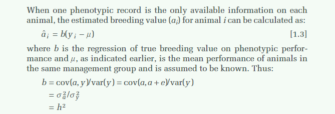</p>
<blockquote>
<p>The corrlelation between the selection criterion, in this case the phenotypic value, and the true breeding value is known as the accuracy of prediction.</p>
</blockquote>
<p>这段话是说在这种情况下，表型和育种值的相关便是预测准确性（the accuracy of prediction）。但是这里的育种值用的就是the true breeding value，也就是平常说的估计育种值？<br>
而某些情况下，对准确性进行平方，称为可靠性（reliability or repeatability,r^2），即相关系数的平方。</p>
<h1>Computing Strategies for Solving Mixed Model Equations</h1>
<p>对大量方程组的求解通常采用迭代技术因为数据太大，使得直接求逆时无法全部储存再内存中。（Solution of a  large set of equations is usually by iteration techniques because they are too large to store in the memory of the com- puter for direct inversion）<br>
虽然BLUP可能是最好的分析线性模型的方法，但是其计算的复杂度使得研究者需要使用简单的模型，或者采用除BLUP外的其他方法。因此，可计算性（computability）非常重要。<br>
本文是单纯<strong>从理论上</strong>比较不同的计算MME的策略</p>
<h2 id="模型">模型</h2>
<p>用的是牛的数据，固定效应为场年季（HYS,herd-year-season)，随机效应为公牛效应。</p>
<h2 id="计算方法">计算方法</h2>
<p>假设有50万个奶牛观测值，均来自于 1万头公牛，5万个场年季水平。假定每个场年季水平包括来自于6头不同的公牛的10个女儿成绩。那么就会有30万个公牛×场年季亚水平。<br>
像数据量这么庞大的情况下，直接求逆是不可能的。</p>
<h2 id="第一种方法-–-直接方法-Straightforward-Approach">第一种方法 – 直接方法(Straightforward  Approach)</h2>
<p>将系数矩阵的所有非0值存储在硬盘中，每一行为所在行id，所在列id，值。(感觉类似为DMU跑出的G阵)。<br>
<strong>y = Wh + Zs + e</strong><br>
MME中<strong>W’W</strong>是包含了50,000个非零元素的对角线矩阵（其中的值为每个场年季水平的重复数）。<strong>Z’Z</strong>也是包含了10,000个非零元素的对角线矩阵（在动物模型中，对角线元素只有0和1，表示有无表型）。<strong>W’Z</strong>和<strong>Z’W</strong>互为转置矩阵，且各包含300,000个非零值（实际为HYS×sire的亚水平的重复数）。那么系数矩阵就总共有600,000个非零元素。Any iterative solution program must read each element once during each round of iteration. Conveniently, unless there are covariates in the model, these nonzero elements are integer variables, but the time to solve the equations depends on the speed with  which  the 660,000 records can be retrieved from disk.（这一段大概说，每一次迭代都要读取每一个数字，因此从硬盘读取的速度和数字大小就影响了计算速度，不知道求逆怎么迭代？）。For example, W’W and Z’Z are diagonal matrices and the diagonals could be stored in program memory rather than disk, and thus, only 600,000   nonzero elements need to be stored on disk（作者给出的意见是，因为W’W和Z’Z是对角线元素，因此可以直接放在内存中，其他还放在硬盘中。）<br>
第四部分还要加上KA^-1^。</p>
<h2 id="第二种方法-Absorption-Approach">第二种方法-- Absorption Approach</h2>
<p>The absorption or elimination technique whereby a large diagonal submatrix can be absorbed into the other equations is frequently used for the solution of large sets of equations. Absorption of HYS equations into sire equations gives Z’MZ and Z’My, where M = I - W(W’W)^-I^W’. The resulting equations to solve are<br>
(Z’MZ + A^-1^k)s^ = Z’My (s^即s估计值）<br>
……<br>
Consequently, even though the absorption approach yields only 10,000 equations, we may have more records to read during each round of iteration, and therefore, <strong>computing costs would increase</strong>. Also, the extra program steps to sort and add together “like” coefficients is a disadvantage of the absorption approach.<br>
看不懂，不过看最后的结语，貌似计算难度还提高了。</p>
<h2 id="第三种方法–Indirect-Approach">第三种方法–Indirect Approach</h2>
<p>In this method data are arranged in HYS by sire subclasses sorted by HYS. Each record consists of HYS and sire identification with the corresponding number of daughters and the sum of daughter Observations in the subclass. Thus, we would have 300,000 subclasses for the example.<br>
If Y~Ij.~ is the subclass total and n~ij~ is the number of daughters for the jth sire in the ith<br>
HYS, then we accumulate the quantity, over sires within HYS:<br>
Y~ij.~ - n~ij~s~j~^</p>
<p>where s~j~^ is the current  solution for sire j. Then the new solution for the i^th^ HYS is<br>
……后面真看不懂</p>
<h2 id="小结">小结</h2>
<p>Prediction error variances of sire evaluations can be approximated in the same manner as<br>
with the absorption approach. The number of effective daughters, or the diagonals of Z’MZ, can be obtained while reading the HYS subclasses,but another vector of length equal to the number of sires would be needed to accumulate the information across HYS.<br>
（<strong>PEV</strong>可以通过第二种方法Absorption Approach近似估计。）<br>
The main advantage of the  indirect approach is that only one relatively simple computer program is necessary to obtain solutions for mixed model equations. At this point,  rate of convergence of the indirect approach compared with other methods is unknown. However, in the sire model  of [1], if the solutions for HYS are close to the mean of records in that HYS, then convergence should be relatively quick because HYS means are the solutions  after  the first iteration. Knowing I’A^-1^s  should be zero can also speed convergence<br>
(没看懂，好像是说第三种间接方法只适用于模型不变时？)</p>
<h1>Indirect Solution of Mixed Model Equations</h1>
<p>Two iterative procedures were investigated, Gauss-Seidel and Jacobi.With a balanced dara set, putting restrictions on fixed effects is not effective for improving convergence ratcs in GaussSeidel but is essential in Jacobi.</p>
<h2 id="引言">引言</h2>
<p>构建MME需要花很长时间。Schaeffer and Kennedy 展示了一种不用构建the system of equations的策略。他们的策略，称之为indirect approach,performs Gauss-Seidel (G-S) or successive overrelaxation (SOR) iteration while reading the data files rather than the matrix of coefficients.The data files, read once per round of iteration, consist of two copies of an observation file, each sorted for a different factor with a large number of levels, and three<br>
copies of a relationship file, also sorted differently.<br>
Misztal (2, 3) proposed another indirect approach using Jacobi (J) iteration (8). Programming<br>
is simpler, because only one unsorted copy of each of the observation and relationship files need to be read per round of iteration.Basic J iteration has a poor convergence rate,especially for models with many factors or with a random factor including t~ numerator relationship matrix. However, putting restrictions on the effects of levels of fixed factors and extending the method to second·order J made it competitive in running time relative to other methods; convergence rate was approximately half ,ha’ of SOR (8)<br>
This paper presents the indirect approach in terms of succesive averaging, investigates its<br>
properties, and describes several computing options.z<br>
还是看不懂，这个真的是纯方法。两种迭代方式。优点就是不用构建MME了。</p>
<h1>python 进行矩阵求解</h1>
<p>宋师兄是从from scipy import linalg，但其实numpy 本身也有这个linalg, 也可以实现相同的功能。<br>
宋师兄python- GBLUP</p>
<figure class="highlight python"><table><tr><td class="gutter"><pre><span class="line">1</span><br><span class="line">2</span><br><span class="line">3</span><br><span class="line">4</span><br><span class="line">5</span><br><span class="line">6</span><br><span class="line">7</span><br><span class="line">8</span><br><span class="line">9</span><br><span class="line">10</span><br><span class="line">11</span><br><span class="line">12</span><br><span class="line">13</span><br><span class="line">14</span><br><span class="line">15</span><br><span class="line">16</span><br><span class="line">17</span><br><span class="line">18</span><br><span class="line">19</span><br><span class="line">20</span><br><span class="line">21</span><br><span class="line">22</span><br><span class="line">23</span><br><span class="line">24</span><br><span class="line">25</span><br><span class="line">26</span><br><span class="line">27</span><br><span class="line">28</span><br><span class="line">29</span><br><span class="line">30</span><br><span class="line">31</span><br><span class="line">32</span><br><span class="line">33</span><br><span class="line">34</span><br><span class="line">35</span><br><span class="line">36</span><br><span class="line">37</span><br><span class="line">38</span><br><span class="line">39</span><br><span class="line">40</span><br><span class="line">41</span><br><span class="line">42</span><br><span class="line">43</span><br><span class="line">44</span><br><span class="line">45</span><br><span class="line">46</span><br><span class="line">47</span><br><span class="line">48</span><br><span class="line">49</span><br><span class="line">50</span><br><span class="line">51</span><br><span class="line">52</span><br><span class="line">53</span><br><span class="line">54</span><br><span class="line">55</span><br><span class="line">56</span><br><span class="line">57</span><br><span class="line">58</span><br><span class="line">59</span><br><span class="line">60</span><br><span class="line">61</span><br><span class="line">62</span><br><span class="line">63</span><br><span class="line">64</span><br><span class="line">65</span><br><span class="line">66</span><br><span class="line">67</span><br><span class="line">68</span><br><span class="line">69</span><br><span class="line">70</span><br><span class="line">71</span><br><span class="line">72</span><br><span class="line">73</span><br><span class="line">74</span><br><span class="line">75</span><br><span class="line">76</span><br><span class="line">77</span><br><span class="line">78</span><br><span class="line">79</span><br><span class="line">80</span><br><span class="line">81</span><br><span class="line">82</span><br><span class="line">83</span><br><span class="line">84</span><br></pre></td><td class="code"><pre><span class="line"><span class="comment"># -*- coding: UTF-8 -*-</span></span><br><span class="line"><span class="keyword">import</span> numpy <span class="keyword">as</span> np</span><br><span class="line"><span class="keyword">from</span> pysnptools.snpreader <span class="keyword">import</span> Bed</span><br><span class="line"><span class="keyword">from</span> scipy <span class="keyword">import</span> linalg</span><br><span class="line"><span class="keyword">import</span> pandas <span class="keyword">as</span> pd</span><br><span class="line"></span><br><span class="line"><span class="comment">###构建G矩阵###</span></span><br><span class="line"><span class="comment"># PLINK bed文件名</span></span><br><span class="line">bed_file = <span class="string">&#x27;plink2&#x27;</span></span><br><span class="line"><span class="comment"># 读取数据</span></span><br><span class="line">M = Bed(bed_file, count_A1=<span class="literal">False</span>).read()</span><br><span class="line"><span class="comment"># 计算每个位点的等位基因频率</span></span><br><span class="line">freq = np.<span class="built_in">sum</span>(M.val, axis=<span class="number">0</span>) / (<span class="number">2</span> * M.iid_count)</span><br><span class="line"><span class="comment"># 计算标准化因子</span></span><br><span class="line">scale = np.<span class="built_in">sum</span>(<span class="number">2</span> * freq * (<span class="number">1</span> - freq))</span><br><span class="line"><span class="comment"># 计算Z矩阵</span></span><br><span class="line">Z = M.val - <span class="number">2</span> * freq</span><br><span class="line"><span class="comment"># 计算G矩阵</span></span><br><span class="line">G = np.dot(Z, Z.T) / scale</span><br><span class="line"><span class="comment">#对角线向量加0.001</span></span><br><span class="line">d = np.diag(G) + <span class="number">0.001</span></span><br><span class="line"><span class="comment">#替换原来的G矩阵对角线</span></span><br><span class="line">np.fill_diagonal(G, d)</span><br><span class="line"><span class="comment">#求逆</span></span><br><span class="line">Ginv = linalg.inv(G)</span><br><span class="line"></span><br><span class="line"></span><br><span class="line"><span class="comment">#读取数据文件</span></span><br><span class="line">data_file = <span class="string">&#x27;phe&#x27;</span></span><br><span class="line">data = pd.read_table(data_file, header=<span class="number">0</span>, sep = <span class="string">&#x27;\s+&#x27;</span>)</span><br><span class="line"><span class="built_in">print</span> data.head()</span><br><span class="line"><span class="comment">#数据文件有6列，ID、mean、sex、age、、phe。</span></span><br><span class="line"></span><br><span class="line"><span class="comment">#表型向量</span></span><br><span class="line">y = np.array(data[<span class="string">&#x27;phe&#x27;</span>], dtype = np.<span class="built_in">float</span>)</span><br><span class="line"><span class="comment">#固定效应设计矩阵</span></span><br><span class="line">X = np.array(data.loc[:,<span class="string">&#x27;mean&#x27;</span>:<span class="string">&#x27;treat&#x27;</span>], dtype = np.<span class="built_in">float</span>)</span><br><span class="line">	<span class="comment"># data.loc中表示，提取mean列到treat列的所有行</span></span><br><span class="line">	<span class="comment"># treat没出现在前面，估计是第5列</span></span><br><span class="line">	<span class="comment"># 这个也不符合固定效应关联矩阵的定义啊，搞不懂</span></span><br><span class="line">	<span class="comment"># 反正这里的X阵，应该不是理论上的固定效应设计矩阵，它的行数和表型数目一致，所以下文中，才能对X阵,Z阵按列进行合并，形成什么W阵。</span></span><br><span class="line"><span class="comment">#随机效应矩阵为单位阵</span></span><br><span class="line">num = <span class="built_in">len</span>(y)  <span class="comment">#个体数</span></span><br><span class="line">Z =  np.eye(num) </span><br><span class="line">	<span class="comment">#他这里的Z矩阵是表型个数的单位阵</span></span><br><span class="line">	<span class="comment">#按常规BLUP，Z矩阵是对角阵，但是有表型的是1，没表型的是0</span></span><br><span class="line">	<span class="comment">#难道这里宋师兄都是有表型的个体，不对吧？那预测啥个体啊？</span></span><br><span class="line"><span class="comment">#W矩阵</span></span><br><span class="line">W = np.concatenate((X, Z), axis = <span class="number">1</span>)</span><br><span class="line">	<span class="comment">#concatenate 数组拼接函数 axis=1,是按列合并</span></span><br><span class="line">	<span class="comment">#就是说合并的两个矩阵要有相同的行数。</span></span><br><span class="line">	<span class="comment">#嗯嗯，X和Z行数就是相同的</span></span><br><span class="line"><span class="comment">#构建W’R-1W，由于残差方差是独立同分布的，可以写为</span></span><br><span class="line">C = np.dot(W.T, W)/<span class="number">0.139</span></span><br><span class="line">	<span class="comment">#np.dot 正常的矩阵相乘，这里就是W‘*W。</span></span><br><span class="line">	<span class="comment">#0.139不知道什么意思，是不是残差方差</span></span><br><span class="line">	<span class="comment">#懂了，因为残差矩阵等于单位阵乘以残差方差，因此这里可以作为常数提出来。</span></span><br><span class="line">	<span class="comment">#因为是R逆，所以是1/残差方差。</span></span><br><span class="line"><span class="comment">#加入随机效应部分的方差协方差矩阵的逆，构建系数矩阵</span></span><br><span class="line">C[X.shape[<span class="number">1</span>]:,X.shape[<span class="number">1</span>]:] += Ginv/<span class="number">0.088</span></span><br><span class="line">	<span class="comment">#C里面是X的列数，比如如果是4，就是从第5行，第5列开始。</span></span><br><span class="line">	<span class="comment">#我懂了，这里是把𝐺^(−1)∕𝜎_𝑎^2 加上来，形成一个完整的系数矩阵。</span></span><br><span class="line"><span class="comment">#系数矩阵右手项</span></span><br><span class="line">RHS = np.dot(W.T, y)/ <span class="number">0.139</span></span><br><span class="line"><span class="comment">#求解混合模型方程组</span></span><br><span class="line">effect = linalg.solve(C, RHS)</span><br><span class="line"></span><br><span class="line"><span class="comment">#提取效应</span></span><br><span class="line">fix_eff = effect[:X.shape[<span class="number">1</span>]]  <span class="comment">#固定效应部分</span></span><br><span class="line">ran_eff = effect[X.shape[<span class="number">1</span>]:,] <span class="comment">#随机效应部分</span></span><br><span class="line"><span class="comment">####下面介绍如何对固定效应检验，如何求可靠性</span></span><br><span class="line"><span class="comment">#系数矩阵求逆</span></span><br><span class="line">Ci = linalg.inv(C)</span><br><span class="line"><span class="comment">#固定效应整体检验（包括均值），备择假设为至少有一个显著</span></span><br><span class="line">covi = linalg.inv(Ci[:X.shape[<span class="number">1</span>], :X.shape[<span class="number">1</span>]]) <span class="comment">#估计值方差协方差矩阵的逆</span></span><br><span class="line">chi_val = np.dot(fix_eff.T, np.dot(covi, fix_eff)) <span class="comment">#卡方值</span></span><br><span class="line"><span class="keyword">from</span> scipy.stats <span class="keyword">import</span> chi2 <span class="comment">#加载卡方分布的库</span></span><br><span class="line">p1 = chi2.sf(chi_val, <span class="number">4</span>) <span class="comment">#转化为P值</span></span><br><span class="line"></span><br><span class="line"><span class="comment">#育种值的可靠性计算</span></span><br><span class="line">PEV = np.diag(Ci[X.shape[<span class="number">1</span>]:, X.shape[<span class="number">1</span>]:]) <span class="comment">#取系数矩阵随机效应部分的对角线，即为PEV</span></span><br><span class="line">R2 = <span class="number">1</span> - PEV/<span class="number">0.088</span></span><br><span class="line"><span class="comment">#输出可靠性的最大、最小值</span></span><br><span class="line"><span class="built_in">print</span> <span class="built_in">max</span>(R2), <span class="built_in">min</span>(R2)  <span class="comment">#可靠性比较高，可能由于所有个体都表型</span></span><br></pre></td></tr></table></figure>
<h1>Efficient Methods to Compute Genomic Predictions – VanRaden 2008</h1>
<h2 id="M矩阵（-1，0，1）">M矩阵（-1，0，1）</h2>
<p>M矩阵是n(个体数)*m（snp数）的矩阵，内容为-1，0，1（-1表示Major frequent的纯合子，0表示杂合子，1表示Minor frequent 的纯合子）。<br>
MM’ 的对角线元素为每个个体的纯和子的数目，非对角线元素没有实际意义（实际等于两个个体相同的纯和子数目（如AA与AA）-不同的纯合子数目（AA与TT）,杂合子没影响）（off-diagonals measure the number of alleles shared by relatives.）</p>
<p>M’M 的对角线表示每个位点纯合子的个体数，非对角线元素没有实际意义，计算类上。</p>
<h2 id="P矩阵（2-p-0-5">P矩阵（2*(p-0.5))</h2>
<p>P矩阵也是n<em>m的矩阵，其中每一列的内容都是相同的（对应的是该snp的2</em>(p-0.5)）。<br>
其中p的计算方式是（(1<em>杂合子+2</em>Minor frequent的纯合子)/2n（n为个体数））。</p>
<h2 id="Z矩阵-中心化">Z矩阵 中心化</h2>
<p>Z = M - P (which sets mean values of the allele effects to 0.)<br>
懂了，所谓矩阵中心化就是说，就是减去均值，使数据的均值的为0。<br>
而标准化的过程，是减去均值，然后除以标准差。使数据满足（0，1）的标准正态分布。<br>
为什么减去P矩阵，就能实现中心化呢？<br>
个人理解。<br>
如果所有基因满足<strong>哈温平衡</strong>，那么</p>
<figure class="highlight plain"><table><tr><td class="gutter"><pre><span class="line">1</span><br><span class="line">2</span><br><span class="line">3</span><br><span class="line">4</span><br><span class="line">5</span><br><span class="line">6</span><br></pre></td><td class="code"><pre><span class="line">D &#x3D; (1-p)^2  # D 指代的是基因频率大的纯和子</span><br><span class="line">H &#x3D; 2\*(1-p)\*(p)</span><br><span class="line">R &#x3D; p^2</span><br><span class="line">由于D H R 在M矩阵中分别为-1,0,1</span><br><span class="line">那么均值为 -1\*(1-p)^2 + 0\* 2\*(1-p)\*(p) + 1\*p^2 &#x3D; 2(p-0.5)</span><br><span class="line">但是前提是必须满足哈温平衡</span><br></pre></td></tr></table></figure>
<p>文章中也提及了选择的等位基因不能经过<strong>选择</strong>，这也就是从侧面说要满足哈温平衡。</p>
<blockquote>
<p>Allele frequencies  in  P  should  be  from  the  unselected  base  population rather than those that occur after selection or inbreeding.</p>
</blockquote>
<h2 id="G阵">G阵</h2>
<p>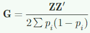</p>
<p>除以分母，使得G阵与A阵可比。</p>
<blockquote>
<p>Division by  2(1 )∑−ppii scales  G to  be  analogous(可比的)  to  the  numerator  relationship  matrix  A.</p>
</blockquote>
<h2 id="其他推导G阵的方法">其他推导G阵的方法</h2>
<p>没太看懂，反正好像就第一种用的多。</p>
<h1>model.matrix_R</h1>
<h2 id="分类变量（Factors）：R中用于存储分类数据的类别信息">分类变量（Factors）：R中用于存储分类数据的类别信息</h2>
<figure class="highlight r"><table><tr><td class="gutter"><pre><span class="line">1</span><br><span class="line">2</span><br></pre></td><td class="code"><pre><span class="line">f = factor(<span class="string">&#x27;a&#x27;</span>,<span class="string">&#x27;b&#x27;</span>,<span class="string">&#x27;a&#x27;</span>,<span class="string">&#x27;c&#x27;</span>)</span><br><span class="line"><span class="built_in">class</span>(f) <span class="comment"># &quot;factor&quot;</span></span><br></pre></td></tr></table></figure>
<h2 id="哑变量">哑变量</h2>
<p>虚拟变量/哑变量（dummy variable) ：量化非数值类型的变量，通常取0/1。例如一个人的性别。</p>
<h2 id="解释变量">解释变量</h2>
<p>解释变量（explanatory variable) : 等同于控制变量/自变量，与之相对的是<strong>被解释变量</strong>（反应变量/因变量）。</p>
<h2 id="设计矩阵">设计矩阵</h2>
<p>设计矩阵（design matrix）: 又叫<strong>模型矩阵</strong>（model matrix) 或者 <strong>回归矩阵</strong>（regressor matrix) 。 由解释变量值组成的矩阵：一行代表一个独立的观测对象（样本），一列代表对应的变量（特征值、元数据），通常记为X。简单理解，就是我们所说的输入矩阵，可以是元数据的，也可以是数据的。</p>
<h1>PH525x series - Biomedical Data Science 网页</h1>
<h2 id="choice-of-design">choice of design</h2>
<p>The choice of design matrix is a critical step in linear modeling since it encodes which coefficients will be fit in the model, as well as the inter-relationship between the samples. A common misunderstanding is that the choice of design follows straightforward from a description of which samples were included in the experiment. This is not the case. The basic information about each sample (whether control or treatment group, experimental batch, etc.) does not imply a single ‘correct’ design matrix. The design matrix additionally encodes various assumptions about how the variables in X explain the observed values in Y, on which the investigator must decide. (这一段都看不太懂，大概意思是系数矩阵的构建需要构建者自身知道，哪些<strong>X</strong>中的因素能够解释<strong>Y</strong>中的观测值。)</p>
<p>model.matrix中使用~号表示开始一个公式（formula）,这个符号右边的变量，指示每个个体在哪个群体中（which tells us which samples are in which group）。</p>
<h2 id="截距（Intercept）的含义">截距（Intercept）的含义</h2>
<p>For the examples we cover here, we use linear models to make comparisons between different groups. Hence, the design matrices that we ultimately work with will have at least two columns: an intercept column, which consists of a column of 1’s, and a second column, which specifies which samples are in a second group. In this case, two coefficients are fit in the linear model: <strong>the intercept, which represents the population average of the first group</strong>, and a second coefficient, which represents the difference between the population averages of the second group and the first group. The latter is typically the coefficient we are interested in when we are performing statistical tests: we want to know if their is a difference between the two groups.</p>
<p>从这段画可以看出，截距是有含义的。这里的模型是Y为老鼠的体重，自变量只有一个，那就是是否接受了高脂肪食物（只有两种状态0和1，0表示没有，1表示接受了高脂肪食物）。这里的截距β就是指当老鼠没有接受高脂肪食物时的平均体重，而β1指的是接受高脂肪食物后体重的平均变化量。</p>
<p>简单的说，也就是截距表示的<strong>group的一种状态（随便那种设为基本状态，R里好像是把碰到的第一个分类给截距）<strong>时的均值。也就是截距就表示了一种状态（状态0）。其他的group的值是在这个基础状态的</strong>变化量</strong>。比如此时β1就是接受高脂肪食物相较于没有接受的体重增加量。</p>
<p>如果不设截距，使用~group-1，此时如果如果Y = βx + e。每个β（两种状态）都是<strong>绝对值</strong>。</p>
<p>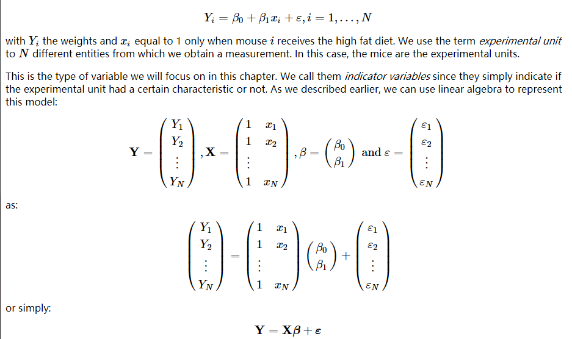</p>
<h2 id="组别为2">组别为2</h2>
<p>Let’s try an example. Suppose we have two groups, control and high fat diet, with two samples each. For illustrative purposes, we will code these with 1 and 2 respectively. <strong>We should first tell R that these values should not be interpreted numerically, but as different levels of a factor.</strong> （在R中，设计矩阵那一列必须设定为<strong>factor</strong>）</p>
<figure class="highlight r"><table><tr><td class="gutter"><pre><span class="line">1</span><br><span class="line">2</span><br><span class="line">3</span><br><span class="line">4</span><br><span class="line">5</span><br><span class="line">6</span><br><span class="line">7</span><br><span class="line">8</span><br><span class="line">9</span><br><span class="line">10</span><br><span class="line">11</span><br><span class="line">12</span><br><span class="line">13</span><br><span class="line">14</span><br><span class="line">15</span><br></pre></td><td class="code"><pre><span class="line">group &lt;- factor(<span class="built_in">c</span>(<span class="number">1</span>,<span class="number">1</span>,<span class="number">2</span>,<span class="number">2</span>))</span><br><span class="line">model.matrix(~group)</span><br><span class="line"><span class="comment">#model.matrix(formula(~ group)) #可以省略formula()</span></span><br><span class="line"><span class="comment">## 结果如下，如果不写-1，那么就会有一个截距</span></span><br><span class="line"><span class="comment">## 因为因子化了，这里的group就好像变成0和1了。</span></span><br><span class="line"> (Intercept) group2</span><br><span class="line">1           <span class="number">1</span>      <span class="number">0</span></span><br><span class="line">2           <span class="number">1</span>      <span class="number">0</span></span><br><span class="line">3           <span class="number">1</span>      <span class="number">1</span></span><br><span class="line">4           <span class="number">1</span>      <span class="number">1</span></span><br><span class="line"><span class="built_in">attr</span>(,<span class="string">&quot;assign&quot;</span>)</span><br><span class="line">[<span class="number">1</span>] <span class="number">0</span> <span class="number">1</span></span><br><span class="line"><span class="built_in">attr</span>(,<span class="string">&quot;contrasts&quot;</span>)</span><br><span class="line"><span class="built_in">attr</span>(,<span class="string">&quot;contrasts&quot;</span>)$group</span><br><span class="line">[<span class="number">1</span>] <span class="string">&quot;contr.treatment&quot;</span></span><br></pre></td></tr></table></figure>
<h3 id="group-1">group - 1</h3>
<figure class="highlight r"><table><tr><td class="gutter"><pre><span class="line">1</span><br><span class="line">2</span><br><span class="line">3</span><br><span class="line">4</span><br><span class="line">5</span><br><span class="line">6</span><br><span class="line">7</span><br><span class="line">8</span><br><span class="line">9</span><br><span class="line">10</span><br><span class="line">11</span><br><span class="line">12</span><br><span class="line">13</span><br><span class="line">14</span><br><span class="line">15</span><br><span class="line">16</span><br><span class="line">17</span><br><span class="line">18</span><br><span class="line">19</span><br><span class="line">20</span><br><span class="line">21</span><br><span class="line">22</span><br><span class="line">23</span><br><span class="line">24</span><br><span class="line">25</span><br><span class="line">26</span><br><span class="line">27</span><br><span class="line">28</span><br><span class="line">29</span><br><span class="line">30</span><br><span class="line">31</span><br><span class="line">32</span><br><span class="line">33</span><br></pre></td><td class="code"><pre><span class="line">group &lt;- factor(<span class="built_in">c</span>(<span class="number">1</span>,<span class="number">1</span>,<span class="number">2</span>,<span class="number">2</span>))</span><br><span class="line">model.matrix(~group -<span class="number">1</span> )</span><br><span class="line"><span class="comment">#model.matrix(~group +0 )</span></span><br><span class="line"><span class="comment"># ~group - 1(+0) 这样就没有基础值β0了。</span></span><br><span class="line"><span class="comment"># This group now fits a separate coefficient for each group.</span></span><br><span class="line">  group1 group2</span><br><span class="line">1      <span class="number">1</span>      <span class="number">0</span></span><br><span class="line">2      <span class="number">1</span>      <span class="number">0</span></span><br><span class="line">3      <span class="number">0</span>      <span class="number">1</span></span><br><span class="line">4      <span class="number">0</span>      <span class="number">1</span></span><br><span class="line"><span class="built_in">attr</span>(,<span class="string">&quot;assign&quot;</span>)</span><br><span class="line">[<span class="number">1</span>] <span class="number">1</span> <span class="number">1</span></span><br><span class="line"><span class="built_in">attr</span>(,<span class="string">&quot;contrasts&quot;</span>)</span><br><span class="line"><span class="built_in">attr</span>(,<span class="string">&quot;contrasts&quot;</span>)$group</span><br><span class="line">[<span class="number">1</span>] <span class="string">&quot;contr.treatment&quot;</span></span><br><span class="line"></span><br><span class="line">如果我们不设定group为**因子**的话</span><br><span class="line"></span><br><span class="line">```R</span><br><span class="line">group &lt;- c(1,1,2,2)</span><br><span class="line">model.matrix(~group)</span><br><span class="line"></span><br><span class="line">## 结果，这里group是1和2，不符合设计矩阵元素只有0和1</span><br><span class="line">## 所谓设计矩阵，只是一个*indicator*,指示个体所属的group，因此只有0和1，而且一列只有一个1，其他都是0。</span><br><span class="line">## 所以，model.matrix所在列的实际内容无关紧要，是数字也好，字符串也好。都没影响，都只是分类变量，设计矩阵只是提示这个个体属于哪个分类（group）</span><br><span class="line">## 因此，model.matrix前必须进行因子化。</span><br><span class="line">  (Intercept) group</span><br><span class="line">1           1     1</span><br><span class="line">2           1     1</span><br><span class="line">3           1     2</span><br><span class="line">4           1     2</span><br><span class="line">attr(,&quot;assign&quot;)</span><br><span class="line">[1] 0 1</span><br></pre></td></tr></table></figure>
<p>将分类列的内容换成字符串，结果相同</p>
<figure class="highlight r"><table><tr><td class="gutter"><pre><span class="line">1</span><br><span class="line">2</span><br><span class="line">3</span><br><span class="line">4</span><br><span class="line">5</span><br><span class="line">6</span><br><span class="line">7</span><br><span class="line">8</span><br><span class="line">9</span><br><span class="line">10</span><br><span class="line">11</span><br><span class="line">12</span><br><span class="line">13</span><br></pre></td><td class="code"><pre><span class="line">group &lt;- factor(<span class="built_in">c</span>(<span class="string">&quot;control&quot;</span>,<span class="string">&quot;control&quot;</span>,<span class="string">&quot;highfat&quot;</span>,<span class="string">&quot;highfat&quot;</span>))</span><br><span class="line">model.matrix(~ group)</span><br><span class="line"></span><br><span class="line"><span class="comment">##   (Intercept) grouphighfat</span></span><br><span class="line"><span class="comment">## 1           1            0</span></span><br><span class="line"><span class="comment">## 2           1            0</span></span><br><span class="line"><span class="comment">## 3           1            1</span></span><br><span class="line"><span class="comment">## 4           1            1</span></span><br><span class="line"><span class="comment">## attr(,&quot;assign&quot;)</span></span><br><span class="line"><span class="comment">## [1] 0 1</span></span><br><span class="line"><span class="comment">## attr(,&quot;contrasts&quot;)</span></span><br><span class="line"><span class="comment">## attr(,&quot;contrasts&quot;)$group</span></span><br><span class="line"><span class="comment">## [1] &quot;contr.treatment&quot;</span></span><br></pre></td></tr></table></figure>
<h3 id="More-groups">More groups</h3>
<figure class="highlight r"><table><tr><td class="gutter"><pre><span class="line">1</span><br><span class="line">2</span><br><span class="line">3</span><br><span class="line">4</span><br><span class="line">5</span><br><span class="line">6</span><br><span class="line">7</span><br><span class="line">8</span><br><span class="line">9</span><br><span class="line">10</span><br><span class="line">11</span><br><span class="line">12</span><br><span class="line">13</span><br><span class="line">14</span><br></pre></td><td class="code"><pre><span class="line">group &lt;- factor(<span class="built_in">c</span>(<span class="number">1</span>,<span class="number">1</span>,<span class="number">2</span>,<span class="number">2</span>,<span class="number">3</span>,<span class="number">3</span>))</span><br><span class="line">model.matrix(~ group)</span><br><span class="line"><span class="comment">##   (Intercept) group2 group3</span></span><br><span class="line"><span class="comment">## 1           1      0      0</span></span><br><span class="line"><span class="comment">## 2           1      0      0</span></span><br><span class="line"><span class="comment">## 3           1      1      0</span></span><br><span class="line"><span class="comment">## 4           1      1      0</span></span><br><span class="line"><span class="comment">## 5           1      0      1</span></span><br><span class="line"><span class="comment">## 6           1      0      1</span></span><br><span class="line"><span class="comment">## attr(,&quot;assign&quot;)</span></span><br><span class="line"><span class="comment">## [1] 0 1 1</span></span><br><span class="line"><span class="comment">## attr(,&quot;contrasts&quot;)</span></span><br><span class="line"><span class="comment">## attr(,&quot;contrasts&quot;)$group</span></span><br><span class="line"><span class="comment">## [1] &quot;contr.treatment&quot;</span></span><br></pre></td></tr></table></figure>
<p>Now we have a third column which specifies which samples belong to the third group.（现在我们有了第三列，来表示第三种group）</p>
<h2 id="更多的变量">更多的变量</h2>
<p>这里只考虑了diet，实际情况中一般会有更多的变量。在这里，我们增加了<strong>性别</strong>变量。</p>
<figure class="highlight r"><table><tr><td class="gutter"><pre><span class="line">1</span><br><span class="line">2</span><br><span class="line">3</span><br><span class="line">4</span><br><span class="line">5</span><br><span class="line">6</span><br><span class="line">7</span><br></pre></td><td class="code"><pre><span class="line">diet &lt;- factor(<span class="built_in">c</span>(<span class="number">1</span>,<span class="number">1</span>,<span class="number">1</span>,<span class="number">1</span>,<span class="number">2</span>,<span class="number">2</span>,<span class="number">2</span>,<span class="number">2</span>))</span><br><span class="line">sex &lt;- factor(<span class="built_in">c</span>(<span class="string">&quot;f&quot;</span>,<span class="string">&quot;f&quot;</span>,<span class="string">&quot;m&quot;</span>,<span class="string">&quot;m&quot;</span>,<span class="string">&quot;f&quot;</span>,<span class="string">&quot;f&quot;</span>,<span class="string">&quot;m&quot;</span>,<span class="string">&quot;m&quot;</span>))</span><br><span class="line">table(diet,sex)</span><br><span class="line"><span class="comment">##     sex</span></span><br><span class="line"><span class="comment">## diet f m</span></span><br><span class="line"><span class="comment">##    1 2 2</span></span><br><span class="line"><span class="comment">##    2 2 2</span></span><br></pre></td></tr></table></figure>
<p>如果我们假设日粮效应对于公鼠和母鼠的效应是相同的（也就是二者没有互作）。那么线性模型为<br>
Y~i~ = β~0~ + β~1~x~i,1~ + β~2~x~2,i~ + e~i~</p>
<p>那么，model.matrix设置如下</p>
<figure class="highlight plain"><table><tr><td class="gutter"><pre><span class="line">1</span><br><span class="line">2</span><br><span class="line">3</span><br><span class="line">4</span><br><span class="line">5</span><br><span class="line">6</span><br><span class="line">7</span><br><span class="line">8</span><br><span class="line">9</span><br><span class="line">10</span><br><span class="line">11</span><br><span class="line">12</span><br><span class="line">13</span><br><span class="line">14</span><br><span class="line">15</span><br><span class="line">16</span><br><span class="line">17</span><br><span class="line">18</span><br><span class="line">19</span><br><span class="line">20</span><br><span class="line">21</span><br></pre></td><td class="code"><pre><span class="line">diet &lt;- factor(c(1,1,1,1,2,2,2,2))</span><br><span class="line">sex &lt;- factor(c(&quot;f&quot;,&quot;f&quot;,&quot;m&quot;,&quot;m&quot;,&quot;f&quot;,&quot;f&quot;,&quot;m&quot;,&quot;m&quot;))</span><br><span class="line">model.matrix(~ diet + sex)</span><br><span class="line">##   (Intercept) diet2 sexm</span><br><span class="line">## 1           1     0    0</span><br><span class="line">## 2           1     0    0</span><br><span class="line">## 3           1     0    1</span><br><span class="line">## 4           1     0    1</span><br><span class="line">## 5           1     1    0</span><br><span class="line">## 6           1     1    0</span><br><span class="line">## 7           1     1    1</span><br><span class="line">## 8           1     1    1</span><br><span class="line">## attr(,&quot;assign&quot;)</span><br><span class="line">## [1] 0 1 2</span><br><span class="line">## attr(,&quot;contrasts&quot;)</span><br><span class="line">## attr(,&quot;contrasts&quot;)$diet</span><br><span class="line">## [1] &quot;contr.treatment&quot;</span><br><span class="line">## </span><br><span class="line">## attr(,&quot;contrasts&quot;)$sex</span><br><span class="line">## [1] &quot;contr.treatment&quot;</span><br><span class="line"></span><br></pre></td></tr></table></figure>
<p>如果考虑互作效应</p>
<figure class="highlight r"><table><tr><td class="gutter"><pre><span class="line">1</span><br><span class="line">2</span><br><span class="line">3</span><br><span class="line">4</span><br><span class="line">5</span><br><span class="line">6</span><br><span class="line">7</span><br><span class="line">8</span><br><span class="line">9</span><br><span class="line">10</span><br><span class="line">11</span><br><span class="line">12</span><br><span class="line">13</span><br><span class="line">14</span><br><span class="line">15</span><br><span class="line">16</span><br><span class="line">17</span><br><span class="line">18</span><br><span class="line">19</span><br><span class="line">20</span><br><span class="line">21</span><br></pre></td><td class="code"><pre><span class="line">model.matrix(~ diet + sex + diet:sex)</span><br><span class="line"><span class="comment">#model.matrix(~ diet*sex)</span></span><br><span class="line"></span><br><span class="line"><span class="comment">##   (Intercept) diet2 sexm diet2:sexm</span></span><br><span class="line"><span class="comment">## 1           1     0    0          0</span></span><br><span class="line"><span class="comment">## 2           1     0    0          0</span></span><br><span class="line"><span class="comment">## 3           1     0    1          0</span></span><br><span class="line"><span class="comment">## 4           1     0    1          0</span></span><br><span class="line"><span class="comment">## 5           1     1    0          0</span></span><br><span class="line"><span class="comment">## 6           1     1    0          0</span></span><br><span class="line"><span class="comment">## 7           1     1    1          1</span></span><br><span class="line"><span class="comment">## 8           1     1    1          1</span></span><br><span class="line"><span class="comment">## attr(,&quot;assign&quot;)</span></span><br><span class="line"><span class="comment">## [1] 0 1 2 3</span></span><br><span class="line"><span class="comment">## attr(,&quot;contrasts&quot;)</span></span><br><span class="line"><span class="comment">## attr(,&quot;contrasts&quot;)$diet</span></span><br><span class="line"><span class="comment">## [1] &quot;contr.treatment&quot;</span></span><br><span class="line"><span class="comment">## </span></span><br><span class="line"><span class="comment">## attr(,&quot;contrasts&quot;)$sex</span></span><br><span class="line"><span class="comment">## [1] &quot;contr.treatment&quot;</span></span><br><span class="line"></span><br></pre></td></tr></table></figure>
<h3 id="Releveling-设置参考水平，reference-level">Releveling (设置参考水平，<em>reference level</em>)</h3>
<p>The level which is chosen for the reference level is the level which is contrasted against. By default, this is simply the first level alphabetically. We can specify that we want group 2 to be the reference level by either using the <em>relevel</em> function:<br>
翻译一下，所谓reference level（参考水平，也就是截距的水平），即是其他水平与之相比较的水平。默认情况下，参考水平就是<strong>名称按字母排序</strong>的第一个水平。我们可以通过<strong>relevel</strong>函数设定reference level。</p>
<figure class="highlight r"><table><tr><td class="gutter"><pre><span class="line">1</span><br><span class="line">2</span><br><span class="line">3</span><br><span class="line">4</span><br><span class="line">5</span><br><span class="line">6</span><br><span class="line">7</span><br><span class="line">8</span><br><span class="line">9</span><br><span class="line">10</span><br><span class="line">11</span><br><span class="line">12</span><br><span class="line">13</span><br><span class="line">14</span><br></pre></td><td class="code"><pre><span class="line">group &lt;- factor(<span class="built_in">c</span>(<span class="number">1</span>,<span class="number">1</span>,<span class="number">2</span>,<span class="number">2</span>))</span><br><span class="line">group &lt;- relevel(group, <span class="string">&quot;2&quot;</span>)</span><br><span class="line">model.matrix(~ group)</span><br><span class="line"><span class="comment">##   (Intercept) group1</span></span><br><span class="line"><span class="comment">## 1           1      1</span></span><br><span class="line"><span class="comment">## 2           1      1</span></span><br><span class="line"><span class="comment">## 3           1      0</span></span><br><span class="line"><span class="comment">## 4           1      0</span></span><br><span class="line"><span class="comment">## attr(,&quot;assign&quot;)</span></span><br><span class="line"><span class="comment">## [1] 0 1</span></span><br><span class="line"><span class="comment">## attr(,&quot;contrasts&quot;)</span></span><br><span class="line"><span class="comment">## attr(,&quot;contrasts&quot;)$group</span></span><br><span class="line"><span class="comment">## [1] &quot;contr.treatment&quot;</span></span><br><span class="line"></span><br></pre></td></tr></table></figure>
<h2 id="连续变量">连续变量</h2>
<p>In this chapter, we focus on models based on indicator values. In certain designs, however, we will be interested in using numeric variables in the design formula, as opposed to converting them to factors first. For example, in the falling object example, time was a continuous variable in the model and time squared was also included:<br>
翻译一下，就是一般设计矩阵都是用于分类变量，当有时我们也会感兴趣一些连续变量。比如在落体运动，时间和时间的平方就应该考虑进入模型中。<br>
连续变量用于设计矩阵，表示的是一种<strong>剂量效应</strong>。此时求解出来的β表示的是每增加一单位的连续变量，y的平均改变量。<br>
这也就是带来了一种连续变量应用的假设或前提，你得知道这个变量对反应变量的影响是<strong>线性</strong>的。不然得出的结果是错的。<br>
以下英文具体阐述了这种观点。例如落体距离与时间的关系，因为有经典的物理的公式，所以我们确信它们之间是<strong>线性关系</strong>。但是对于其他变量，如年龄等可能不是线性关系的变量，我们不鼓励这么使用。<br>
The assumptions imposed by including continuous data as variables are typically hard to defend and motivate than the indicator function variables. Why the indicator variables simply assume a different mean between two groups, continuous variables assume a very specific relationship between the outcome and predictor variables.</p>
<p>In cases like the falling object, we have the theory of gravitation supporting the model. In the father-son height example, because the data is bi variate normal, it follows that there is a linear relationship if we condition. However, we find that continuous variables are included in linear models without justification to “adjust” for variables such as age. We highly discourage this practice unless the data support the model being used.</p>
<figure class="highlight r"><table><tr><td class="gutter"><pre><span class="line">1</span><br><span class="line">2</span><br><span class="line">3</span><br><span class="line">4</span><br><span class="line">5</span><br><span class="line">6</span><br><span class="line">7</span><br><span class="line">8</span><br><span class="line">9</span><br><span class="line">10</span><br><span class="line">11</span><br><span class="line">12</span><br><span class="line">13</span><br><span class="line">14</span><br><span class="line">15</span><br><span class="line">16</span><br><span class="line">17</span><br><span class="line">18</span><br><span class="line">19</span><br><span class="line">20</span><br></pre></td><td class="code"><pre><span class="line"><span class="comment"># I()用于在模型中进行数学转换时。</span></span><br><span class="line"><span class="comment">#因为在模型的定义中，常见的符号+（俩变量）、*（考虑互作）、：（互作）、^(不清楚)有了特殊含义，不再是原来的数学运算符号。</span></span><br><span class="line"><span class="comment">#^符号貌似是考虑互作？ 在模型中，（x+y)^2 表示的是 x + y + x:y</span></span><br><span class="line"><span class="comment">#?fromula 中The ^ operator indicates crossing to the specified degree. For example (a+b+c)^2 is identical to (a+b+c)*(a+b+c) which in turn expands to a formula containing the main effects for a, b and c together with their second-order interactions. </span></span><br><span class="line"><span class="comment">#即(a+b+c)^2 表示 a + b + c + a:b + a:c + b:c。嗯，对的</span></span><br><span class="line"><span class="comment"># -1 或 +0 都表示通过原点，即没有截距。</span></span><br><span class="line"><span class="comment">#变量保护函数（I( )）：放在I内的表达式按照算术意义进行解释</span></span><br><span class="line">	<span class="comment">#a+b 表示变量a和变量b都包含在公式中</span></span><br><span class="line">	<span class="comment">#I(a+b）表示 a+b 这个和应该包含在公式中</span></span><br><span class="line"><span class="comment"># R中关于模型设定的问题，找?formula.</span></span><br><span class="line">tt &lt;- seq(<span class="number">0</span>,<span class="number">3.4</span>,len=<span class="number">4</span>) </span><br><span class="line">model.matrix(~ tt + I(tt^<span class="number">2</span>))</span><br><span class="line"></span><br><span class="line"><span class="comment">##   (Intercept)       tt   I(tt^2)</span></span><br><span class="line"><span class="comment">## 1           1 0.000000  0.000000</span></span><br><span class="line"><span class="comment">## 2           1 1.133333  1.284444</span></span><br><span class="line"><span class="comment">## 3           1 2.266667  5.137778</span></span><br><span class="line"><span class="comment">## 4           1 3.400000 11.560000</span></span><br><span class="line"><span class="comment">## attr(,&quot;assign&quot;)</span></span><br><span class="line"><span class="comment">## [1] 0 1 2</span></span><br></pre></td></tr></table></figure>
<h1>MME构建与求解-邓飞</h1>
<p>setwd(‘D:\Desktop\R_model’)<br>
ped &lt;- read.table(‘example_ped.txt’,header = F)<br>
dat &lt;- read.table(‘example_dat.txt’,header = F)</p>
<h2 id="处理系谱">处理系谱</h2>
<p>library(nadiv)<br>
pped = prepPed(ped)#给founders也增加一行系谱，然后排序系谱<br>
pped</p>
<h1>输入系谱文件缺失值为NA,0,*</h1>
<h1>输出文件缺失值全未NA</h1>
<h1>A = as.matrix(makeA(pped))</h1>
<h1>A</h1>
<h1>A_inv = solve(A) #solve(A) 即求逆</h1>
<h1>A_inv</h1>
<p>A_inv = makeAinv(pped)Ainv为稀疏矩阵<br>
#$listAinv为三列的格式<br>
#f为近交系数，不计算<br>
#logDet the log determinant of the A matrix<br>
#dii the (non-zero) elements of the diagonal D matrix of the A=TDT’ decomposition.</p>
<h2 id="修要对A逆按照一定顺序重排">修要对A逆按照一定顺序重排</h2>
<p>A_inv = as.matrix(A_inv)<br>
#rownames(A_inv) = as.numeric(rownames(A_inv))<br>
#A_inv的行名为字符串，而且不能改成数字，不知道是为什么。</p>
<p>###使用z_phe A_inv不需要重排<br>
colnames(A_inv) = rownames(A_inv)<br>
new_rowname &lt;- sort(rownames(A_inv))<br>
new_rowname<br>
A_inv<br>
A_inv_new &lt;- A_inv[new_rowname,new_rowname]<br>
#这里用1:8，或者seq(‘1’,‘8’)，都不行，因为是数字<br>
#而实际的行名或列名是字符串。<br>
A_inv_new # 现在与Z_all就一致了。</p>
<p>str(dat)<br>
colnames(dat) &lt;- c(‘id’,‘sex’,‘wwg’) #个体号-性别-初生重<br>
datid)<br>
datsex)<br>
X &lt;- model.matrix(~sex-1,data = dat) #和书上一致<br>
Z_phe &lt;- model.matrix(~id-1,data = dat) # 5*5的单位阵，一致<br>
zero_matrix &lt;- matrix(rep(0,15),nrow = 5)<br>
Z_all &lt;- cbind(zero_matrix,Z_phe)<br>
Z_all # Z_all 为添加了三列的所有个体的Z矩阵。</p>
<p>y = as.vector(dat$wwg)</p>
<h3 id="Z-all-结果">Z_all 结果</h3>
<p>alpha = 2 # alpha设置为2</p>
<p>XpX=crossprod(X) #X’X</p>
<p>XpZ=crossprod(X,Z_all) #X’Z</p>
<p>ZpX=crossprod(Z_all,X) #Z’X</p>
<p>ZpZ=crossprod(Z_all) #Z’Z</p>
<p>Xpy=crossprod(X,y) #X’y</p>
<p>Zpy=crossprod(Z_all,y) #Z’y</p>
<p>LHS=rbind(cbind(XpX,XpZ),cbind(ZpX,ZpZ+A_inv_new*alpha)) #LHS<br>
LHS<br>
LHS_inv1 = solve(LHS)<br>
LHS_inv1</p>
<p>RHS=rbind(Xpy,Zpy) #不需要<br>
RHS</p>
<p>sol=solve(LHS)%*%RHS #MME求解<br>
sol</p>
<h3 id="Z-phe-结果">Z_phe 结果</h3>
<p>a = as.character(dat$id)<br>
A_inv2 = A_inv_new[a,a] #截取4：8个体的逆阵<br>
A_inv2</p>
<p>XpX=crossprod(X) #X’X</p>
<p>XpZ=crossprod(X,Z_phe) #X’Z</p>
<p>ZpX=crossprod(Z_phe,X) #Z’X</p>
<p>ZpZ=crossprod(Z_phe) #Z’Z</p>
<p>Xpy=crossprod(X,y) #X’y</p>
<p>Zpy=crossprod(Z_phe,y) #Z’y</p>
<p>LHS=rbind(cbind(XpX,XpZ),cbind(ZpX,ZpZ+A_inv2*alpha)) #LHS<br>
LHS ##LHS和Z_all一致<br>
LHS_inv2 = solve(LHS)<br>
LHS_inv2 #但是逆矩阵的结果就不一致了。</p>
<p>RHS=rbind(Xpy,Zpy) #不需要<br>
RHS #右手项也是去除了相应的行而已，其他一致</p>
<p>sol=solve(LHS)%*%RHS #MME求解<br>
sol<br>
#结果略有不同。</p>
<p>#小结<br>
#还是应该用所有个体，更方便。也更符合实际评估的情况。<br>
#使用全部个体及有表型个体，获得的LHS是一样的<br>
#仅仅是有表型个体的LHS，从全部个体的LHS中删除了无表型个体的行和列。</p>
<p>#问题<br>
#Z矩阵和A逆的构建问题。<br>
#Z矩阵和表型有关，又和A逆有关。<br>
#还是先构建A逆</p>
<p>#我发现一直对表型和系谱的重编号顺序是错的。<br>
#之前都是先重编号，再追系谱。这样会删掉一部分表型。<br>
#应该先追系谱（这样确保所有表型（参验群体）均在系谱中），再重编号。</p>
<p>#如果按照all的思路，应该是这样。<br>
#从单场重编号结果（从1到n,要确保不间断，即系谱总共就是n个个体）。<br>
#然后没有表型的个体就是n-m(m为表型行数)。<br>
#然后构建Z阵 有n-m列全为0,后面m列为&quot;单位阵&quot;。不对，我做的是两个场。所以后面Z阵再重复一遍，先是n2-m2列全为0，后面m2列为&quot;单位阵&quot;<br>
#得到A逆，重排，按两个场分开，每个场都是前面是没表型的，后面是有表型的。</p>
<p>#另一种思路<br>
#A逆可以不重排，完全根据A逆的顺序构建Z阵<br>
#对于每一个A中的个体，没有表型，则Z中相应的这一列（行）全为0<br>
#如果A逆中的个体有表型，那么找到这个个体在表型中的行数，此时Z中这个个体相应的行数的地方为1，其他为0<br>
#这个在python中用字典可以做到，R感觉不方便。</p>
<p>##第二种all的思路是对的。但是A逆还是要重排，最起码得第一个场的个体都在前面，第二个场的个体堵在后面。<br>
##不能两个场的个体混在一块。</p>
<p>##总结一下，all的思路复杂，在R中不好实现。在python中可能方遍实现。</p>
<p>#Z_phe<br>
#那就得按照表型的顺序挑A逆，即可。<br>
#Z阵就是一个m*m的单位阵（m为两个场的表型总数）<br>
#这种方法非常简单，实用。</p>
<p>#这里有一个潜在的问题是，表型不能再被剔除了。<br>
#也就是说从表型的原始文件到重编号，不能删表型<br>
#也就是要对原始文件提前处理好。</p>
<h1>总的来说，只使用有表型个体的数据简单，目前先用这种方法。</h1>
<h1>现在能通过A阵算出来两个场的LHS逆了，就差临门一脚PEBD了。</h1>
<p>使用实际数据，只考虑有表型个体，通过A阵构建系数矩阵整理如下。</p>
<figure class="highlight r"><table><tr><td class="gutter"><pre><span class="line">1</span><br><span class="line">2</span><br><span class="line">3</span><br><span class="line">4</span><br><span class="line">5</span><br><span class="line">6</span><br><span class="line">7</span><br><span class="line">8</span><br><span class="line">9</span><br><span class="line">10</span><br><span class="line">11</span><br><span class="line">12</span><br><span class="line">13</span><br><span class="line">14</span><br><span class="line">15</span><br><span class="line">16</span><br><span class="line">17</span><br><span class="line">18</span><br><span class="line">19</span><br><span class="line">20</span><br><span class="line">21</span><br><span class="line">22</span><br><span class="line">23</span><br><span class="line">24</span><br><span class="line">25</span><br><span class="line">26</span><br><span class="line">27</span><br><span class="line">28</span><br><span class="line">29</span><br><span class="line">30</span><br><span class="line">31</span><br><span class="line">32</span><br><span class="line">33</span><br><span class="line">34</span><br><span class="line">35</span><br><span class="line">36</span><br><span class="line">37</span><br><span class="line">38</span><br><span class="line">39</span><br><span class="line">40</span><br><span class="line">41</span><br><span class="line">42</span><br><span class="line">43</span><br><span class="line">44</span><br><span class="line">45</span><br><span class="line">46</span><br><span class="line">47</span><br><span class="line">48</span><br></pre></td><td class="code"><pre><span class="line"><span class="comment"># 这里只用有表型的个体</span></span><br><span class="line"></span><br><span class="line">setwd(<span class="string">&#x27;D:\\Desktop\\R_model\\true_practice\\HAYF19647_HAQG17137&#x27;</span>)</span><br><span class="line"></span><br><span class="line">ped &lt;- read.table(<span class="string">&#x27;pedigree_code&#x27;</span>,header = <span class="built_in">F</span>)</span><br><span class="line">dat &lt;- read.table(<span class="string">&#x27;phe_code&#x27;</span>,header = <span class="built_in">F</span>)</span><br><span class="line"></span><br><span class="line"><span class="comment">## 处理系谱</span></span><br><span class="line">new_ped &lt;- ped[,<span class="number">1</span>:<span class="number">3</span>] <span class="comment">#不要第四列</span></span><br><span class="line"></span><br><span class="line">library(nadiv)</span><br><span class="line">pped = prepPed(new_ped)<span class="comment">#给founders也增加一行系谱，然后排序系谱</span></span><br><span class="line"></span><br><span class="line">A_inv = makeAinv(pped)$Ainv<span class="comment">#可直接求A逆</span></span><br><span class="line"></span><br><span class="line">A_inv = as.matrix(A_inv)</span><br><span class="line"></span><br><span class="line">colnames(A_inv) = rownames(A_inv)</span><br><span class="line"></span><br><span class="line">str(dat)</span><br><span class="line">colnames(dat) &lt;- <span class="built_in">c</span>(<span class="string">&#x27;id&#x27;</span>,<span class="string">&#x27;gu&#x27;</span>,<span class="string">&#x27;wo&#x27;</span>,<span class="string">&#x27;age&#x27;</span>,<span class="string">&#x27;bf&#x27;</span>)</span><br><span class="line">dat$id &lt;- as.factor(dat$id) </span><br><span class="line">dat$gu &lt;- as.factor(dat$gu)</span><br><span class="line">X &lt;- model.matrix(~gu-<span class="number">1</span>,data = dat) </span><br><span class="line">Z &lt;- model.matrix(~id-<span class="number">1</span>,data = dat) <span class="comment"># Z为单位阵</span></span><br><span class="line"></span><br><span class="line">phe_id = <span class="built_in">as.character</span>(dat$id)</span><br><span class="line">A_inv2 = A_inv[phe_id,phe_id] <span class="comment">#截取表型个体的A逆</span></span><br><span class="line"></span><br><span class="line">alpha = <span class="number">2.09</span> <span class="comment"># alpha由方差组分得来。</span></span><br><span class="line"></span><br><span class="line">XpX=crossprod(X) <span class="comment">#X’X </span></span><br><span class="line"></span><br><span class="line">XpZ=crossprod(X,Z) <span class="comment">#X’Z</span></span><br><span class="line"></span><br><span class="line">ZpX=t(XpZ)</span><br><span class="line"></span><br><span class="line"><span class="comment">#ZpX=crossprod(Z,X) #Z’X</span></span><br><span class="line"></span><br><span class="line">ZpZ=crossprod(Z) <span class="comment">#Z’Z</span></span><br><span class="line"></span><br><span class="line">LHS=rbind(cbind(XpX,XpZ),cbind(ZpX,ZpZ+A_inv2*alpha)) <span class="comment">#LHS</span></span><br><span class="line"></span><br><span class="line">LHS_inv = solve(LHS)</span><br><span class="line"></span><br><span class="line">write.table(LHS,file = <span class="string">&#x27;HAYF_HAQG_LHS.txt&#x27;</span>,<span class="built_in">quote</span> = <span class="literal">FALSE</span>,sep = <span class="string">&quot; &quot;</span>,row.names = <span class="literal">FALSE</span>,col.names = <span class="literal">FALSE</span>)</span><br><span class="line">write.table(LHS_inv,file = <span class="string">&#x27;HAYF_HAQG_LHS_inv.txt&#x27;</span>,<span class="built_in">quote</span> = <span class="literal">FALSE</span>,sep = <span class="string">&quot; &quot;</span>,row.names = <span class="literal">FALSE</span>,col.names = <span class="literal">FALSE</span>)</span><br><span class="line"></span><br></pre></td></tr></table></figure>
<h1>Data Analysis for the Life Sciences</h1>
<h2 id="introduction">introduction</h2>
<p>statistical inference(统计推断)：推断就是使用可能性从数据中获取群体特征值（Inference is the use of probability to learn population characteristic from data）。一个典型的例子就是推断两个群体的平均值是否相同。</p>
<h2 id="getting-started">getting started</h2>
<p>主要是介绍了一些R的基础部分和数学基础。</p>
<figure class="highlight r"><table><tr><td class="gutter"><pre><span class="line">1</span><br><span class="line">2</span><br><span class="line">3</span><br><span class="line">4</span><br><span class="line">5</span><br><span class="line">6</span><br><span class="line">7</span><br><span class="line">8</span><br><span class="line">9</span><br><span class="line">10</span><br><span class="line">11</span><br><span class="line">12</span><br><span class="line">13</span><br><span class="line">14</span><br><span class="line">15</span><br><span class="line">16</span><br><span class="line">17</span><br><span class="line">18</span><br><span class="line">19</span><br><span class="line">20</span><br><span class="line">21</span><br><span class="line">22</span><br><span class="line">23</span><br><span class="line">24</span><br><span class="line">25</span><br><span class="line">26</span><br><span class="line">27</span><br><span class="line">28</span><br><span class="line">29</span><br><span class="line">30</span><br><span class="line">31</span><br><span class="line">32</span><br><span class="line">33</span><br><span class="line">34</span><br><span class="line">35</span><br><span class="line">36</span><br><span class="line">37</span><br><span class="line">38</span><br><span class="line">39</span><br><span class="line">40</span><br><span class="line">41</span><br><span class="line">42</span><br><span class="line">43</span><br><span class="line">44</span><br><span class="line">45</span><br><span class="line">46</span><br><span class="line">47</span><br><span class="line">48</span><br><span class="line">49</span><br><span class="line">50</span><br><span class="line">51</span><br><span class="line">52</span><br><span class="line">53</span><br></pre></td><td class="code"><pre><span class="line"><span class="comment">###第一章 getting started </span></span><br><span class="line">install.packages(<span class="string">&quot;swirl&quot;</span>)</span><br><span class="line">install.packages(<span class="string">&quot;rafalib&quot;</span>)</span><br><span class="line">install.packages(<span class="string">&quot;downloader&quot;</span>)</span><br><span class="line">setwd(<span class="string">&#x27;D:\\Desktop\\下载英文文献\\模型\\R_model&#x27;</span>)</span><br><span class="line">dat &lt;- read.table(<span class="string">&#x27;female_mouse_weights.txt&#x27;</span>,header = <span class="built_in">T</span>)</span><br><span class="line"></span><br><span class="line"><span class="comment">###通过downloader直接下载网上的数据</span></span><br><span class="line">library(downloader) <span class="comment">##use install.packages to install ##通过downloader</span></span><br><span class="line">url &lt;- <span class="string">&quot;https://raw.githubusercontent.com/genomicsclass/dagdata/master/inst/extd\</span></span><br><span class="line"><span class="string">ata/femaleMiceWeights.csv&quot;</span>  <span class="comment">## 数据的完整路径</span></span><br><span class="line">filename &lt;- <span class="string">&quot;femaleMiceWeights.csv&quot;</span></span><br><span class="line">download(url, destfile=filename) <span class="comment">## 下载，后面更的是下载后的名称</span></span><br><span class="line"></span><br><span class="line"></span><br><span class="line"><span class="comment">### 为了从GitHub 上直接下载文件夹，你需要下载devtools包</span></span><br><span class="line">library(devtools)</span><br><span class="line">install_github(<span class="string">&quot;genomicsclass/dagdata&quot;</span>)</span><br><span class="line"></span><br><span class="line">dir &lt;- system.file(package = <span class="string">&quot;dagdata&quot;</span>) <span class="comment"># 获取文件夹位置</span></span><br><span class="line">dir  <span class="comment">## &quot;D:/software/R/R-3.6.1/library/dagdata&quot;</span></span><br><span class="line">list.files(dir) <span class="comment"># 查看dir下面的文件和子文件夹</span></span><br><span class="line">list.files(dir,<span class="string">&quot;extdata&quot;</span>) <span class="comment"># 查看extdata下的子文件</span></span><br><span class="line">filename&lt;-file.path(dir,<span class="string">&quot;extdata/femaleMiceWeights.csv&quot;</span>) <span class="comment">## 文件的完整路径</span></span><br><span class="line">dat&lt;-read.csv(filename) <span class="comment">## 最终打开文件</span></span><br><span class="line"></span><br><span class="line"><span class="comment">####初探dplyr </span></span><br><span class="line">library(<span class="string">&quot;dplyr&quot;</span>)</span><br><span class="line"><span class="comment">##dplyr包中filter是进行数据筛选</span></span><br><span class="line">chow &lt;- filter(dat,Diet==<span class="string">&quot;chow&quot;</span>) <span class="comment">## 筛选Diet列中为chow的数据</span></span><br><span class="line">head(chow)</span><br><span class="line"></span><br><span class="line"><span class="comment">## select貌似是选列</span></span><br><span class="line">chowVals &lt;- select(chow,Bodyweight) <span class="comment">## 选择chow中的Bodyweight列</span></span><br><span class="line">head(chowVals)</span><br><span class="line"></span><br><span class="line"><span class="comment">## 还可以使用通道符 %&gt;% denote a pipe </span></span><br><span class="line"><span class="comment">## 因此上述两步可以合成一步</span></span><br><span class="line">chowVals &lt;- filter(dat,Diet==<span class="string">&quot;chow&quot;</span>) %&gt;% select(Bodyweight)</span><br><span class="line">head(chowVals)</span><br><span class="line"><span class="comment">## dplyr接收的是data.frame ，返回的也是data.frame</span></span><br><span class="line"><span class="built_in">class</span>(chowVals) <span class="comment">#data.frame</span></span><br><span class="line"></span><br><span class="line"><span class="comment">## 为了使结果为向量，可以使用unlist函数。将list(包括data.frame)转换成numeric vectors. </span></span><br><span class="line">chowVals &lt;- filter(dat,Diet==<span class="string">&quot;chow&quot;</span>) %&gt;% select(Bodyweight) %&gt;% unlist</span><br><span class="line"><span class="comment">## 通道少写一个参数，但是这里的unlist连()都省了</span></span><br><span class="line"><span class="built_in">class</span>(chowVals) <span class="comment">#numeric </span></span><br><span class="line"></span><br><span class="line"><span class="comment">## 不用dplyr的写法</span></span><br><span class="line">chowVals &lt;- dat[dat$Diet==<span class="string">&quot;chow&quot;</span>,<span class="string">&quot;Bodyweight&quot;</span>]</span><br><span class="line">head(chowVals)</span><br><span class="line"></span><br><span class="line"><span class="comment">## 小结，感觉R整理数据就是不太方便。</span></span><br></pre></td></tr></table></figure>
<h2 id="inference">inference</h2>
<p>以下为random variable,  null distribution,  p-value 的 简要介绍。</p>
<figure class="highlight r"><table><tr><td class="gutter"><pre><span class="line">1</span><br><span class="line">2</span><br><span class="line">3</span><br><span class="line">4</span><br><span class="line">5</span><br><span class="line">6</span><br><span class="line">7</span><br><span class="line">8</span><br><span class="line">9</span><br><span class="line">10</span><br><span class="line">11</span><br><span class="line">12</span><br><span class="line">13</span><br><span class="line">14</span><br><span class="line">15</span><br><span class="line">16</span><br><span class="line">17</span><br><span class="line">18</span><br><span class="line">19</span><br><span class="line">20</span><br><span class="line">21</span><br><span class="line">22</span><br><span class="line">23</span><br><span class="line">24</span><br><span class="line">25</span><br><span class="line">26</span><br><span class="line">27</span><br><span class="line">28</span><br><span class="line">29</span><br><span class="line">30</span><br><span class="line">31</span><br><span class="line">32</span><br><span class="line">33</span><br><span class="line">34</span><br><span class="line">35</span><br><span class="line">36</span><br><span class="line">37</span><br><span class="line">38</span><br><span class="line">39</span><br><span class="line">40</span><br><span class="line">41</span><br><span class="line">42</span><br><span class="line">43</span><br><span class="line">44</span><br><span class="line">45</span><br><span class="line">46</span><br><span class="line">47</span><br><span class="line">48</span><br><span class="line">49</span><br><span class="line">50</span><br><span class="line">51</span><br><span class="line">52</span><br><span class="line">53</span><br><span class="line">54</span><br><span class="line">55</span><br><span class="line">56</span><br><span class="line">57</span><br><span class="line">58</span><br><span class="line">59</span><br><span class="line">60</span><br><span class="line">61</span><br><span class="line">62</span><br><span class="line">63</span><br><span class="line">64</span><br><span class="line">65</span><br><span class="line">66</span><br><span class="line">67</span><br><span class="line">68</span><br><span class="line">69</span><br><span class="line">70</span><br><span class="line">71</span><br><span class="line">72</span><br><span class="line">73</span><br><span class="line">74</span><br><span class="line">75</span><br><span class="line">76</span><br><span class="line">77</span><br><span class="line">78</span><br><span class="line">79</span><br><span class="line">80</span><br><span class="line">81</span><br><span class="line">82</span><br><span class="line">83</span><br><span class="line">84</span><br><span class="line">85</span><br><span class="line">86</span><br><span class="line">87</span><br><span class="line">88</span><br><span class="line">89</span><br><span class="line">90</span><br><span class="line">91</span><br><span class="line">92</span><br><span class="line">93</span><br><span class="line">94</span><br><span class="line">95</span><br><span class="line">96</span><br><span class="line">97</span><br><span class="line">98</span><br><span class="line">99</span><br><span class="line">100</span><br><span class="line">101</span><br><span class="line">102</span><br><span class="line">103</span><br><span class="line">104</span><br><span class="line">105</span><br><span class="line">106</span><br><span class="line">107</span><br><span class="line">108</span><br><span class="line">109</span><br><span class="line">110</span><br><span class="line">111</span><br><span class="line">112</span><br><span class="line">113</span><br><span class="line">114</span><br><span class="line">115</span><br><span class="line">116</span><br><span class="line">117</span><br><span class="line">118</span><br></pre></td><td class="code"><pre><span class="line"><span class="comment">#inference</span></span><br><span class="line">setwd(<span class="string">&#x27;D:\\Desktop\\下载英文文献\\模型\\R_model&#x27;</span>)</span><br><span class="line">dat &lt;- read.table(<span class="string">&#x27;female_mouse_weights.txt&#x27;</span>,header = <span class="built_in">T</span>)</span><br><span class="line"></span><br><span class="line"><span class="comment">#####didtribution 的解析</span></span><br><span class="line"><span class="comment">#distribution：可以简单地理解为一堆数。</span></span><br><span class="line"><span class="comment">#比如你测量了一个群体中所有人的身高。</span></span><br><span class="line"><span class="comment">#这个时候你要和其他人不懂的人（such as analien that has never visited Earth）描述这些数字。</span></span><br><span class="line"></span><br><span class="line"><span class="comment">#假如以下就是你取得的身高数据</span></span><br><span class="line">library(UsingR)</span><br><span class="line">x &lt;- father.son$fheight</span><br><span class="line"></span><br><span class="line"><span class="comment">#最简单的就是列出来给外星人看</span></span><br><span class="line"><span class="built_in">round</span>(sample(x,<span class="number">10</span>),<span class="number">1</span>)</span><br><span class="line"></span><br><span class="line"><span class="comment">#但这不够充分，我们可以定义一个累积分布函数（Cumulative Distribution Function）</span></span><br><span class="line"><span class="comment">#F(a) == Pr(x&lt;a) #小于等于号</span></span><br><span class="line"></span><br><span class="line"><span class="comment">#画图如下</span></span><br><span class="line"><span class="comment"># floor ceiling 是取整用的</span></span><br><span class="line"><span class="comment"># floor 是直接取整数，ceiling 是 “天花板” </span></span><br><span class="line"><span class="comment"># 如 floor(2.99) = 2 ceiling(2.99) = 3</span></span><br><span class="line"><span class="comment"># 用在画图还是挺好的</span></span><br><span class="line"></span><br><span class="line">smallest&lt;-<span class="built_in">floor</span>( <span class="built_in">min</span>(x) )</span><br><span class="line">largest&lt;-<span class="built_in">ceiling</span>( <span class="built_in">max</span>(x) )</span><br><span class="line">values&lt;-seq(smallest, largest,len=<span class="number">300</span>)</span><br><span class="line">heightecdf&lt;-ecdf(x)</span><br><span class="line">plot(values, heightecdf(values), type=<span class="string">&quot;l&quot;</span>,xlab=<span class="string">&quot;a (Height in inches)&quot;</span>,ylab=<span class="string">&quot;Pr(x &lt;= a)&quot;</span>)</span><br><span class="line"><span class="comment"># 但是现在更常见的是画直方图</span></span><br><span class="line"><span class="comment"># 把直方图给外星人一看，基本就很清晰了。</span></span><br><span class="line">hist(x)</span><br><span class="line">bins&lt;-seq(smallest, largest)</span><br><span class="line">hist(x,breaks=bins,xlab=<span class="string">&quot;Height (in inches)&quot;</span>,main=<span class="string">&quot;Adult men heights&quot;</span>)</span><br><span class="line"><span class="comment">#breaks设置中，不用floor,ceiling 画不成图</span></span><br><span class="line"></span><br><span class="line"><span class="comment">####回到正题</span></span><br><span class="line">library(dplyr)</span><br><span class="line">control &lt;- filter(dat,Diet==<span class="string">&quot;chow&quot;</span>) %&gt;% select(Bodyweight) %&gt;% unlist</span><br><span class="line">treatment  &lt;- filter(dat,Diet==<span class="string">&quot;hf&quot;</span>) %&gt;% select(Bodyweight) %&gt;% unlist</span><br><span class="line">mean(treatment)</span><br><span class="line">mean(control)</span><br><span class="line">obsdiff &lt;- mean(treatment) - mean(control)</span><br><span class="line">obsdiff</span><br><span class="line"><span class="comment">#[1] 3.020833</span></span><br><span class="line"><span class="comment">#只看均值和差值是不够的</span></span><br><span class="line"><span class="comment">#因为如果你再取24只老鼠重新做试验，每一次都能得到一个新的结果。</span></span><br><span class="line"><span class="comment">#我们把具有这种特性的数据称为随机变量。</span></span><br><span class="line"></span><br><span class="line"><span class="comment">####更深刻地理解随机变量###########</span></span><br><span class="line"><span class="comment"># 假设我们有所有的control群体，如下</span></span><br><span class="line">library(downloader)</span><br><span class="line">url&lt;-<span class="string">&quot;https://raw.githubusercontent.com/genomicsclass/dagdata/master/inst/extdata/femaleControlsPopulation.csv&quot;</span></span><br><span class="line">filename&lt;-<span class="string">&quot;femaleControlsPopulation.csv&quot;</span></span><br><span class="line"></span><br><span class="line"><span class="keyword">if</span>(!file.exists(filename)) download(url,destfile=filename)</span><br><span class="line"><span class="comment">#如果文件不存在则下载</span></span><br><span class="line"></span><br><span class="line">population&lt;-read.csv(filename)</span><br><span class="line"></span><br><span class="line">population &lt;- unlist(population) <span class="comment">#从data.frame 转为 vector</span></span><br><span class="line"></span><br><span class="line"><span class="comment">#从总体中每次随机抽取12只老鼠，重复三次，每次均值均不同</span></span><br><span class="line"></span><br><span class="line">control&lt;-sample(population,<span class="number">12</span>)</span><br><span class="line">mean(control)</span><br><span class="line"><span class="comment">#[1] 23.4925</span></span><br><span class="line"></span><br><span class="line">control&lt;-sample(population,<span class="number">12</span>)</span><br><span class="line">mean(control)</span><br><span class="line"><span class="comment">#[1] 24.96583</span></span><br><span class="line"></span><br><span class="line">control&lt;-sample(population,<span class="number">12</span>)</span><br><span class="line">mean(control)</span><br><span class="line"><span class="comment">#[1] 22.90083</span></span><br><span class="line"></span><br><span class="line"><span class="comment">#因此哪怕同一个群体，抽取不同的样本，之间也是有差异的。</span></span><br><span class="line"><span class="comment">#所以对于上面两个群体的obsdiff，我们存有怀疑，这究竟是不是因为影响因素（diet）造成的</span></span><br><span class="line"><span class="comment">#如果我们给这24只老鼠相同的diet，差异还有有这么大吗？</span></span><br><span class="line"><span class="comment">#出于怀疑精神，一般统计推断的零假设（null hypothesis）会设定为两个群体没有区别。</span></span><br><span class="line"></span><br><span class="line"><span class="comment">#由于我们有了control的总体，所以我们可以无限次抽样。</span></span><br><span class="line"><span class="comment">#每次从control的群体中，抽2批12只老鼠，求均值。代码如下</span></span><br><span class="line"></span><br><span class="line">control&lt;-sample(population,<span class="number">12</span>)</span><br><span class="line"><span class="comment">##another 12 control mice that we act as if they were not</span></span><br><span class="line">treatment &lt;-sample(population,<span class="number">12</span>)</span><br><span class="line">print(mean(treatment)-mean(control))</span><br><span class="line"><span class="comment">#[1] -1.175</span></span><br><span class="line"></span><br><span class="line"><span class="comment">#现在让我们重复这一步骤10000次</span></span><br><span class="line"></span><br><span class="line">null &lt;- vector()</span><br><span class="line"><span class="keyword">for</span> (i <span class="keyword">in</span> <span class="number">1</span>:<span class="number">10000</span>)&#123;</span><br><span class="line">  control&lt;-sample(population,<span class="number">12</span>)</span><br><span class="line">  treatment &lt;-sample(population,<span class="number">12</span>)</span><br><span class="line">  null[i] &lt;- mean(treatment)-mean(control)</span><br><span class="line">&#125;</span><br><span class="line"></span><br><span class="line"><span class="comment"># 现在在null中的值我们称之为null distribution</span></span><br><span class="line"></span><br><span class="line">mean(null&gt;=obsdiff)</span><br><span class="line"><span class="comment"># [1] 0.0147</span></span><br><span class="line"><span class="comment">#mean里面的是一个布尔向量，由TRUE和FALSE组成</span></span><br><span class="line"><span class="comment">#但是在计算的过程中，TRUE视为1，FALSE视为0。</span></span><br><span class="line"><span class="comment">#所以这个0.0147是这10000次中差距大于obsdiff的比例。</span></span><br><span class="line"></span><br><span class="line"><span class="comment">#因此作为一个怀疑主义者，我们可以得出结论</span></span><br><span class="line"><span class="comment">#如果没有diet effect，我们看到像obsdiff这么的差距的可能性是1.47%</span></span><br><span class="line"><span class="comment">#这就是所谓的P值！</span></span><br><span class="line"><span class="comment">#p值即原假设成立的前提下，此事件发生的概率。</span></span><br><span class="line"><span class="comment">#深入浅出，厉害！</span></span><br><span class="line"></span><br><span class="line"><span class="comment">#小结一下，像上述这样计算P值很简单。但是生活中不可行。</span></span><br><span class="line"><span class="comment">#因为你不肯真的把测量整个群体的信息，从而构成null distribution。</span></span><br><span class="line"><span class="comment">#一般也还是通过采样。</span></span><br><span class="line"><span class="comment">#也就是还是只通过数据中的24只老鼠的数据进行判断。</span></span><br></pre></td></tr></table></figure>
<h3 id="population-parameters">population parameters</h3>
<p>统计推断的第一步是弄清楚你感兴趣的群体。作者选这个这个小鼠的数据集的原因之一，是因为作者有所有这种类型的小鼠的体重信息（即这个群体的所有群体）。</p>
<p>如果你能收集你感兴趣的群体的所有数据，那么得到的参数（群体均值、方差、标准差）就被称为群体参数。</p>
<figure class="highlight r"><table><tr><td class="gutter"><pre><span class="line">1</span><br><span class="line">2</span><br><span class="line">3</span><br><span class="line">4</span><br><span class="line">5</span><br><span class="line">6</span><br><span class="line">7</span><br><span class="line">8</span><br><span class="line">9</span><br><span class="line">10</span><br><span class="line">11</span><br><span class="line">12</span><br><span class="line">13</span><br><span class="line">14</span><br><span class="line">15</span><br><span class="line">16</span><br></pre></td><td class="code"><pre><span class="line">library(downloader)</span><br><span class="line">url&lt;-<span class="string">&quot;https://raw.githubusercontent.com/genomicsclass/dagdata/master/inst/extdata/mice_pheno.csv&quot;</span></span><br><span class="line">filename&lt;-<span class="string">&quot;mice_pheno.csv&quot;</span> </span><br><span class="line">download(url,destfile=filename)</span><br><span class="line">dat&lt;-read.csv(filename) <span class="comment">#这是所有这个小鼠群体的数据</span></span><br><span class="line"></span><br><span class="line">library(dplyr)</span><br><span class="line">controlPopulation &lt;- filter(dat,Sex==<span class="string">&quot;F&quot;</span>&amp;Diet==<span class="string">&quot;chow&quot;</span>) </span><br><span class="line"><span class="built_in">length</span>(controlPopulation$Bodyweight)</span><br><span class="line"></span><br><span class="line">hfPopulation&lt;-filter(dat,Sex==<span class="string">&quot;F&quot;</span>&amp;Diet==<span class="string">&quot;hf&quot;</span>)</span><br><span class="line"><span class="built_in">length</span>(hfPopulation$Bodyweight)</span><br><span class="line"><span class="comment">#此时群体的均值、方差、标准差等就被称为群体参数（population parameters）</span></span><br><span class="line"><span class="comment">#此时回到我们的问题，两个群体的均值是否相等。</span></span><br><span class="line"><span class="comment">#由于我们拿到了两个群体的所有数据，那么用μy-ux（x:control y:hf）,直接看差值是否为0即可。</span></span><br><span class="line"></span><br></pre></td></tr></table></figure>
<p>但是，在实际生活中，我们拿不到群体的所有数据。比如，可能买下一个群体所有的小鼠是很贵的。<br>
因此，我们需要学会如何从样本数据来回答我们的问题。这就是统计推断的本质。</p>
<h3 id="Sample-estimates">Sample estimates</h3>
<p>在之前的章节中，我们从两个群体中各随机抽取了12只小鼠。我们一般用大写字母来表示抽样个体，以此表明他们是随机抽取的。这也是统计中的一种常规做法。因此抽样个体表示为X~1~ ……X~12~ 和 Y~1~ …… Y~12~。<br>
而对于上面的群体中的个体，用的是小写数字。因为这些个体是给定的，不是随机的。<br>
此时，研究目标是两个样本群体均值的差值。<br>
而这个差值也是一个随机变量（random variable）。前面，我们采用一种从原始数据中重复抽样的手段（10000次）。但是，这在实际中（in practice）是不可实现的，比如在我们这个例子中，就是要不断地买24只小鼠做试验。<br>
下面会介绍群体均值差与样本均值差的关系。这涉及到了中心极限定理。</p>
<h3 id="Central-Limit-Theorem-and-t-distribution">Central Limit Theorem and t-distribution</h3>
<p><strong>中心极限定理</strong>：<strong>无论群体总体服从什么分布</strong>，当抽样个体数足够大时（一般认为，每组大于等于30个），抽样群体的均值（Y拔）服从正态分布。其均值为群体均值，其标准差等于群体标准差除以根号N（N 为 simple size）。我们把这个随机变量分布的标准差称为标准误（<em>standard error</em>）。</p>
<ul>
<li>对于一个随机变量，加减常数（X+a），则该随机变量的均值也随之变化（u~X~+a）</li>
<li>对于一个随机变量，乘以一个常数（X*a），则该随机变量的均值和标准差也乘以此常数</li>
<li>对于两个独立的随机变量相加（X+Y），其均值为μ~X~+μ~Y~，其方差为二者之和。如果是两个独立的随机变量相减，其均值为二者之差，其方差仍未<strong>二者之和</strong>。</li>
<li>如果两个随机变量都满足正态分布，那么它们只和仍满足正态分布。</li>
</ul>
<p>在本例中，我们关心的两个群体的均值，由于中心极限定理，服从正态分布。因此它们的差值也服从正态分布，均值为两个随机变量之差，方差为<strong>两个随机变量之和</strong>。由于原假设是不存在差异，那么两个群体的均值的均值应该大致服从一个均值为0，标准差为√（σ2X+σ2Y）/√N的正态分布。<br>
也就是如下式</p>
<p></p>
<p>这个进行了标准化的随机变量应该满足（0，1）的标准正态分布。（深入浅出！）</p>
<p>根据这个公式，我们可以更快地求出P值（已知标准正态分布）。例如，正态分布中大于2的值只有5%（in absolute value，应该是双尾的意思）。</p>
<figure class="highlight r"><table><tr><td class="gutter"><pre><span class="line">1</span><br><span class="line">2</span><br><span class="line">3</span><br></pre></td><td class="code"><pre><span class="line">pnorm(-<span class="number">2</span>)+(<span class="number">1</span>-pnorm(<span class="number">2</span>))</span><br><span class="line"><span class="comment">## [1] 0.04550026</span></span><br><span class="line"></span><br></pre></td></tr></table></figure>
<p>因此，我们不用再买更多的小鼠，24只够了。</p>
<p>然而，事情到这一步还没有结束。因为我们不知道群体的标准差，σ~X~和σ~Y~。这些都是不可知的群体参数。但是我们可以用样本标准差去估计群体标准差，称为s~X~ 和 s~Y~。定义如下：</p>
<p>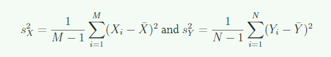</p>
<p>这里是除以M-1 和 N-1（出于理论原因，没解释）。</p>
<p>因此，我们可以把上式改为：</p>
<p>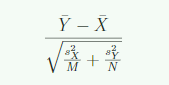</p>
<p>中心极限定理告诉我们，当M,N较大时，这个随机变量服从标准正态分布（零假设下）。因此，我们现在可以计算P值了。</p>
<h3 id="t-分布">t 分布</h3>
<p>中心极限定理需要较大的抽样个体数，这个我们称之为<em>asymptotic results</em>。当这个条件不满足时，还有一种方法可以使用。如果总体数据服从一个均值为0的正态分布，那么对于我们的抽样个体均值，可以计算以下分布，称为t分布：</p>
<p>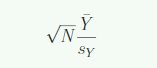</p>
<p>这里很重要的一点，我们提到的服从正态分布是总体（y1,y2,……yn）服从正态分布，而不是Y拔。虽然无法实际证明，但是我们看一看抽样个体的分布。</p>
<figure class="highlight r"><table><tr><td class="gutter"><pre><span class="line">1</span><br><span class="line">2</span><br><span class="line">3</span><br><span class="line">4</span><br><span class="line">5</span><br><span class="line">6</span><br><span class="line">7</span><br><span class="line">8</span><br></pre></td><td class="code"><pre><span class="line">control &lt;- controlPopulation$Bodyweight</span><br><span class="line">hf &lt;- hfPopulation$Bodyweight</span><br><span class="line"><span class="comment"># 直方图</span></span><br><span class="line">op &lt;- par(mfrow = <span class="built_in">c</span>(<span class="number">2</span>,<span class="number">1</span>))</span><br><span class="line">hist(control)</span><br><span class="line">hist(hf)</span><br><span class="line">par(op)</span><br><span class="line"></span><br></pre></td></tr></table></figure>
<p>更为直观的是，画一个QQ（quantie，分位数）图。分位数的实例之一就是四分位数。QQ图的个人理解为，对于x轴上的一点，能得到x分布中小于等于这个点的概率（比如5%）; 再找到y分布中对应5%概率的实际数值，即y值，这样就得到了一个点（x,y)。</p>
<ul>
<li>如果是离散变量，</li>
</ul>
<blockquote>
<p>在统计学中，QQ图[1] （Q代表分位数Quantile）是一种通过比较两个概率分布的分位数对这两个概率分布进行比较的概率图方法。首先选定分位数的对应概率区间集合，在此概率区间上，点(x,y)对应于第一个分布的一个分位数x和第二个分布在和x相同概率区间上相同的分位数。因此画出的是一条含参数的曲线，参数为概率区间的分割数。</p>
</blockquote>
<figure class="highlight r"><table><tr><td class="gutter"><pre><span class="line">1</span><br><span class="line">2</span><br><span class="line">3</span><br><span class="line">4</span><br><span class="line">5</span><br><span class="line">6</span><br><span class="line">7</span><br></pre></td><td class="code"><pre><span class="line">op &lt;- par(mfrow = <span class="built_in">c</span>(<span class="number">2</span>,<span class="number">1</span>))</span><br><span class="line">qqnorm(hf)</span><br><span class="line">qqline(hf)</span><br><span class="line">qqnorm(control)</span><br><span class="line">qqline(control)</span><br><span class="line">par(op)</span><br><span class="line"></span><br></pre></td></tr></table></figure>
<p>在R中，var() 和 sd() 函数都是用于计算样本参数（即除以n-1）。不适用于计算群体参数。</p>
<figure class="highlight r"><table><tr><td class="gutter"><pre><span class="line">1</span><br><span class="line">2</span><br><span class="line">3</span><br><span class="line">4</span><br><span class="line">5</span><br><span class="line">6</span><br><span class="line">7</span><br></pre></td><td class="code"><pre><span class="line">x &lt;- control</span><br><span class="line">N &lt;- <span class="built_in">length</span>(x)</span><br><span class="line">populationvar &lt;- mean((x-mean(x))^<span class="number">2</span>)</span><br><span class="line">identical(var(x),populationvar)</span><br><span class="line"><span class="comment">#identical 判断两个值是否相等。</span></span><br><span class="line"><span class="comment">#R中的var() 和 sd() 都是除以n-1。</span></span><br><span class="line"></span><br></pre></td></tr></table></figure>
<p>但是实际中，我们没有用到计算总体参数的地方（得不到）。这里为了教学，用了popvar(), popsd() 函数 计算总体参数。</p>
<figure class="highlight r"><table><tr><td class="gutter"><pre><span class="line">1</span><br><span class="line">2</span><br><span class="line">3</span><br><span class="line">4</span><br></pre></td><td class="code"><pre><span class="line">library(<span class="string">&#x27;rafalib&#x27;</span>)</span><br><span class="line">sd_hf &lt;- popsd(hf)</span><br><span class="line">sd_control &lt;- popsd(control)</span><br><span class="line"></span><br></pre></td></tr></table></figure>
<p>一般我们也只能得到样本，如下：</p>
<figure class="highlight r"><table><tr><td class="gutter"><pre><span class="line">1</span><br><span class="line">2</span><br><span class="line">3</span><br><span class="line">4</span><br></pre></td><td class="code"><pre><span class="line">N &lt;- 12</span><br><span class="line">hf_sample &lt;- sample(hf,<span class="number">12</span>)</span><br><span class="line">control_sample &lt;- sample(control,<span class="number">12</span>)</span><br><span class="line"></span><br></pre></td></tr></table></figure>
<p>为了 进一步了解中心极限定理，这里采用不同的抽样大小进行抽样</p>
<figure class="highlight r"><table><tr><td class="gutter"><pre><span class="line">1</span><br><span class="line">2</span><br><span class="line">3</span><br><span class="line">4</span><br><span class="line">5</span><br><span class="line">6</span><br><span class="line">7</span><br><span class="line">8</span><br><span class="line">9</span><br><span class="line">10</span><br><span class="line">11</span><br><span class="line">12</span><br><span class="line">13</span><br><span class="line">14</span><br><span class="line">15</span><br><span class="line">16</span><br><span class="line">17</span><br><span class="line">18</span><br><span class="line">19</span><br><span class="line">20</span><br><span class="line">21</span><br><span class="line">22</span><br></pre></td><td class="code"><pre><span class="line"><span class="comment">#对不同地抽样个体数，抽样10000次</span></span><br><span class="line"><span class="comment">#sapple 对Ns中的每一个数，执行后面的函数</span></span><br><span class="line">Ns&lt;-<span class="built_in">c</span>(<span class="number">3</span>,<span class="number">12</span>,<span class="number">25</span>,<span class="number">50</span>)</span><br><span class="line">B &lt;-  10000   <span class="comment">#number of simulations</span></span><br><span class="line">res&lt;-sapply(Ns,<span class="keyword">function</span>(n) &#123;</span><br><span class="line">  replicate(B,mean(sample(hf,n))-mean(sample(control,n)))</span><br><span class="line">&#125;)</span><br><span class="line">res</span><br><span class="line"></span><br><span class="line"><span class="comment">## 现在我们可以用qq图看中心极限定理的效果如何</span></span><br><span class="line">op &lt;- par(mfrow=<span class="built_in">c</span>(<span class="number">2</span>,<span class="number">2</span>))</span><br><span class="line"><span class="keyword">for</span>(i <span class="keyword">in</span> seq(along=Ns)) &#123;    <span class="comment"># 等于 seq(length(Ns))</span></span><br><span class="line">  titleavg&lt;-<span class="built_in">signif</span>(mean(res[,i]),<span class="number">3</span>) <span class="comment">#signif和round差不多，不过后面不是小数位数，而是有效数字。</span></span><br><span class="line">  titlesd&lt;-<span class="built_in">signif</span>(popsd(res[,i]),<span class="number">3</span>)</span><br><span class="line">  title&lt;-paste0(<span class="string">&quot;N=&quot;</span>,Ns[i],<span class="string">&quot;Avg=&quot;</span>,titleavg,<span class="string">&quot;SD=&quot;</span>,titlesd)</span><br><span class="line">  qqnorm(res[,i],main=title)</span><br><span class="line">  qqline(res[,i],col=<span class="number">2</span>)</span><br><span class="line">&#125;</span><br><span class="line"><span class="comment">#随着抽样数目的增加，标准误越小。基本符合根号N的规律。</span></span><br><span class="line"><span class="comment">#即便抽样数目为3，也基本符合正态分布。</span></span><br><span class="line"><span class="comment">#这和总体分布有关。因为我们这个小鼠体重分布本身就接近正态分布。哪怕采样个体为1，也会符合正态分布。</span></span><br><span class="line"></span><br></pre></td></tr></table></figure>
<p>但是在实践中，我们不会只求均值，而是会除以标准差。此时采样个数就重要了</p>
<figure class="highlight r"><table><tr><td class="gutter"><pre><span class="line">1</span><br><span class="line">2</span><br><span class="line">3</span><br><span class="line">4</span><br><span class="line">5</span><br><span class="line">6</span><br><span class="line">7</span><br><span class="line">8</span><br><span class="line">9</span><br><span class="line">10</span><br><span class="line">11</span><br><span class="line">12</span><br><span class="line">13</span><br><span class="line">14</span><br><span class="line">15</span><br><span class="line">16</span><br><span class="line">17</span><br><span class="line">18</span><br><span class="line">19</span><br></pre></td><td class="code"><pre><span class="line">Ns&lt;-<span class="built_in">c</span>(<span class="number">3</span>,<span class="number">12</span>,<span class="number">25</span>,<span class="number">50</span>)</span><br><span class="line">B&lt;-<span class="number">10000</span><span class="comment">#number of simulations#</span></span><br><span class="line"><span class="comment">#function to compute a t-stat</span></span><br><span class="line">computetstat&lt;-<span class="keyword">function</span>(n) &#123;</span><br><span class="line">  y&lt;-sample(hfPopulation,n)</span><br><span class="line">  x&lt;-sample(controlPopulation,n)</span><br><span class="line">  (mean(y)-mean(x))/<span class="built_in">sqrt</span>(var(y)/n+var(x)/n)</span><br><span class="line">  &#125;</span><br><span class="line">res&lt;-sapply(Ns,<span class="keyword">function</span>(n) &#123;</span><br><span class="line">  replicate(B,computetstat(n))</span><br><span class="line">  &#125;)</span><br><span class="line">op &lt;- par(mfrow=<span class="built_in">c</span>(<span class="number">2</span>,<span class="number">2</span>))</span><br><span class="line"><span class="keyword">for</span>(i <span class="keyword">in</span> seq(along=Ns)) &#123;</span><br><span class="line">  qqnorm(res[,i],main=Ns[i])</span><br><span class="line">  qqline(res[,i],col=<span class="number">2</span>)</span><br><span class="line">  &#125;</span><br><span class="line"><span class="comment">#此时N=3已经有些偏离，而N=12只有轻微偏离</span></span><br><span class="line"><span class="comment">#因此N=12已经够了</span></span><br><span class="line"></span><br></pre></td></tr></table></figure>
<p>但是这种模拟在实际中无法做到。这里只用于说明CLT的概念和局限。</p>
<h3 id="t-tests-in-Partice">t-tests in Partice</h3>
<p>逻辑线：</p>
<ol>
<li>首先我们得到了两个样本群体的均值差，这本身也是一个随机变量。而且根据零假设，这个变量分布的均值为0。</li>
<li>那么这个均值差分布的标准误（差）呢？</li>
<li>首先我们根据中心极限定理，每个群体均值服从正态分布，标准误为总体标准差（这里直接用样本标准差估计总体标准差）除以根号N。</li>
<li>但这仅仅是每个样本均值的标准误（或者说标准差，其实我觉得这里说标准误和标准差是一回事，标准误就是均值的标准差，所以不还是标准差吗？这里说的均值差的标准误其实也就是均值差的标准差。）</li>
<li>我们根据统计理论，我们知道两个随机变量差值的方差等于这两个随机变量的方差之和（var(x-y)=var(x)+var(y))</li>
<li>因此se = sd( x-y ) = sqrt(var(x)+var(y)) =  sqrt( sd(x)/sqrt(n) + (sd(y)/sqrt(m) )</li>
<li>tstat &lt;- diff(-0)/se</li>
<li>这就是t统计量，由于除以了se，这个统计量的SE为1。</li>
<li>因此我们只要知道这个t统计量的分布，我们就能得到P值。</li>
<li>根据中心极限定理，当<strong>抽样个体数较大</strong>时，两个抽样均值均符合正态分布。根据统计理论，那么这两个随机变量之差也服从正态分布。因此此时这个tstat也是服从<strong>均值为0，方差为1的正态分布</strong></li>
<li>那么计算为了计算P值，我们需要问：在正态分布中，出现diff或比diff（tstat）更极端的值的概率是多大？（ how often does a normally distributed randomvariable exceeddiff?）我们可以通过pnorm()函数进行计算双尾概率。</li>
<li>在本例中，p-value 小于 0.05， 我们认为差异是显著的。（深入理解P值，P值是零假设成立下该事件发生的概率）</li>
<li>但是我们又面临另一个问题。中心极限定理只有在样本量较大时适用，但是12足够大了吗？一般我们认为样本数大于30才比较好。所以我们刚刚计算的P值只有在这个成立时才有效，所以这里可能不适用。然而，除了使用中心极限定理，我们这里有另一种方法。</li>
</ol>
<p>R代码如下</p>
<figure class="highlight r"><table><tr><td class="gutter"><pre><span class="line">1</span><br><span class="line">2</span><br><span class="line">3</span><br><span class="line">4</span><br><span class="line">5</span><br><span class="line">6</span><br><span class="line">7</span><br><span class="line">8</span><br><span class="line">9</span><br><span class="line">10</span><br><span class="line">11</span><br><span class="line">12</span><br><span class="line">13</span><br><span class="line">14</span><br><span class="line">15</span><br><span class="line">16</span><br><span class="line">17</span><br><span class="line">18</span><br><span class="line">19</span><br><span class="line">20</span><br><span class="line">21</span><br><span class="line">22</span><br><span class="line">23</span><br></pre></td><td class="code"><pre><span class="line">dat&lt;-read.csv(<span class="string">&quot;femaleMiceWeights.csv&quot;</span>)<span class="comment">#previously downloaded</span></span><br><span class="line">control&lt;-filter(dat,Diet==<span class="string">&quot;chow&quot;</span>)%&gt;%select(Bodyweight)%&gt;%unlist</span><br><span class="line">treatment&lt;-filter(dat,Diet==<span class="string">&quot;hf&quot;</span>)%&gt;%select(Bodyweight)%&gt;%unlist</span><br><span class="line">diff&lt;-mean(treatment)-mean(control)</span><br><span class="line">print(diff)</span><br><span class="line"><span class="comment">## [1] 3.020833</span></span><br><span class="line"></span><br><span class="line">se&lt;-<span class="built_in">sqrt</span>(</span><br><span class="line">  var(treatment)/<span class="built_in">length</span>(treatment) + </span><br><span class="line">    var(control)/<span class="built_in">length</span>(control)</span><br><span class="line">  )</span><br><span class="line"></span><br><span class="line">tstat&lt;-diff/se</span><br><span class="line"><span class="comment">## [1] 2.055174</span></span><br><span class="line"></span><br><span class="line"><span class="comment">##tstat在标准正态分布中出现的概率(双尾)</span></span><br><span class="line"><span class="comment">##也就是在标准正态分布中出现tstat及比tstat更极端的值的概率</span></span><br><span class="line">righttail&lt;-<span class="number">1</span>-pnorm(<span class="built_in">abs</span>(tstat))</span><br><span class="line">lefttail&lt;-pnorm(-<span class="built_in">abs</span>(tstat))</span><br><span class="line">pval&lt;-lefttail+righttail</span><br><span class="line">print(pval)</span><br><span class="line"></span><br><span class="line"><span class="comment">## [1] 0.0398622</span></span><br></pre></td></tr></table></figure>
<h3 id="The-t-distribution-in-Practice">The t-distribution in Practice</h3>
<p>根据上面的模拟情况和统计理论。 如果<strong>总体的分布是正态的</strong>，那么我们可以<strong>不通过中心极限定理</strong>，而弄清楚t统计量的确切分布。但是如果抽样个体数很少，很难证明总体分布是否符合正态。但是对于体重这种数据，根据经验，我们一般认为总体分布极可能大致符合正态分布，因此我们可以利用这种近似。另外，我们也可以看一下样本的qq图，如下所示。</p>
<figure class="highlight r"><table><tr><td class="gutter"><pre><span class="line">1</span><br><span class="line">2</span><br><span class="line">3</span><br><span class="line">4</span><br><span class="line">5</span><br><span class="line">6</span><br></pre></td><td class="code"><pre><span class="line">op &lt;- par(mfrow=<span class="built_in">c</span>(<span class="number">2</span>,<span class="number">2</span>))</span><br><span class="line">qqnorm(treatment)</span><br><span class="line">qqline(treatment,col=<span class="number">2</span>)</span><br><span class="line">qqnorm(control)</span><br><span class="line">qqline(control,col=<span class="number">2</span>)</span><br><span class="line"></span><br></pre></td></tr></table></figure>
<p>如果我们近似认为<strong>总体分布符合正态分布</strong>，那么基于统计理论，tstat服从t分布。相较于正态分布，t分布还有一个自由度的参数。我们直接通过下面的函数求解P值。</p>
<figure class="highlight r"><table><tr><td class="gutter"><pre><span class="line">1</span><br><span class="line">2</span><br><span class="line">3</span><br><span class="line">4</span><br><span class="line">5</span><br></pre></td><td class="code"><pre><span class="line">t.test(treatment,control)</span><br><span class="line"></span><br><span class="line">t.test(treatment,control)$p.value <span class="comment">### 直接看P值</span></span><br><span class="line"><span class="comment">## [1] 0.05299888</span></span><br><span class="line"></span><br></pre></td></tr></table></figure>
<blockquote>
<p>The p-value is slightly bigger now. This is to be expected because our CLT approximation consideredthe denominator oftstatpractically fixed (with large samples it practically is), while the t-distribution approximation takes into account that the denominator (the standard error of thedifference) is a random variable. The smaller the sample size, the more the denominator varies.</p>
</blockquote>
<p>这段话没看太懂，大概理解是：这里用t分布计算出来的p值相较于上面用正态分布计算出来的P值较大。这是因为在CLT中，认为tstat的分母部分是固定的（也就是认为采用了大样本）；而t分布检验中认为tstat的分母部分是随机变量（还不是很懂）。</p>
<p>这可能会让人困惑，怎么会得到两个P值？但是，这在数据分析中是很常见的。通过不同的假设，不同的方法，我们就会得到不同的结果。</p>
<p>其实，基于中心极限定理得到的结果更容易出现<strong>假阳性</strong>，而基于t分布的结果更容易出现<strong>假阴性</strong>。</p>
<h3 id="Confidence-Intervals">Confidence Intervals</h3>
<p>在生命科学中，我们总是需要计算P值。但是我们并不推崇把P值当成唯一的统计指标。原因很简单：统计意义上的显著并不保证科学意义上的显著。当抽样个体数很大时，即便两个群体差异很小，你仍可以检测到一个统计意义上的显著差异。但是这有意义吗？如果只看P值，信息是不够的。还需要给出效应大小（这里是两个群体均值差）。<br>
另一种方法是给出置信区间。</p>
<figure class="highlight r"><table><tr><td class="gutter"><pre><span class="line">1</span><br><span class="line">2</span><br><span class="line">3</span><br><span class="line">4</span><br><span class="line">5</span><br><span class="line">6</span><br><span class="line">7</span><br><span class="line">8</span><br><span class="line">9</span><br><span class="line">10</span><br><span class="line">11</span><br><span class="line">12</span><br><span class="line">13</span><br><span class="line">14</span><br><span class="line">15</span><br><span class="line">16</span><br><span class="line">17</span><br><span class="line">18</span><br><span class="line">19</span><br><span class="line">20</span><br><span class="line">21</span><br><span class="line">22</span><br><span class="line">23</span><br><span class="line">24</span><br><span class="line">25</span><br><span class="line">26</span><br><span class="line">27</span><br><span class="line">28</span><br><span class="line">29</span><br><span class="line">30</span><br></pre></td><td class="code"><pre><span class="line"><span class="comment">#以control群体均值的置信区间为例</span></span><br><span class="line"></span><br><span class="line"><span class="comment">#先看总体的均值</span></span><br><span class="line">dat&lt;-read.csv(<span class="string">&quot;mice_pheno.csv&quot;</span>)</span><br><span class="line">chowPopulation&lt;-dat[dat$Sex==<span class="string">&quot;F&quot;</span>&amp;dat$Diet==<span class="string">&quot;chow&quot;</span>,<span class="number">3</span>]</span><br><span class="line"></span><br><span class="line">mu_chow&lt;-mean(chowPopulation)</span><br><span class="line">print(mu_chow)</span><br><span class="line"><span class="comment">## [1] 23.89338</span></span><br><span class="line"></span><br><span class="line"><span class="comment">##我们是要估计这个参数，但是我们实际拿不到总体的数据</span></span><br><span class="line"><span class="comment">## 先抽取样本量为30的样本</span></span><br><span class="line"></span><br><span class="line">N&lt;-<span class="number">30</span></span><br><span class="line">chow&lt;-sample(chowPopulation,N)</span><br><span class="line">print(mean(chow))</span><br><span class="line"><span class="comment">## [1] 24.54567</span></span><br><span class="line"></span><br><span class="line"></span><br><span class="line"><span class="comment">#我们知道样本均值是一个随机变量</span></span><br><span class="line"><span class="comment">#所以，这个值不是一个完美的估计</span></span><br><span class="line"><span class="comment">#通过置信区间来体现这个随机变量的variability</span></span><br><span class="line"></span><br><span class="line"><span class="comment">#因为样本量为30，我们可以使用CLT。</span></span><br><span class="line"><span class="comment">#中心极限定理告诉我们，样本均值服从一个均值为总体均值，标准差为总体标准差除以根号30的正态分布。</span></span><br><span class="line"></span><br><span class="line">se&lt;-sd(chow)/<span class="built_in">sqrt</span>(N)</span><br><span class="line">print(se)</span><br><span class="line"><span class="comment">## [1] 0.6610814</span></span><br><span class="line"></span><br></pre></td></tr></table></figure>
<blockquote>
<p>A 95% confidence interval (we can use percentages other than 95%) is a random interval with a95% probability of falling on the parameter we are estimating. Keep in mind that saying 95% ofrandom intervals will fall on the true value (our definition above) isnot the sameas saying there isa 95% chance that the true value falls in our interval.(有点绕，没太懂。懂了，这个置信区间其实也是一个随机变量，你再抽一个样，这个置信区间也会变。所以你只能说置信区间（随机变量）从统计上说有95%的概率包含真值（你要是取10000个样本，计算出10000个置信区间，其中包含总体均值的概率在95%左右）。但是，如果是一个给定的区间(你最后计算出来的区间)，那么真值存在这个区间的概率只有0和1)</p>
</blockquote>
<p>由中心极限定理，我们可以对样本均值进行标准化。然后我们知道标准正态分布的95%区间大致在[-2,2]。因此可以得出下式</p>
<p>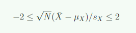</p>
<p>我们直接得出置信区间</p>
<figure class="highlight r"><table><tr><td class="gutter"><pre><span class="line">1</span><br><span class="line">2</span><br><span class="line">3</span><br><span class="line">4</span><br></pre></td><td class="code"><pre><span class="line">Q&lt;-qnorm(<span class="number">1</span>-<span class="number">0.05</span>/<span class="number">2</span>)</span><br><span class="line">interval&lt;-<span class="built_in">c</span>(mean(chow)-Q*se, mean(chow)+Q*se )</span><br><span class="line">interval</span><br><span class="line"></span><br></pre></td></tr></table></figure>
<p>模拟n次置信区间</p>
<figure class="highlight r"><table><tr><td class="gutter"><pre><span class="line">1</span><br><span class="line">2</span><br><span class="line">3</span><br><span class="line">4</span><br><span class="line">5</span><br><span class="line">6</span><br><span class="line">7</span><br><span class="line">8</span><br><span class="line">9</span><br><span class="line">10</span><br><span class="line">11</span><br><span class="line">12</span><br><span class="line">13</span><br><span class="line">14</span><br><span class="line">15</span><br><span class="line">16</span><br></pre></td><td class="code"><pre><span class="line">library(rafalib)</span><br><span class="line">B&lt;-<span class="number">250</span></span><br><span class="line">mypar()</span><br><span class="line">plot(mean(chowPopulation)+<span class="built_in">c</span>(-<span class="number">7</span>,<span class="number">7</span>),<span class="built_in">c</span>(<span class="number">1</span>,<span class="number">1</span>),type=<span class="string">&quot;n&quot;</span>,</span><br><span class="line">	xlab=<span class="string">&quot;weight&quot;</span>,ylab=<span class="string">&quot;interval&quot;</span>,ylim=<span class="built_in">c</span>(<span class="number">1</span>,B))</span><br><span class="line">	abline(v=mean(chowPopulation))</span><br><span class="line">	<span class="keyword">for</span>(i <span class="keyword">in</span> <span class="number">1</span>:B) &#123;</span><br><span class="line">	chow&lt;-sample(chowPopulation,N)</span><br><span class="line">	se&lt;-sd(chow)/<span class="built_in">sqrt</span>(N)</span><br><span class="line">	interval&lt;-<span class="built_in">c</span>(mean(chow)-Q*se, mean(chow)+Q*se)</span><br><span class="line">	covered&lt;-</span><br><span class="line">		mean(chowPopulation) &lt;=interval[<span class="number">2</span>]&amp;mean(chowPopulation)&gt;=interval[<span class="number">1</span>]</span><br><span class="line">	color&lt;-ifelse(covered,<span class="number">1</span>,<span class="number">2</span>)</span><br><span class="line">	lines(interval, <span class="built_in">c</span>(i,i),col=color)</span><br><span class="line">&#125;</span><br><span class="line"></span><br></pre></td></tr></table></figure>
<p>这个代码画出了250次置信区间的图（代码内容没看）。其中大概有5%的置信区间没有包含总体均值。</p>
<p>但是上面是因为抽样个体较多（N = 30），满足了中心极限定理。如果 N = 5，那么这样做也有效吗？我们就模拟这种N =5，使用CLT的情况。</p>
<figure class="highlight r"><table><tr><td class="gutter"><pre><span class="line">1</span><br><span class="line">2</span><br><span class="line">3</span><br><span class="line">4</span><br><span class="line">5</span><br><span class="line">6</span><br><span class="line">7</span><br><span class="line">8</span><br><span class="line">9</span><br><span class="line">10</span><br><span class="line">11</span><br><span class="line">12</span><br><span class="line">13</span><br><span class="line">14</span><br></pre></td><td class="code"><pre><span class="line">N &lt;- 5</span><br><span class="line">mypar()</span><br><span class="line">plot(mean(chowPopulation)+<span class="built_in">c</span>(-<span class="number">7</span>,<span class="number">7</span>),<span class="built_in">c</span>(<span class="number">1</span>,<span class="number">1</span>),type=<span class="string">&quot;n&quot;</span>,</span><br><span class="line">     xlab=<span class="string">&quot;weight&quot;</span>,ylab=<span class="string">&quot;interval&quot;</span>,ylim=<span class="built_in">c</span>(<span class="number">1</span>,B))</span><br><span class="line">abline(v=mean(chowPopulation))</span><br><span class="line"><span class="keyword">for</span>(i <span class="keyword">in</span> <span class="number">1</span>:B)&#123;</span><br><span class="line">  chow&lt;-sample(chowPopulation,N)</span><br><span class="line">  se&lt;-sd(chow)/<span class="built_in">sqrt</span>(N)</span><br><span class="line">  interval&lt;-<span class="built_in">c</span>(mean(chow)-Q*se, mean(chow)+Q*se)</span><br><span class="line">  covered&lt;- mean(chowPopulation) &lt;=interval[<span class="number">2</span>]&amp;mean(chowPopulation)&gt;=interval[<span class="number">1</span>]</span><br><span class="line">  color &lt;- ifelse(covered,<span class="number">1</span>,<span class="number">2</span>)</span><br><span class="line">  lines(interval, <span class="built_in">c</span>(i,i),col=color)</span><br><span class="line">&#125;</span><br><span class="line"></span><br></pre></td></tr></table></figure>
<p>我们发现置信区间的宽度增加了，但是没有覆盖真值的情况却多了很多。这是因为这里我们通过CLT错误地认为样本均值符合正态分布，但是实际上相较于正态它两侧的尾巴更大（It has a fatter tail）。这影响到了我们Q值的计算（这里是-2到2）。这种情况下，采用t分布更合适。所以我们只需用qt() 函数来计算Q就可以了，其它不变。</p>
<figure class="highlight r"><table><tr><td class="gutter"><pre><span class="line">1</span><br><span class="line">2</span><br><span class="line">3</span><br><span class="line">4</span><br><span class="line">5</span><br><span class="line">6</span><br><span class="line">7</span><br><span class="line">8</span><br><span class="line">9</span><br><span class="line">10</span><br><span class="line">11</span><br><span class="line">12</span><br><span class="line">13</span><br><span class="line">14</span><br><span class="line">15</span><br></pre></td><td class="code"><pre><span class="line">N &lt;- 5</span><br><span class="line">Q&lt;-qt(<span class="number">1</span>-<span class="number">0.05</span>/<span class="number">2</span>, df=<span class="number">4</span>)</span><br><span class="line">mypar()</span><br><span class="line">plot(mean(chowPopulation)+<span class="built_in">c</span>(-<span class="number">7</span>,<span class="number">7</span>),<span class="built_in">c</span>(<span class="number">1</span>,<span class="number">1</span>),type=<span class="string">&quot;n&quot;</span>,</span><br><span class="line">     xlab=<span class="string">&quot;weight&quot;</span>,ylab=<span class="string">&quot;interval&quot;</span>,ylim=<span class="built_in">c</span>(<span class="number">1</span>,B))</span><br><span class="line">abline(v=mean(chowPopulation))</span><br><span class="line"><span class="keyword">for</span>(i <span class="keyword">in</span> <span class="number">1</span>:B)&#123;</span><br><span class="line">  chow&lt;-sample(chowPopulation,N)</span><br><span class="line">  se&lt;-sd(chow)/<span class="built_in">sqrt</span>(N)</span><br><span class="line">  interval&lt;-<span class="built_in">c</span>(mean(chow)-Q*se, mean(chow)+Q*se)</span><br><span class="line">  covered&lt;- mean(chowPopulation) &lt;=interval[<span class="number">2</span>]&amp;mean(chowPopulation)&gt;=interval[<span class="number">1</span>]</span><br><span class="line">  color &lt;- ifelse(covered,<span class="number">1</span>,<span class="number">2</span>)</span><br><span class="line">  lines(interval, <span class="built_in">c</span>(i,i),col=color)</span><br><span class="line">&#125;</span><br><span class="line"></span><br></pre></td></tr></table></figure>
<p>我们看到置信区间的宽度<strong>进一步</strong>（相较于CLT）增加了（因为t分布尾巴厚，得到的Q值更大），但是基本符合了95%的概率。</p>
<h3 id="置信区间和P值的关系">置信区间和P值的关系</h3>
<p>我们推荐在实际中更多的使用置信区间，而不是P值。</p>
<p>如果你给出P值，我们会问差距是不是真的像你计算或观测出来的值那么大。<strong>因为即便两个群体总体均值为0，得到的样本均值差也有可能出现你计算或观测的结果</strong>。因此，我们可以给出均值差的置信区间，来回答这个问题。</p>
<p>如果均值差的95%的置信区间中不包含0，那么我们可以说差异不显著（0.05水平下），也就是p值肯定小于0.05。（99%的置信区间类似）</p>
<p>t.test的结果中包含了95%的置信区间。</p>
<h3 id="Power-Calculations">Power Calculations</h3>
<p>由于我们有总体信息，我们从总体信息中可以直接得知，这两个群体确实是有差距的，而且按比例大约是10%。<br>
但是我们如果从中取样，然后进行t-test，有的时候P值不总是小于0.05。</p>
<p>所以我们犯错了吗？通过不拒绝原假设，我们要说diet没有影响吗？这个问题的答案是no。All we can say is that we did not reject the null hypothesis. But this does not necessarily imply that the null is true（我们只是说不拒绝原假设，但我们没有说原假设是真的）.</p>
<p>这个问题的本质是这样，在这次的实例中，我们没有得到足够的power（不知道啥意思）。在科学研究中，你很可能需要做某种程度的power calculation。在很多情况下，这是一种道德义务，来避免不必要地牺牲更多小鼠，或者使人们因为你的研究遭遇潜在的风险。</p>
<h4 id="types-of-error">types of error</h4>
<blockquote>
<p>Ⅰ型错误：原假设为真，我们拒绝的概率，等于P值<br>
Ⅱ型错误：原假设为假，没有拒绝原假设的概率</p>
</blockquote>
<p>当我们在进行统计检验时，我们始终需要注意我们很可能会犯错误。这就是为什么我们的p值不是0。在原假设成立的前提下，总是存在一个可能很少，但是可能发生的概率，使得我们拒绝了正确的原假设。如果P值设为0.05，那么这种情况发生的概率也就是0.05。这种错误叫做Ⅰ型错误（typeⅠerror）</p>
<p>Ⅰ型错误会发生<strong>假阳性</strong>。那么我们为什么只设为0.05？不设定一个非常小的值呢？因为还存在另外一种错误，Ⅱ型错误，即原假设为假，没有拒绝原假设的概率，这会造成<strong>假阴性</strong>。像上面我们提到的那种情况，就是犯了二型错误。如果我们把P值提高到0.25，那么上面的例子就能够显著。但是一般情况下我们愿不愿意提高P值到0.25呢？通常我们不会这么做。</p>
<h4 id="0-05或0-01-的-p值-是随意划分的（The-0-05-and-0-01-Cut-offs-Are-Arbitrary）">0.05或0.01 的 p值 是随意划分的（The 0.05 and 0.01 Cut-offs Are Arbitrary）</h4>
<p>很多杂志和监管部门强调要达到0.05或0.01水平的显著。但是这两个数字的设定其实没有特别的，这仅仅是因为最开始的文章用这两个数字作为例子而已。本书的部分目的之一就是让读者对于P值和置信区间有一个更加清晰的认识（受教了）。</p>
<h4 id="Power-Calculation">Power Calculation</h4>
<p>Power is the probability of rejecting the null when the null is false（Power 是指当原假设为假时拒绝原假设的概率）。</p>
<p>下面我们通过R中的实际代码去理解这个概念。</p>
<p>我们仍然假设样本大小为12，显著水平时0.05。由于我们已经两个群体均值有差异，我们可以重复抽样，看每次抽样t检验是否小于0.05</p>
<figure class="highlight plain"><table><tr><td class="gutter"><pre><span class="line">1</span><br><span class="line">2</span><br><span class="line">3</span><br><span class="line">4</span><br><span class="line">5</span><br><span class="line">6</span><br><span class="line">7</span><br><span class="line">8</span><br><span class="line">9</span><br><span class="line">10</span><br><span class="line">11</span><br><span class="line">12</span><br><span class="line">13</span><br><span class="line">14</span><br><span class="line">15</span><br><span class="line">16</span><br><span class="line">17</span><br><span class="line">18</span><br><span class="line">19</span><br><span class="line">20</span><br><span class="line">21</span><br></pre></td><td class="code"><pre><span class="line">N&lt;-12</span><br><span class="line">alpha&lt;-0.05</span><br><span class="line">B&lt;-2000</span><br><span class="line"></span><br><span class="line">reject&lt;-function(N, alpha&#x3D;0.05)&#123;</span><br><span class="line">	hf&lt;-sample(hfPopulation,N)</span><br><span class="line">	control&lt;-sample(controlPopulation,N)</span><br><span class="line">	pval&lt;-t.test(hf,control)$p.value</span><br><span class="line">	pval&lt;alpha</span><br><span class="line">&#125;</span><br><span class="line">#reject 给出一次抽样是否小于0.05</span><br><span class="line"></span><br><span class="line">reject(12)</span><br><span class="line">## [1] FALSE</span><br><span class="line"></span><br><span class="line">rejections &lt;- replicate(B,reject(N))</span><br><span class="line">#重复2000次，replicate(n,expr) </span><br><span class="line"></span><br><span class="line">mean(rejetions) # 这就是N&#x3D;12时Power的值</span><br><span class="line">## [1] 0.2215</span><br><span class="line"></span><br></pre></td></tr></table></figure>
<p>这就是为什么当我们知道原假设是错的时，t-test却没有拒绝原假设。当样本大小只有12时，power只有23%。为了降低<strong>假阳性</strong>发生的概率，我们将P值设在0.05水平。其实这个水平有点过高，导致发生<strong>Ⅱ型错误</strong>的概率大大提高。</p>
<blockquote>
<p>power 和 发生Ⅱ型的概率 相加为1。power低，说明发生Ⅱ型错误的概率高。</p>
</blockquote>
<p>接下来，让我们来看看power和抽样大小N的关系。这里我们用到了<strong>sapply(Ns,expr)</strong>，这个函数会对向量中的每一个数执行同样的function。</p>
<figure class="highlight r"><table><tr><td class="gutter"><pre><span class="line">1</span><br><span class="line">2</span><br><span class="line">3</span><br><span class="line">4</span><br><span class="line">5</span><br><span class="line">6</span><br><span class="line">7</span><br><span class="line">8</span><br><span class="line">9</span><br><span class="line">10</span><br></pre></td><td class="code"><pre><span class="line">Ns&lt;-seq(<span class="number">5</span>,<span class="number">50</span>,<span class="number">5</span>)</span><br><span class="line"></span><br><span class="line"><span class="comment"># So we use apply() like this</span></span><br><span class="line">power&lt;-sapply(Ns,<span class="keyword">function</span>(N)&#123;</span><br><span class="line">	rejections&lt;-replicate(B, reject(N))</span><br><span class="line">	mean(rejections)</span><br><span class="line">	&#125;)</span><br><span class="line">	</span><br><span class="line">plot(Ns,power,type = <span class="string">&#x27;b&#x27;</span>)</span><br><span class="line"></span><br></pre></td></tr></table></figure>
<p>我们可以看出，随着N的增加，power不断提高。</p>
<p>我们固定N，看一看alpha的设定对power 的影响</p>
<figure class="highlight r"><table><tr><td class="gutter"><pre><span class="line">1</span><br><span class="line">2</span><br><span class="line">3</span><br><span class="line">4</span><br><span class="line">5</span><br><span class="line">6</span><br><span class="line">7</span><br><span class="line">8</span><br></pre></td><td class="code"><pre><span class="line">N&lt;-<span class="number">30</span></span><br><span class="line">alphas&lt;-<span class="built_in">c</span>(<span class="number">0.1</span>,<span class="number">0.05</span>,<span class="number">0.01</span>,<span class="number">0.001</span>,<span class="number">0.0001</span>)</span><br><span class="line">power&lt;-sapply(alphas,<span class="keyword">function</span>(alpha)&#123;</span><br><span class="line">	rejections &lt;- replicate(B,reject(N,alpha=alpha))</span><br><span class="line">	mean(rejections)</span><br><span class="line">&#125;)</span><br><span class="line">plot(alphas, power, xlab=<span class="string">&quot;alpha&quot;</span>, type=<span class="string">&quot;b&quot;</span>, <span class="built_in">log</span>=<span class="string">&quot;x&quot;</span>)</span><br><span class="line"></span><br></pre></td></tr></table></figure>
<p>我们可以看出随着alpha的增加，power也在不断增加。</p>
<blockquote>
<p>There is no “right” power or “right” alpha level, but it is important that you understand what eachmeans.</p>
</blockquote>
<h5 id="p-values-are-Arbitrary-under-the-Alternative-Hypothesis">p-values are Arbitrary under the Alternative Hypothesis</h5>
<blockquote>
<p>Another consequence of what we have learned about power is that p-values are somewhat arbitrarywhen the null hypothesis is not true and therefore thealternativehypothesis is true (the differencebetween the population means is not zero). When the alternative hypothesis is true, we can make a p-value as small as we want simply by increasing the sample size (supposing that we have an infinitepopulation to sample from). We can show this property of p-values by drawing larger and largersamples from our population and calculating p-values. This works because, in our case, we knowthat the alternative hypothesis is true, since we have access to the populations and can calculate thedifference in their means.</p>
</blockquote>
<p>随着样本大小的增加，P值会减小（假设群体无限大）。证明如下</p>
<figure class="highlight r"><table><tr><td class="gutter"><pre><span class="line">1</span><br><span class="line">2</span><br><span class="line">3</span><br><span class="line">4</span><br><span class="line">5</span><br><span class="line">6</span><br><span class="line">7</span><br><span class="line">8</span><br><span class="line">9</span><br><span class="line">10</span><br><span class="line">11</span><br><span class="line">12</span><br><span class="line">13</span><br><span class="line">14</span><br><span class="line">15</span><br></pre></td><td class="code"><pre><span class="line">calculatePvalue&lt;-<span class="keyword">function</span>(N) &#123;</span><br><span class="line">	hf&lt;-sample(hfPopulation,N)</span><br><span class="line">	control&lt;-sample(controlPopulation,N)</span><br><span class="line">	t.test(hf,control)$p.value</span><br><span class="line">&#125;</span><br><span class="line"></span><br><span class="line">Ns&lt;-seq(<span class="number">10</span>,<span class="number">200</span>,by=<span class="number">10</span>)</span><br><span class="line">Ns_rep&lt;-<span class="built_in">rep</span>(Ns, each=<span class="number">10</span>) <span class="comment">#each 的形式是 10 10 10…… 20 ……</span></span><br><span class="line"></span><br><span class="line">pvalues&lt;-sapply(Ns_rep, calculatePvalue)</span><br><span class="line"></span><br><span class="line">plot(Ns_rep, pvalues, <span class="built_in">log</span>=<span class="string">&quot;y&quot;</span>, xlab=<span class="string">&quot;sample size&quot;</span>,</span><br><span class="line">ylab=<span class="string">&quot;p-values&quot;</span>)</span><br><span class="line">abline(h=<span class="built_in">c</span>(<span class="number">.01</span>,<span class="number">.05</span>), col=<span class="string">&quot;red&quot;</span>, lwd=<span class="number">2</span>)</span><br><span class="line"></span><br></pre></td></tr></table></figure>
<p>样本量从10增加到200的过程中，p值最低下降到了10^-8^。但是p值太低也不见得是一件很好的事。一旦我们确信了一个reasonable alpha（比如0.05），那么如果我们获得了一个比这个阈值低得多的p值，那就说明<strong>我们用了过量的小鼠</strong>。适当地提高样本量，确实有助于估计的准确性。但是，实际上，随着样本量的增加p值的降低是一件自然的事。</p>
<blockquote>
<p>The p-values get smaller and smaller with increasing sample size because the numerator ofthe t-statistic haspN(for equal sized groups, and a similar effect occurs whenM̸=N). Therefore,if∆is non-zero, the t-statistic will increase with N.</p>
</blockquote>
<p>事实上，随着样本量的增加，t-test得到的p值也会不断降低。这是t统计量中有一个根号N。</p>
<p>算了个Cohen’s d，但没看懂这个统计量到底有啥用？</p>
<blockquote>
<p>This tells us how many standard deviations of the data the mean of the high-fat diet group is from the control group. Under the alternative hypothesis, unlike the t-statistic which is guaranteed to increase, the effect size and Cohen’s d will become more precise.（看不懂）</p>
</blockquote>
<h3 id="Monte-Carlo-Simulation">Monte Carlo Simulation</h3>
<p>电脑可以用来产生伪随机数（pseudo-random numbers），一个最大的好处是我们可以通过模拟数据来证明我们的假设或理论。</p>
<blockquote>
<p>伪随机性（英语：Pseudorandomness）是一个过程似乎是随机的，但实际上并不是。例如伪随机数是使用一个确定性的算法计算出来的似乎是随机的数序，因此伪随机数实际上并不随机。在计算伪随机数时假如使用的开始值不变的话，那么伪随机数的数序也不变。</p>
</blockquote>
<p>Simulations can also be used to check theoretical or analytical results. Also, many of the theoretical results we use in statistics are based on <strong>asymptotics</strong>: they hold when the sample size goes to <a target="_blank" rel="noopener" href="http://infinity.In">infinity.In</a> practice, we never have an infinite number of samples so we may want to know how well thetheory works with our actual sample size.</p>
<p>作为例子，我们蒙特卡洛模拟（ Monte Carlo simulation）来比较不同样本大小的情况下CLT和t分布的近似值。</p>
<figure class="highlight r"><table><tr><td class="gutter"><pre><span class="line">1</span><br><span class="line">2</span><br><span class="line">3</span><br><span class="line">4</span><br><span class="line">5</span><br><span class="line">6</span><br><span class="line">7</span><br><span class="line">8</span><br><span class="line">9</span><br><span class="line">10</span><br><span class="line">11</span><br><span class="line">12</span><br><span class="line">13</span><br><span class="line">14</span><br></pre></td><td class="code"><pre><span class="line">library(dplyr)</span><br><span class="line">dat&lt;-read.csv(<span class="string">&quot;mice_pheno.csv&quot;</span>)<span class="comment">#Previously downloaded</span></span><br><span class="line">controlPopulation&lt;-filter(dat,Sex==<span class="string">&quot;F&quot;</span>&amp;Diet==<span class="string">&quot;chow&quot;</span>)%&gt;%select(Bodyweight)%&gt;%unlist</span><br><span class="line"></span><br><span class="line">ttestgenerator&lt;-<span class="keyword">function</span>(n) &#123;</span><br><span class="line">  <span class="comment">#note that here we have a false &quot;high fat&quot; group where we actually</span></span><br><span class="line">  <span class="comment">#sample from the nonsmokers. this is because we are modeling the *null*</span></span><br><span class="line">  cases&lt;-sample(controlPopulation,n)</span><br><span class="line">  controls&lt;-sample(controlPopulation,n)</span><br><span class="line">  tstat&lt;-(mean(cases)-mean(controls))/<span class="built_in">sqrt</span>( var(cases)/n+var(controls)/n ) <span class="comment">#这个t统计量是假设两个群体方差不等</span></span><br><span class="line">  <span class="built_in">return</span>(tstat)</span><br><span class="line">  &#125;</span><br><span class="line">ttests&lt;-replicate(<span class="number">1000</span>, ttestgenerator(<span class="number">10</span>))</span><br><span class="line">hist(ttests)</span><br></pre></td></tr></table></figure>
<p>从直方图中，我们近似看出符合正态分布。但是从上文提到，我们再看一下QQ图</p>
<figure class="highlight r"><table><tr><td class="gutter"><pre><span class="line">1</span><br><span class="line">2</span><br><span class="line">3</span><br></pre></td><td class="code"><pre><span class="line">qqnorm(ttests)</span><br><span class="line">qqline(ttests)</span><br><span class="line"></span><br></pre></td></tr></table></figure>
<p>从QQ图中，可以看出近似符合正态分布。这说明在样本数是10的情况下，已经符合正态分布，可以使用中心极限定理了。那么如果样本数为3呢？</p>
<figure class="highlight r"><table><tr><td class="gutter"><pre><span class="line">1</span><br><span class="line">2</span><br><span class="line">3</span><br><span class="line">4</span><br></pre></td><td class="code"><pre><span class="line">ttests&lt;-replicate(<span class="number">1000</span>, ttestgenerator(<span class="number">3</span>))</span><br><span class="line">qqnorm(ttests)</span><br><span class="line">qqline(ttests)</span><br><span class="line"></span><br></pre></td></tr></table></figure>
<blockquote>
<p>Now we see that the large quantiles, referred to by statisticians as the tails, are larger than expected(below the line on the left side of the plot and above the line on the right side of the plot).</p>
</blockquote>
<p>我们可以看出QQ图中左侧低于直线，右侧高于直线。这说明两侧的尾巴比正态分布要肥。</p>
<p>在之前的章节中，我们提到，如果<strong>样本数不大</strong> 并且 <strong>总体符合正态分布</strong> ，那么使用t分布是一种更好的近似。证明如下</p>
<figure class="highlight r"><table><tr><td class="gutter"><pre><span class="line">1</span><br><span class="line">2</span><br><span class="line">3</span><br><span class="line">4</span><br><span class="line">5</span><br><span class="line">6</span><br></pre></td><td class="code"><pre><span class="line">ps&lt;-(seq(<span class="number">0</span>,<span class="number">999</span>)+<span class="number">0.5</span>)/<span class="number">1000</span> <span class="comment">#0到1的均匀分布</span></span><br><span class="line">qqplot(qt(ps,df=<span class="number">2</span>*<span class="number">3</span>-<span class="number">2</span>),ttests,xlim=<span class="built_in">c</span>(-<span class="number">6</span>,<span class="number">6</span>),ylim=<span class="built_in">c</span>(-<span class="number">6</span>,<span class="number">6</span>))</span><br><span class="line"><span class="comment"># qt获得某t分布累积概率的数值</span></span><br><span class="line"><span class="comment"># qqplot比较两个变量分布是否相同</span></span><br><span class="line">abline(<span class="number">0</span>,<span class="number">1</span>)</span><br><span class="line"></span><br></pre></td></tr></table></figure>
<p>从中我们可以看出，t分布在这种情况下更为近似，但是仍不完美。这是因为<strong>总体并不是很好地符合正态分布</strong>。(从下面总体的QQ图中看出，总体略偏)</p>
<figure class="highlight plain"><table><tr><td class="gutter"><pre><span class="line">1</span><br><span class="line">2</span><br><span class="line">3</span><br></pre></td><td class="code"><pre><span class="line">qqnorm(controlPopulation)</span><br><span class="line">qqline(controlPopulation)</span><br><span class="line"></span><br></pre></td></tr></table></figure>
<h3 id="Parametric-Simulations-for-the-Observations">Parametric Simulations for the Observations</h3>
<p>我们再这里使用蒙特卡洛模拟随机变量和假设检验，这是因为我们有总体数据。这是为了教学的作用，但在实际运用中是不可能的。一般采用蒙特卡洛模拟，主要用于参数估计（如均值和标准差）。</p>
<p>以小鼠体重的例子来说，我们通过先验知识，认识到小鼠的体重均值为24盎司，标准差为3.5盎司，而且小鼠体重近似符合正态分布。通过以上信息，我们可以构建一个总体数据。</p>
<figure class="highlight r"><table><tr><td class="gutter"><pre><span class="line">1</span><br><span class="line">2</span><br></pre></td><td class="code"><pre><span class="line">controls&lt;-rnorm(<span class="number">5000</span>, mean=<span class="number">24</span>, sd=<span class="number">3.5</span>)</span><br><span class="line"></span><br></pre></td></tr></table></figure>
<p>由于我们可以重复上述操作。因此我们不需要用到sample()函数了。代码如下</p>
<figure class="highlight plain"><table><tr><td class="gutter"><pre><span class="line">1</span><br><span class="line">2</span><br><span class="line">3</span><br><span class="line">4</span><br><span class="line">5</span><br><span class="line">6</span><br><span class="line">7</span><br></pre></td><td class="code"><pre><span class="line">ttestgenerator&lt;-function(n, mean&#x3D;24, sd&#x3D;3.5) &#123;</span><br><span class="line">  cases&lt;-rnorm(n,mean,sd)</span><br><span class="line">  controls&lt;-rnorm(n,mean,sd)</span><br><span class="line">  tstat&lt;-(mean(cases)-mean(controls))&#x2F;sqrt( var(cases)&#x2F;n+var(controls)&#x2F;n )</span><br><span class="line">  return(tstat)</span><br><span class="line">&#125;</span><br><span class="line"></span><br></pre></td></tr></table></figure>
<h3 id="Permutation-Tests">Permutation Tests</h3>
<p>假设我们遇到这样一种情况，没有一种标准的统计量能近似模拟我们的数据。</p>
<p>We have computed a summary statistic, such as the difference in mean, but do not have auseful approximation, such as that provided by the CLT.</p>
<p>这个时候 Permutation Tests 就派上用场了。</p>
<p>让我们回到最开始拿到的样本</p>
<figure class="highlight r"><table><tr><td class="gutter"><pre><span class="line">1</span><br><span class="line">2</span><br><span class="line">3</span><br><span class="line">4</span><br><span class="line">5</span><br></pre></td><td class="code"><pre><span class="line">dat=read.csv(<span class="string">&quot;femaleMiceWeights.csv&quot;</span>)</span><br><span class="line">library(dplyr)</span><br><span class="line">control&lt;-filter(dat,Diet==<span class="string">&quot;chow&quot;</span>)%&gt;%select(Bodyweight)%&gt;%unlist</span><br><span class="line">treatment&lt;-filter(dat,Diet==<span class="string">&quot;hf&quot;</span>)%&gt;%select(Bodyweight)%&gt;%unlist</span><br><span class="line">obsdiff&lt;-mean(treatment)-mean(control)</span><br></pre></td></tr></table></figure>
<blockquote>
<p>In previous sections, we showed parametric approaches that helped determine if the observeddifference was significant. Permutation tests take advantage of the fact that if we randomly shufflethe cases and control labels, then the null is true. So we shuffle the cases and control labels andassume that the ensuing distribution approximates the null distribution. Here is how we generate anull distribution by shuffling the data 1,000 times:</p>
</blockquote>
<p>这段话的大意是，之前我们是用带参数的方法（均值，标准差）检验差异是否显著。而这个Permutation tests 认为，如果我们随机洗牌 cases 和 control 的标签，那么零假设应该是正确的。<br>
下面我们洗牌了1000次。</p>
<figure class="highlight r"><table><tr><td class="gutter"><pre><span class="line">1</span><br><span class="line">2</span><br><span class="line">3</span><br><span class="line">4</span><br><span class="line">5</span><br><span class="line">6</span><br><span class="line">7</span><br><span class="line">8</span><br><span class="line">9</span><br><span class="line">10</span><br><span class="line">11</span><br></pre></td><td class="code"><pre><span class="line">N&lt;-<span class="number">12</span></span><br><span class="line">avgdiff&lt;-replicate(<span class="number">1000</span>, &#123;</span><br><span class="line">  <span class="built_in">all</span>&lt;-sample(<span class="built_in">c</span>(control,treatment))</span><br><span class="line">  newcontrols&lt;-<span class="built_in">all</span>[<span class="number">1</span>:N]</span><br><span class="line">  newtreatments&lt;-<span class="built_in">all</span>[(N+<span class="number">1</span>):(<span class="number">2</span>*N)]</span><br><span class="line">  <span class="built_in">return</span>(mean(newtreatments)-mean(newcontrols))</span><br><span class="line">  &#125;)</span><br><span class="line"><span class="comment">#这个&#123;&#125;好像是不带名称的函数，类似于Python中的lambda</span></span><br><span class="line"><span class="comment">#sample(x)不加n,就是重排（permutation）的意思</span></span><br><span class="line">hist(avgdiff)</span><br><span class="line">abline(v=obsdiff, col=<span class="string">&quot;red&quot;</span>, lwd=<span class="number">2</span>)</span><br></pre></td></tr></table></figure>
<blockquote>
<p>How many of the null means are bigger than the observed value? That proportion would be thep-value for the null. We add a 1 to the numerator and denominator to account for misestimation ofthe p-value</p>
</blockquote>
<p>在这1000次中，有多少比例大于这个obsdiff，这就是P值。但是，分子分母要都加上一个1。（个人理解实际上是做了1001次，没有算上真实情况）</p>
<figure class="highlight r"><table><tr><td class="gutter"><pre><span class="line">1</span><br><span class="line">2</span><br><span class="line">3</span><br></pre></td><td class="code"><pre><span class="line">(<span class="built_in">sum</span>(<span class="built_in">abs</span>(avgdiff)&gt;<span class="built_in">abs</span>(obsdiff))+<span class="number">1</span>)/(<span class="built_in">length</span>(avgdiff)+<span class="number">1</span>)</span><br><span class="line"><span class="comment">## [1] 0.05594406</span></span><br><span class="line"></span><br></pre></td></tr></table></figure>
<p>现在我们把这个用在样本量更小的数据集，比如样本量为5</p>
<figure class="highlight plain"><table><tr><td class="gutter"><pre><span class="line">1</span><br><span class="line">2</span><br><span class="line">3</span><br><span class="line">4</span><br><span class="line">5</span><br><span class="line">6</span><br><span class="line">7</span><br><span class="line">8</span><br><span class="line">9</span><br><span class="line">10</span><br><span class="line">11</span><br><span class="line">12</span><br><span class="line">13</span><br><span class="line">14</span><br></pre></td><td class="code"><pre><span class="line">N&lt;-5</span><br><span class="line">control&lt;-sample(control,N)</span><br><span class="line">treatment&lt;-sample(treatment,N)</span><br><span class="line">obsdiff&lt;-mean(treatment)-mean(control)</span><br><span class="line"></span><br><span class="line">avgdiff&lt;-replicate(1000, &#123;</span><br><span class="line">  all&lt;-sample(c(control,treatment))</span><br><span class="line">  newcontrols&lt;-all[1:N]</span><br><span class="line">  newtreatments&lt;-all[(N+1):(2*N)]</span><br><span class="line">  return(mean(newtreatments)-mean(newcontrols))</span><br><span class="line">&#125;)</span><br><span class="line">hist(avgdiff)</span><br><span class="line">abline(v&#x3D;obsdiff, col&#x3D;&quot;red&quot;, lwd&#x3D;2)</span><br><span class="line"></span><br></pre></td></tr></table></figure>
<p>现在可以明显看出差距不显著了。</p>
<blockquote>
<p>Now the observed difference is not significant using this approach. Keep in mind that there is notheoretical guarantee that the null distribution estimated from permutations approximates the actualnull distribution. For example, if there is a real difference between the populations, some of the permutations will be unbalanced and will contain some samples that explain this difference. This implies that the null distribution created with permutations will have larger tails than the actualnull distribution. This is why permutations result in conservative p-values. For this reason, whenwe have few samples, we can’t do permutations.</p>
</blockquote>
<p>没看懂，结论是数据量小时，不用这种permutation test</p>
<p>而且permutation test 也有假设：<strong>:samples are assumed to be independentand “exchangeable”</strong> 。 If there is hidden structure in your data, then permutation tests can result in estimated null distributions that underestimate the size of tails because the permutations may destroy the existing structure in the original data.</p>
<h3 id="Association-Tests">Association Tests</h3>
<p>前面的统计分析中，忽略了一类重要的数据，二元或者说分类数据。举个例子，当你有两种疾病的基因型的群体(AA/Aa 与 aa)作为cases 和 control。我们要提出的问题是，这个基因型与疾病是否有关系。<br>
这里疾病状况表示为0和1，那么我们为什么不能用t-test？因为数据要么是0要么是1，很明显不会符合正态分布，因此不能使用t-test。</p>
<p>如果样本数量很大的话，我们可以使用CLT。不然的话，我们就可以使用Association Tests。</p>
<h4 id="二项分布与超几何分布">二项分布与超几何分布</h4>
<p>解释: 我的这种算法是基于二项分布，而Fisher’s exact test是基于超几何分布（hypergeometric distribution）。<br>
二项分布</p>
<ol>
<li>试验次数固定</li>
<li>每一次事件都有两个可能的结果</li>
<li><strong>每次试验中的事件相互独立</strong></li>
<li><strong>每一次成功的概率相等</strong></li>
</ol>
<p>超几何分布 它描述了由<strong>有限个物件中</strong>抽出n个物件，成功抽出指定种类的物件的个数（不归还 （without replacement））。</p>
<p>例如在有N个样本，其中K个是不及格的。超几何分布描述了在该N个样本中抽出n个，其中k个是不及格的概率。</p>
<p>特点：</p>
<ol>
<li>每次抽取也只有两个互斥的结果</li>
<li><strong>每次抽取后成功的概率发生改变</strong>（因为是不放回抽样，这也导致了每次抽取事件不独立）</li>
</ol>
<h4 id="Lady-Tasting-Tea">Lady Tasting Tea</h4>
<p>R.A.Fisher 的一位熟人宣称她能分辨牛奶是早于或晚于茶放入杯中（就是牛奶和茶混合的顺序）。Fisher 就和她做了一个小实验，4次中对了3次。那么，我们能否说明这位女士存在这种特殊的能力呢？这个例子被称为&quot;Lady tasting tea&quot;。<br>
按照之前的经验。一个基本的问题是，如果这位女士仅仅靠猜，她能得到3/4或更高的正确率(即3/4+4/4)的概率是多少？<br>
仍和之前一样，我们需要计算在零假设成立的前提下事情发生的概率。这里的零假设就是这位女士都是猜的。</p>
<blockquote>
<p>he basic question we ask is: if the tester is actually guessing, what are the chances that she gets 3 ormore correct? Just as we have done before, we can compute a probability under the null hypothesisthat she is guessing four of each. If we assume this null hypothesis, we can think of this particularexamples as picking 4 balls out of an urn with 4 green (correct answer) and 4 red (incorrect answer)balls.</p>
</blockquote>
<blockquote>
<p>Under the null hypothesis that she is simply guessing, each ball has the same chance of beingpicked. We can then use combinatorics to figure out each probability. The probability of picking3 is(43)(41)/(84)= 16/70. The probability of picking all 4 correct is(44)(40)/(84)= 1/70. Thus, thechance of observing a 3 or something more extreme, under the null hypothesis, is 0.24. This isthe p-value. The procedure that produced this p-value is calledFisher’s exact testand it uses the hypergeometric distribution.</p>
</blockquote>
<p>它这种算法是8个球里摸4个。我的算法是每次猜对的概率是0.5，那么4次猜对3次的概率是4*0.5^3^*0.5=0.25。这两种结果不一样，我也搞不太清楚。</p>
<p>这里算错了，除了不清晰二项分布与超几何分布，还有一个原因，不清楚这个Lady tasting tea试验。在这个试验中，Fisher准备了8杯茶，每一种（tea first or milk first）都准备了4杯，并且随机拜放位置。试验者需挑出按其中一种方法泡制的4杯。</p>
<p>按Fisher’s exact test 只有当这位女士把4杯都挑出来（p=1/70），他才会承认她有这种能力（但是不能量化）。哪怕如题所示，她挑出来了3杯（p=16/70+1/70=17/70），P值也是不显著。</p>
<blockquote>
<p>当样本量更大时，也可以使用卡方分布。但是，当样本数目很少或数据分布极不平衡（如果某个cell的数目小于5 或小于10）时，卡方分布的估计是不充分的。而与之相反，Fisher 精确检验，正如它的名称，不论样本如何都能保持精确。但是当样本量很大或非常平衡，Fisher 精确检验计算不方便，这时就需要用到卡方分布。</p>
</blockquote>
<p>公式如下：<br>
</p>
<p>小结：<br>
Fisher 精确检验使用于<strong>检验两个分类变量是否相关</strong>。</p>
<ul>
<li>Fisher 精确检验：适合样本小或不平衡数据</li>
<li>卡方检验：适合样本大、平衡数据</li>
</ul>
<h4 id="Two-By-Two-Tables">Two By Two Tables</h4>
<p>The data from the experiment above can be summarized by a 2 by 2 table:</p>
<figure class="highlight plain"><table><tr><td class="gutter"><pre><span class="line">1</span><br><span class="line">2</span><br><span class="line">3</span><br><span class="line">4</span><br><span class="line">5</span><br><span class="line">6</span><br><span class="line">7</span><br><span class="line">8</span><br><span class="line">9</span><br><span class="line">10</span><br><span class="line">11</span><br><span class="line">12</span><br><span class="line">13</span><br><span class="line">14</span><br><span class="line">15</span><br><span class="line">16</span><br><span class="line">17</span><br><span class="line">18</span><br></pre></td><td class="code"><pre><span class="line">tab&lt;-matrix(c(3,1,1,3),2,2)</span><br><span class="line">rownames(tab)&lt;-c(&quot;Poured Before&quot;,&quot;Poured After&quot;)</span><br><span class="line">colnames(tab)&lt;-c(&quot;Guessed before&quot;,&quot;Guessed after&quot;)</span><br><span class="line">tab</span><br><span class="line">#The function fisher.test performs the calculations above and can be obtained like this:</span><br><span class="line">fisher.test(tab,alternative&#x3D;&quot;greater&quot;)</span><br><span class="line">##</span><br><span class="line">##Fisher&#39;s Exact Test for Count Data</span><br><span class="line">##</span><br><span class="line">## data:  tab</span><br><span class="line">## p-value &#x3D; 0.2429</span><br><span class="line">## alternative hypothesis: true odds ratio is greater than 1</span><br><span class="line">## 95 percent confidence interval:</span><br><span class="line">##  0.3135693Inf</span><br><span class="line">## sample estimates:</span><br><span class="line">## odds ratio</span><br><span class="line">##   6.408309</span><br><span class="line"></span><br></pre></td></tr></table></figure>
<h4 id="Fisher-精确检验的争议">Fisher 精确检验的争议</h4>
<p>很多人争论Fisher 精确检验结果保守。它的真实的拒绝概率低于名义上的显著水平。The apparent contradiction stems from the combination of a discrete statistic with fixed significance levels.（最明显的矛盾在于它计算出的统计量是分散的，但是显著水平是固定的，如0.05）（如上例，可能出现的P值只有5个（0，1，2，3，4杯））。To avoid the problem, many authors discourage the use of fixed significance levels when dealing with discrete problems.</p>
<h4 id="Chi-square-Test">Chi-square Test</h4>
<p>假设我们有250个个体，其中一部分患有疾病。我们观测到aa基因型的个体中有20%患病；其他基因型的个体中患病比例为10%。如果我们再挑250个个体这种现象会再次发生吗？（这个提问方式等同于问这个位点是否与疾病相关）</p>
<figure class="highlight r"><table><tr><td class="gutter"><pre><span class="line">1</span><br><span class="line">2</span><br><span class="line">3</span><br><span class="line">4</span><br><span class="line">5</span><br><span class="line">6</span><br><span class="line">7</span><br><span class="line">8</span><br><span class="line">9</span><br><span class="line">10</span><br><span class="line">11</span><br><span class="line">12</span><br><span class="line">13</span><br><span class="line">14</span><br><span class="line">15</span><br><span class="line">16</span><br><span class="line">17</span><br></pre></td><td class="code"><pre><span class="line">disease=factor(<span class="built_in">c</span>(<span class="built_in">rep</span>(<span class="number">0</span>,<span class="number">180</span>),<span class="built_in">rep</span>(<span class="number">1</span>,<span class="number">20</span>),<span class="built_in">rep</span>(<span class="number">0</span>,<span class="number">40</span>),<span class="built_in">rep</span>(<span class="number">1</span>,<span class="number">10</span>)),labels=<span class="built_in">c</span>(<span class="string">&quot;control&quot;</span>,<span class="string">&quot;cases&quot;</span>))</span><br><span class="line">genotype=factor(<span class="built_in">c</span>(<span class="built_in">rep</span>(<span class="string">&quot;AA/Aa&quot;</span>,<span class="number">200</span>),<span class="built_in">rep</span>(<span class="string">&quot;aa&quot;</span>,<span class="number">50</span>)),levels=<span class="built_in">c</span>(<span class="string">&quot;AA/Aa&quot;</span>,<span class="string">&quot;aa&quot;</span>))</span><br><span class="line">dat&lt;-data.frame(disease, genotype)</span><br><span class="line">dat&lt;-dat[sample(nrow(dat)),]<span class="comment">#shuffle them up</span></span><br><span class="line">head(dat)</span><br><span class="line"></span><br><span class="line"><span class="comment">###统计频数</span></span><br><span class="line">table(genotype)</span><br><span class="line">table(disease)</span><br><span class="line"></span><br><span class="line"><span class="comment">## 双因素统计频数，建立一个2*2表</span></span><br><span class="line">tab &lt;- table(genotype,disease)</span><br><span class="line">tab</span><br><span class="line"><span class="comment">##disease</span></span><br><span class="line"><span class="comment">## genotype control cases</span></span><br><span class="line"><span class="comment">##    AA/Aa     180    20</span></span><br><span class="line"><span class="comment">##    aa		 40    10</span></span><br></pre></td></tr></table></figure>
<p>这里最典型的统计量就是the odds ratio(OR)。). We compute the oddsof having the disease if you are an “aa”: 10/40, the odds of having the disease if you are an “AA/Aa”:20/180, and take the ratio:(10/40)/(20/180)</p>
<figure class="highlight r"><table><tr><td class="gutter"><pre><span class="line">1</span><br><span class="line">2</span><br><span class="line">3</span><br></pre></td><td class="code"><pre><span class="line">(tab[<span class="number">2</span>,<span class="number">2</span>]/tab[<span class="number">2</span>,<span class="number">1</span>])/(tab[<span class="number">1</span>,<span class="number">2</span>]/tab[<span class="number">1</span>,<span class="number">1</span>])</span><br><span class="line"><span class="comment">## [1] 2.25</span></span><br><span class="line"></span><br></pre></td></tr></table></figure>
<p>为了计算P值，我们不直接使用OR。我们假设基因型和疾病没有关系，然后计算出每个cell的期望值。在零假设下，两种基因型的200个体和50个体，患病的概率是相同的。</p>
<p>首先，我们得到群体（200+50=250）的患病概率为</p>
<figure class="highlight r"><table><tr><td class="gutter"><pre><span class="line">1</span><br><span class="line">2</span><br><span class="line">3</span><br><span class="line">4</span><br></pre></td><td class="code"><pre><span class="line">p=mean(disease==<span class="string">&quot;cases&quot;</span>)</span><br><span class="line">p</span><br><span class="line"><span class="comment">## [1] 0.12</span></span><br><span class="line"></span><br></pre></td></tr></table></figure>
<p>因此，各cell 的期望值为</p>
<figure class="highlight r"><table><tr><td class="gutter"><pre><span class="line">1</span><br><span class="line">2</span><br><span class="line">3</span><br><span class="line">4</span><br><span class="line">5</span><br><span class="line">6</span><br><span class="line">7</span><br><span class="line">8</span><br><span class="line">9</span><br><span class="line">10</span><br><span class="line">11</span><br><span class="line">12</span><br></pre></td><td class="code"><pre><span class="line">expected&lt;-rbind(<span class="built_in">c</span>(<span class="number">1</span>-p,p)*<span class="built_in">sum</span>(genotype==<span class="string">&quot;AA/Aa&quot;</span>),<span class="built_in">c</span>(<span class="number">1</span>-p,p)*<span class="built_in">sum</span>(genotype==<span class="string">&quot;aa&quot;</span>))</span><br><span class="line"><span class="built_in">dimnames</span>(expected)&lt;-<span class="built_in">dimnames</span>(tab)</span><br><span class="line">expected</span><br><span class="line"><span class="comment">##disease</span></span><br><span class="line"><span class="comment">## genotype control cases</span></span><br><span class="line"><span class="comment">##    AA/Aa     176    24</span></span><br><span class="line"><span class="comment">##    aa		 44     6</span></span><br><span class="line"></span><br><span class="line"><span class="comment">##这里没讲清楚，直接就算出来了</span></span><br><span class="line">chisq.test(tab)$p.value</span><br><span class="line"><span class="comment">## [1] 0.08857435</span></span><br><span class="line"></span><br></pre></td></tr></table></figure>
<h4 id="Large-Samples-Small-p-values">Large Samples, Small p-values</h4>
<p>如上所述，仅报道P值是不正确的。很多做GWAS的人过于强调P值。他们样本很大，得到的P值很小。但是如果仔细看他们的结果，我们就能看到他们的odds ratios并不高：仅仅比1高一点。在这种情况下，基因型是AA/Aa 或 aa 可能不会改变动物患病的几率，但是这些位点确实是统计意义上显著的。<br>
<strong>odds ratio 和 p-value 并没有一对一的关系</strong>（这一点很重要，这个在effect size 中也专门提到了，效应大小与是否显著没有因果关系。P值只能判断这个效应是不是出于偶然（随机误差），并不能说明效应大小）</p>
<h4 id="Confidence-Intervals-For-The-Odd-Ratio">Confidence Intervals For The Odd Ratio</h4>
<p>计算OR 的置信区间不能直接做到。不像其他统计量，它们都能推导出近似的分布。但是OR仅仅是一个比例。因此，没有简单的方法可以使用，例如CLT。</p>
<p>One approach is to use the theory ofgeneralized linear models which provides estimates of thelog odds ratio, rather than the OR itself, that can be shown to be asymptotically normal.</p>
<p>后面的没看</p>
<h2 id="Exploratory-Data-Analysis">Exploratory Data Analysis</h2>
<p>这个探索性数据分析，没太搞懂</p>
<h3 id="Quantile-Quantile-Plots">Quantile Quantile Plots</h3>
<figure class="highlight r"><table><tr><td class="gutter"><pre><span class="line">1</span><br><span class="line">2</span><br><span class="line">3</span><br><span class="line">4</span><br><span class="line">5</span><br><span class="line">6</span><br><span class="line">7</span><br><span class="line">8</span><br><span class="line">9</span><br><span class="line">10</span><br><span class="line">11</span><br></pre></td><td class="code"><pre><span class="line">library(UsingR)<span class="comment">##available from CRAN</span></span><br><span class="line">library(rafalib)</span><br><span class="line">x&lt;-father.son$fheight</span><br><span class="line"></span><br><span class="line">ps&lt;-( seq(<span class="number">0</span>,<span class="number">99</span>)+<span class="number">0.5</span>)/<span class="number">100</span> <span class="comment">#0.005 0.015 ……</span></span><br><span class="line">qs&lt;-quantile(x, ps) <span class="comment">#获得x中的各分位数</span></span><br><span class="line">normalqs&lt;-qnorm(ps, mean(x), popsd(x)) <span class="comment">#形成以x均值，总体标准差的正态分布的分位数</span></span><br><span class="line">plot(normalqs,qs,xlab=<span class="string">&quot;Normal percentiles&quot;</span>,ylab=<span class="string">&quot;Height percentiles&quot;</span>) </span><br><span class="line"><span class="comment"># 两个分位数向量的散点图即为QQ图</span></span><br><span class="line">abline(<span class="number">0</span>,<span class="number">1</span>)<span class="comment">##identity line</span></span><br><span class="line"></span><br></pre></td></tr></table></figure>
<p>简化命令,比上面的手动画图采了更多的点，因此更加准确。<br>
其中由于x轴为标准正态分布，因此添加的qqline的截距为mean(x) , 斜率为popsd(x)</p>
<figure class="highlight r"><table><tr><td class="gutter"><pre><span class="line">1</span><br><span class="line">2</span><br><span class="line">3</span><br></pre></td><td class="code"><pre><span class="line">qqnorm(x)</span><br><span class="line">qqline(x)</span><br><span class="line"></span><br></pre></td></tr></table></figure>
<p>当然，我们也可以看看非正态分布的QQ图，比如t分布，样本数越少，尾巴越肥。体现在QQ图上就是左侧的极端值低于identity line，右侧的极端值高于identity line。</p>
<h3 id="Boxplots">Boxplots</h3>
<p>数据也不是都服从正态分布。比如工资，只告诉均值和标准差根本不足以表现真实情况（not neccessarily informative），因为我们没办法通过这两个参数获取工资的分布情况。</p>
<figure class="highlight r"><table><tr><td class="gutter"><pre><span class="line">1</span><br><span class="line">2</span><br><span class="line">3</span><br><span class="line">4</span><br><span class="line">5</span><br><span class="line">6</span><br><span class="line">7</span><br><span class="line">8</span><br></pre></td><td class="code"><pre><span class="line">op &lt;- par(mfrow=<span class="built_in">c</span>(<span class="number">1</span>,<span class="number">2</span>))</span><br><span class="line">hist(exec.pay)<span class="comment">##in UsingR package</span></span><br><span class="line">qqnorm(exec.pay)</span><br><span class="line">qqline(exec.pay)</span><br><span class="line"></span><br><span class="line"><span class="comment">#boxplot</span></span><br><span class="line">boxplot(exec.pay, ylab=<span class="string">&quot;10,000s of dollars&quot;</span>, ylim=<span class="built_in">c</span>(<span class="number">0</span>,<span class="number">400</span>))</span><br><span class="line"></span><br></pre></td></tr></table></figure>
<h3 id="Scatterplots-And-Correlation">Scatterplots And Correlation</h3>
<p>上面都是单一变量。我们也经常用到双变量或者更多的变量，比如父亲和儿子的身高。可以先画一个散点图。</p>
<figure class="highlight r"><table><tr><td class="gutter"><pre><span class="line">1</span><br><span class="line">2</span><br><span class="line">3</span><br><span class="line">4</span><br><span class="line">5</span><br><span class="line">6</span><br></pre></td><td class="code"><pre><span class="line">library(UsingR)</span><br><span class="line">data(<span class="string">&quot;father.son&quot;</span>)</span><br><span class="line">x=father.son$fheight</span><br><span class="line">y=father.son$sheight</span><br><span class="line">plot(x,y,xlab=<span class="string">&quot;Father&#x27;s height in inches&quot;</span>,ylab=<span class="string">&quot;Son&#x27;s height in inches&quot;</span>,main=paste(<span class="string">&quot;correlation =&quot;</span>,<span class="built_in">signif</span>(cor(x,y),<span class="number">2</span>)))</span><br><span class="line"></span><br></pre></td></tr></table></figure>
<p>从图中看出一个明显的趋势：父亲的身高越高，儿子的身高也越高。一个定量的统计量就是相关系数。</p>
<h4 id="Stratification">Stratification</h4>
<p>如果我们要预测身高为72 inches 的父亲的儿子的身高，我们可以看所有身高为72 inches 的父亲的儿子的情况。因此需要对数据按父亲身高进行分层。</p>
<figure class="highlight r"><table><tr><td class="gutter"><pre><span class="line">1</span><br><span class="line">2</span><br><span class="line">3</span><br><span class="line">4</span><br><span class="line">5</span><br></pre></td><td class="code"><pre><span class="line">groups&lt;-split(y,<span class="built_in">round</span>(x))</span><br><span class="line">boxplot(groups)</span><br><span class="line">print(mean(y[ <span class="built_in">round</span>(x)==<span class="number">72</span>]))</span><br><span class="line"><span class="comment">## [1] 70.67719</span></span><br><span class="line"></span><br></pre></td></tr></table></figure>
<h3 id="Bi-variate-Normal-Distribution">Bi-variate Normal Distribution</h3>
<p>对于两个均服从正态分布的变量的联合分布，我们一般可以设定当X = x时，Y的条件分布。以身高数据为例，我们给出了以下4个层次。</p>
<figure class="highlight r"><table><tr><td class="gutter"><pre><span class="line">1</span><br><span class="line">2</span><br><span class="line">3</span><br><span class="line">4</span><br><span class="line">5</span><br><span class="line">6</span><br><span class="line">7</span><br><span class="line">8</span><br><span class="line">9</span><br><span class="line">10</span><br><span class="line">11</span><br><span class="line">12</span><br></pre></td><td class="code"><pre><span class="line">groups&lt;-split(y,<span class="built_in">round</span>(x))</span><br><span class="line">op &lt;- par(mfrow=<span class="built_in">c</span>(<span class="number">2</span>,<span class="number">2</span>))</span><br><span class="line"><span class="keyword">for</span>(i <span class="keyword">in</span> <span class="built_in">c</span>(<span class="number">5</span>,<span class="number">8</span>,<span class="number">11</span>,<span class="number">14</span>))&#123;</span><br><span class="line">  qqnorm(groups[[i]],main=paste0(<span class="string">&quot;X=&quot;</span>,<span class="built_in">names</span>(groups)[i],<span class="string">&quot;strata&quot;</span>),</span><br><span class="line">         ylim=<span class="built_in">range</span>(y),xlim=<span class="built_in">c</span>(-<span class="number">2.5</span>,<span class="number">2.5</span>))</span><br><span class="line"><span class="comment"># groups 是一个list，用groups[[i]] 获得的是向量</span></span><br><span class="line"><span class="comment"># range() 返回一个包含最小值和最大值的向量</span></span><br><span class="line"><span class="comment"># range(1:10) ## [1]  1 10</span></span><br><span class="line"></span><br><span class="line">  qqline(groups[[i]])</span><br><span class="line">  &#125;</span><br><span class="line"></span><br></pre></td></tr></table></figure>
<p>后面的公式推导没太明白。后面对x,y进行了标准化，然后按x分组求y均值，发现y均值 与 x 呈线性关系，截距为0，斜率为标准化的y与x的相关系数。</p>
<figure class="highlight r"><table><tr><td class="gutter"><pre><span class="line">1</span><br><span class="line">2</span><br><span class="line">3</span><br><span class="line">4</span><br><span class="line">5</span><br><span class="line">6</span><br><span class="line">7</span><br><span class="line">8</span><br></pre></td><td class="code"><pre><span class="line">x=( x-mean(x) )/sd(x)</span><br><span class="line">y=( y-mean(y) )/sd(y)</span><br><span class="line">means=tapply(y, <span class="built_in">round</span>(x*<span class="number">4</span>)/<span class="number">4</span>, mean) <span class="comment">#按round(x*4)/4 给y 分组求均值</span></span><br><span class="line">fatherheights=<span class="built_in">as.numeric</span>(<span class="built_in">names</span>(means))</span><br><span class="line">mypar(<span class="number">1</span>,<span class="number">1</span>)</span><br><span class="line">plot(fatherheights, means, ylab=<span class="string">&quot;average of strata of son heights&quot;</span>, ylim=<span class="built_in">range</span>(fatherheights))</span><br><span class="line">abline(<span class="number">0</span>, cor(x,y))</span><br><span class="line"></span><br></pre></td></tr></table></figure>
<h3 id="Plots-To-Avoid">Plots To Avoid</h3>
<p>画图的目的是准确而清楚地展示数据。根据 Karl 的说法，不好的画图的标准如下：</p>
<ol>
<li>Display as little information as possible.</li>
<li>Obscure what you do show (with chart junk).</li>
<li>Use pseudo-3D and color gratuitously（免费地）.</li>
<li>Make a pie chart (preferably in color and 3D).</li>
<li>Use a poorly chosen scale.</li>
<li>Ignore significant figures.</li>
</ol>
<h3 id="Pie-charts">Pie charts</h3>
<blockquote>
<p>“Pie charts are a very bad way of displaying information. The eye is good at judginglinear measures and bad at judging relative areas. A bar chart or dot chart is a preferableway of displaying this type of data.”</p>
</blockquote>
<p>饼图是一种很差劲的展示数据的方式。人眼很容易辨别线性方式，但是劣于判断相对区域。一个条形图或散点图 都是更合适的方式。</p>
<p>举例来说，你可以看着饼图，去估计某一部分对应的百分比。你会发现这很困难，除非这个比例很接近25%，50% 或 75%。</p>
<p>这里我们可以用条形图用代替，这里我们每隔10添加了一条水平线</p>
<figure class="highlight r"><table><tr><td class="gutter"><pre><span class="line">1</span><br><span class="line">2</span><br><span class="line">3</span><br><span class="line">4</span><br><span class="line">5</span><br><span class="line">6</span><br><span class="line">7</span><br></pre></td><td class="code"><pre><span class="line">pie(browsers,main=<span class="string">&quot;Browser Usage (August 2013)&quot;</span>)</span><br><span class="line"></span><br><span class="line"><span class="comment">#条形图</span></span><br><span class="line">barplot(browsers, main=<span class="string">&quot;Browser Usage (August 2013)&quot;</span>, ylim=<span class="built_in">c</span>(<span class="number">0</span>,<span class="number">55</span>))</span><br><span class="line">abline(h=<span class="number">1</span>:<span class="number">5</span>*<span class="number">10</span>)</span><br><span class="line">barplot(browsers, add=<span class="literal">TRUE</span>)</span><br><span class="line"></span><br></pre></td></tr></table></figure>
<p>通过条形图和y轴的水平线，我们可以很清楚的看到每个值的比例。</p>
<p>尽量不要使用3D图像，因为3D图像添加了看图的障碍，使得更难通过肉眼辨别各项比例。</p>
<h4 id="Barplots-as-data-summaries">Barplots as data summaries</h4>
<p>当条形图用于展示百分比时，很有用。但是，条形图也会被错误地用于<strong>只有两组</strong>的比较。特别当条形图的高度表示均值，上面的小触角表示标准误（standard errors）。</p>
<blockquote>
<p>Much more informative is to summarize with a boxplot. If the number of points is small enough,we might as well add them to the plot. When the number of points is too large for us to see them,just showing a boxplot is preferable. We can even setrange=0inboxplotto avoid drawing manyoutliers when the data is in the range of millions.</p>
</blockquote>
<p>这个时候更适合用箱线图来表示。箱线图展示了更多的信息，中心、分布、离群点。而条形图只展示了均值和标准误，而标准误很大程度上和样本大小有关，和分布无关。</p>
<blockquote>
<p>Notice how much more we see here: the center, spread, range and the points themselves. In thebarplot, we only see the mean and the SE, and the SE has more to do with sample size, than withthe spread of the data.</p>
</blockquote>
<p>问题还不止如此。当数据中的离群点很大（分组数据的尾巴很大）。如下条形图，看似两组区别很大。</p>
<p>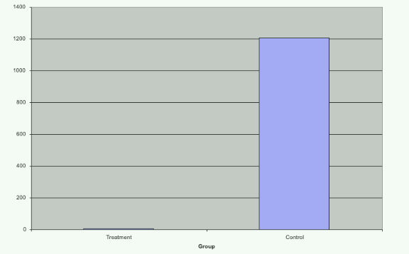</p>
<p>但仔细看数据，这种区别原来主要是因为有两个很大的离群点。将数据进行log以后，更加明朗。</p>
<p>如下箱线图所示，左边为原数据，可以看出二者可能区别不大，有两个非常大的离群点。log后基本展示了基本情况。（个人感觉，那两个离群点实在太大，也可以直接剔除）</p>
<p>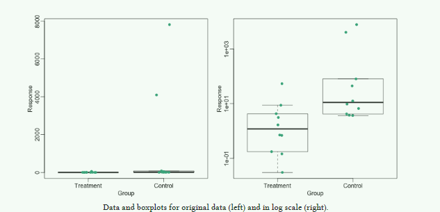</p>
<h4 id="Show-the-scatter-plot">Show the scatter plot</h4>
<p>很多统计分析都是证明两个变量之间存在关系。相关系数和相应的图可以展示这一点。然而，只展现回归线是不够的，因为这掩饰了散点。</p>
<h4 id="High-correlation-does-not-imply-replication">High correlation does not imply replication</h4>
<p>相关系数很高，不代表重复性很好，这一部分没看懂。之后补上</p>
<h4 id="Barplots-for-paired-data">Barplots for paired data</h4>
<p>当样本数较少且为配对实验时，通常我们会用两种颜色的条形图表示比如实验前和实验后。</p>
<p>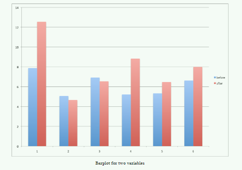</p>
<p>但是我们有更好的办法。比如散点图，我们可以看到点都是高于identity line（这里应该是y=x）。另一种方法是直接画差值的散点图。</p>
<p>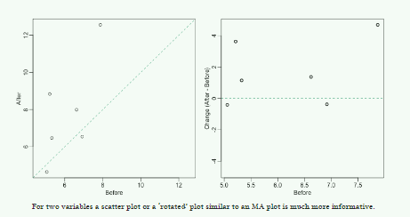</p>
<p>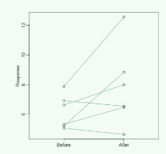</p>
<h4 id="Gratuitous-3D-（没有必要的3D）">Gratuitous 3D （没有必要的3D）</h4>
<p>以下是一个3D图，你会发现并不清楚。很难去确定其中某一个点对应的数值。</p>
<p>其实这只要不同的颜色来区分三条线就可以了。</p>
<p>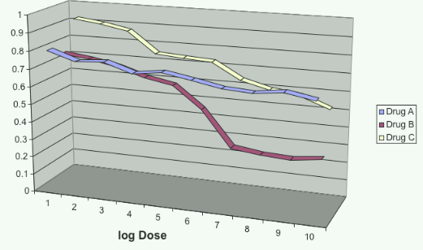</p>
<p>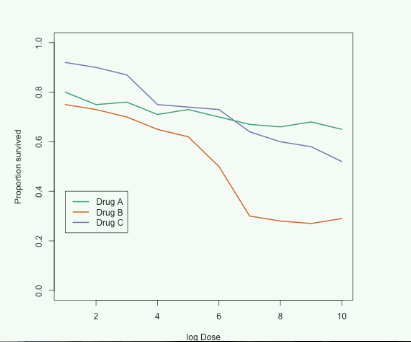</p>
<h4 id="Too-many-significant-digits">Too many significant digits</h4>
<p>默认情况下，我们会得到很多重要的数字，但我们不是都要放上去。从R中直接复制粘贴是很愚蠢的，这导致你最后显示的不是一张图，而更像是一张表。</p>
<h4 id="Displaying-data-well">Displaying data well</h4>
<p>展示数据的一般准则：</p>
<ul>
<li>Be accurate and clear.</li>
<li>Let the data speak.</li>
<li>Show as much information as possible, taking care not to obscure the message.</li>
<li>Science not sales: avoid unnecessary frills (esp. gratuitous 3D).<br>
(科学不是销售，避免不必要的虚架子，比如3D)</li>
<li>In tables, every digit should be meaningful. Don’t drop ending 0’s.<br>
（表格中，每一个小数位点都有意义）</li>
</ul>
<h3 id="Misunderstanding-Correlation-Advanced">Misunderstanding Correlation (Advanced)</h3>
<p>现在相关系数主要用于体现reproducibility。但是实际上，相关系数不足以体现reproducibility。</p>
<p>最坏的错误是，计算相关系数的数据不是近似服从<strong>二元正态分布</strong>。上面提到，均值，标准差，相关系数都是基于二元正态分布。但是，有很多数据不符合，如基因表达量数据，通常有很肥的右侧尾巴。</p>
<p>计算reproducibility 最直接的方式就是计算两个变量的距离。</p>
<p>The standard way to quantify reproducibility between two sets of replicated measurements, sayx1; : : : ; xnandy1; : : : ; yn, is simply to compute the distance between them。</p>
<p>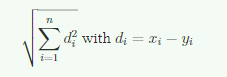</p>
<p>后面没看，也看不懂。</p>
<p>我连这里的reproducibility是什么意思都不知道。</p>
<h3 id="Robust-Summaries">Robust Summaries</h3>
<p>在分析数据的过程中，我们通常假设数据符合正态分布。但是我们收集数据的过程中，总是不可避免地加入了一些错误的数据点（离群点）。类似这种偏离很大的离群点，会导致分析结果出现很大的偏差。</p>
<p>如下例，我们在0到1之间的数据中，插入一个值为100的离群点。</p>
<figure class="highlight r"><table><tr><td class="gutter"><pre><span class="line">1</span><br><span class="line">2</span><br><span class="line">3</span><br><span class="line">4</span><br></pre></td><td class="code"><pre><span class="line">set.seed(<span class="number">1</span>)</span><br><span class="line">x=<span class="built_in">c</span>(rnorm(<span class="number">100</span>,<span class="number">0</span>,<span class="number">1</span>))<span class="comment">##real distribution</span></span><br><span class="line">x[<span class="number">23</span>]&lt;-<span class="number">100</span><span class="comment">##mistake made in 23th measurement</span></span><br><span class="line">boxplot(x)</span><br></pre></td></tr></table></figure>
<p>我们看一下均值和标准差，发现偏离很大</p>
<figure class="highlight r"><table><tr><td class="gutter"><pre><span class="line">1</span><br><span class="line">2</span><br><span class="line">3</span><br><span class="line">4</span><br></pre></td><td class="code"><pre><span class="line">cat(<span class="string">&quot;The average is&quot;</span>,mean(x),<span class="string">&quot;and the SD is&quot;</span>,sd(x))</span><br><span class="line"></span><br><span class="line"><span class="comment">## The average is 1.108142 and the SD is 10.02938</span></span><br><span class="line"></span><br></pre></td></tr></table></figure>
<h4 id="The-median">The median</h4>
<p>这个中位数，对于离群点，是robust的。</p>
<figure class="highlight r"><table><tr><td class="gutter"><pre><span class="line">1</span><br><span class="line">2</span><br></pre></td><td class="code"><pre><span class="line">median(x)</span><br><span class="line">[<span class="number">1</span>] <span class="number">0.1684483</span></span><br></pre></td></tr></table></figure>
<h4 id="The-median-absolute-deviation">The median absolute deviation</h4>
<p></p>
<h4 id="Spearman-correlation">Spearman correlation</h4>
<p>和前面类似，也是robust 的相关系数。几乎不受离群点的影响。</p>
<h4 id="Symmetry-of-log-ratios">Symmetry of log ratios</h4>
<p>当涉及比值数据时，数据不是对称的，1/32 比 32/1 更接近1。这时候采用log()函数处理一下，就会对称（log(x/y) = log(x) - log(y) ）</p>
<h3 id="Wilcoxon-Rank-Sum-Test">Wilcoxon Rank Sum Test</h3>
<p>从上面知道，样本均值和标准差易受离群点的影响。t检验需要用到这两个数，因此也容易受到影响。这种Wilcoxon Rank Sum Test 就不会受到影响……</p>
<p>后面没看</p>
<h2 id="Effect-size-–-wikipedia">Effect size – wikipedia</h2>
<p>In statistics, an effect size is a quantitative measure of the magnitude of a phenomenon.(这个effect size 不知道咋翻译,效应水平？)。举例说明，包括相关系数，回归系数，均值差。对于大部分的effect size，绝对值越大，往往说明效应越强。</p>
<h3 id="Relationship-to-test-statistics">Relationship to test statistics</h3>
<p>基于采样的effect sizes 和 假设检验的统计检验量不一样。effect sizes 是检验 strength(magnitude ) ；然而假设检验是给出一个显著性水平（P值），反应这个magnitude 或 relationship 是不是出于偶然（随机误差）。effect size 并不直接决定显著性水平，反之亦然。<strong>只要样本量足够大，哪怕effect size 很小，也能得到统计显著结果</strong>。因此，只看p值可能有一定的误导。</p>
<h3 id="Standardized-and-unstandardized-effect-sizes">Standardized and unstandardized effect sizes</h3>
<p>effect sizes 标准化的原因：<br>
1. 变量的单位本身没有意义<br>
2. 结果来自多重结果的合并<br>
3. 不同的结果用了不同的单位<br>
4. it is desired to convey the size of an effect relative to the variability in the population</p>
<h3 id="Types">Types</h3>
<h4 id="Correlation-family">Correlation family</h4>
<ol>
<li>
<p>Pearson r</p>
</li>
<li>
<p>Coefficient of determination (r^2^ or R^2^)<br>
Pearson r 的平方</p>
<blockquote>
<p>In the case of paired data, this is a measure of the proportion of variance shared by the two variables, and varies from 0 to 1. (在配对数据中，一个变量中的方差能被另一个变量解释的比例)</p>
</blockquote>
</li>
</ol>
<h4 id="Difference-family">Difference family</h4>
<p>Effect sizes based on differences between means</p>
<p>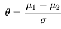</p>
<p>其中μ1 μ2 是两个群体的均值；σ是基于一个群体或两个群体的标准差。</p>
<p>这种形式很像t统计量，但是t统计量包含了一个因素，根号N。这意味着，对于给定的effect size，显著水平会随着样本量的增加而增加。 Unlike the t-test statistic, the effect size aims to estimate a population parameter and is not affected by the sample size.</p>
<h5 id="Cohen’s-d">Cohen’s d</h5>
<p></p>
<h2 id="PEVD-kennedy-1993">PEVD -kennedy 1993</h2>
<blockquote>
<p>Unbiased comparisons between animals  can, how- ever, be made if  animals are sampled from a common genetic population, in which case the consequence of “disconnectedness” is reflected   only in the PEV of differences between EBV of animals. The PEV of the individual animal (diagonal element) is unchanged given the same number of animals. The PEV of difference in EBV, however, depends on whether comparisons are within or between management units.</p>
</blockquote>
<p>这是好像最早提及PEVD的文献。但是具体计算的部分，没有提及。只是说现在都最多只提供系数矩阵逆矩阵对角线元素（Misztal 和 Wiggans1988,Meyer,1989），但没有提供非对角线元素的值。</p>
<p>因此PEVD不能计算，然后就给出了三种替代方案。巴拉巴拉。后面对我没作用。</p>
<h1>Changes in connectedness over time in alternative sheep sire referencing schemes - Kuehn 2008</h1>
<p>这是在Yu的文章中提到了一嘴，说PEVD 的 scale ,也就是去除单位，是按照这篇文章的方法。</p>
<p>这篇文章用了两个指标，第一个是 onnectedness correlation (Lewis etal., 1999, 2005)</p>
<p>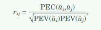</p>
<blockquote>
<p>The connectedness corre-lation was calculated and averaged each year for allpairs of ram lambs born in different flocks across all15 flocks (lamb rij)</p>
</blockquote>
<p>还是要两个群体两两配对，再求均值。</p>
<p>有两种算法。一种是这种，还有一种大概意思是直接用场效应,和mathur一致。</p>
<p>scaled PEVD 就是再除以加性方差。</p>
<p>还是两种计算PEVD的算法，一种是用个体，但是要两两配对求均值；一种就是直接用场效应。</p>
<h1>H阵</h1>
<p>mistal 2010 和 2012 的文献中，A下标的1 和 2 是相反的。</p>
<h1>暑假统计遗传学培训班</h1>
<h2 id="矩阵运算（matrix-algebra）">矩阵运算（matrix algebra）</h2>
<ul>
<li>对于对称阵，A’ = A 。（对称阵的转置矩阵为其本身）</li>
<li>（AB)’ = B’A’</li>
<li>方阵的迹（trace）<br>
tr(A) = 对角线元素之和<br>
trA = sum(diag(A))</li>
<li>矩阵的秩（Rank）：矩阵中线性无关的行数或列数<br>
<strong>不满秩的矩阵称为奇异阵（singular）</strong><br>
r &lt;- qr(D)$rank</li>
<li>方阵的<strong>行列式</strong>：如果|A|=0，A 不满秩，即 A 是奇异的<br>
detA &lt;- det(A)</li>
</ul>
<h3 id="求逆">求逆</h3>
<p>对于一个<strong>满秩</strong>的方阵A，必均在其逆矩阵，且唯一。</p>
<blockquote>
<p>（AB)^-1^ = B^-1^ A^-1^<br>
A- = solve(A)</p>
</blockquote>
<p>对角矩阵的逆矩阵</p>
<p>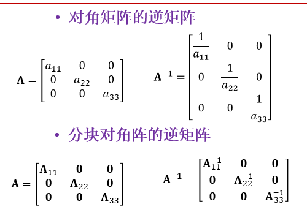</p>
<p><strong>广义逆</strong><br>
AA^-^A = A<br>
如果满秩，那么广义逆和逆相等，解是唯一的。<br>
一个奇异阵可以有无穷多个广义逆矩阵。</p>
<figure class="highlight plain"><table><tr><td class="gutter"><pre><span class="line">1</span><br><span class="line">2</span><br></pre></td><td class="code"><pre><span class="line">library(MASS)</span><br><span class="line">ginv(D)</span><br></pre></td></tr></table></figure>
<h3 id="正定矩阵（Positive-definite）">正定矩阵（Positive definite）</h3>
<p>没看懂</p>
<p>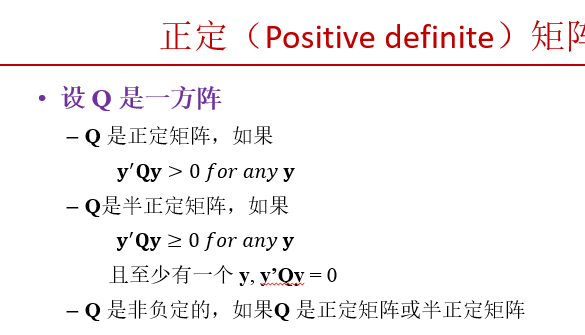</p>
<h3 id="Cholesky-分解">Cholesky 分解</h3>
<p>任何<strong>对称正定矩阵</strong>都可分解为</p>
<p>** A = TT’ **<br>
其中，T是一个下三角矩阵<br>
T &lt;- chol(A) #注：该函数返回的是一个上三角矩阵</p>
<h3 id="正交矩阵（Orthogonal）">正交矩阵（Orthogonal）</h3>
<p>正交矩阵的转置矩阵和逆矩阵相等</p>
<h3 id="特征值和特征向量">特征值和特征向量</h3>
<p>对于方阵 A, 如果存在一个常量 d 和一个非零向量 u, 它们满足</p>
<p>𝐀𝐮=𝑑𝐮</p>
<p>称 d 是 A 的特征值（eigenvalue）,  u 是与 d 对应的特征向量（eigenvector）</p>
<p>note: 一个矩阵可以有多个特征值和多个对应的特征向量</p>
<p>eigen(A)</p>
<p>特征值和特征向量性质：</p>
<ul>
<li>一个矩阵的所有特征值之和等于其迹</li>
<li>一个矩阵的所有特征值之积等于其行列式</li>
<li>一个矩阵的非零特征值的个数等于其秩</li>
<li>如果一个矩阵的所有特征值均大于0，则该矩阵是正定的</li>
<li>如果一个矩阵的所有特征值均大于或等于0，半正定</li>
<li>如果Q为对称矩阵，则它可分解为<br>
** Q = UDU’ **<br>
D 为对角矩阵，其对角线元素为Q的特征值<br>
U 为正交矩阵，其各列为Q的特征向量</li>
</ul>
<h3 id="矩阵的微分（Differentiation）">矩阵的微分（Differentiation）</h3>
<p>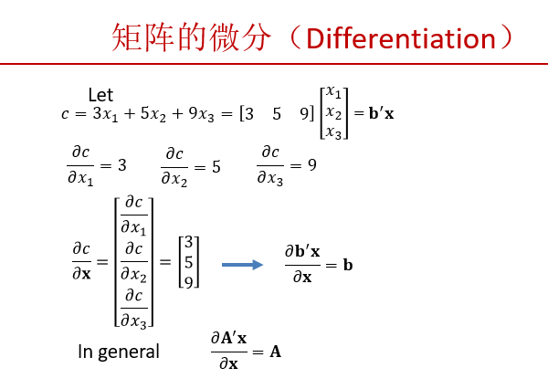</p>
<p>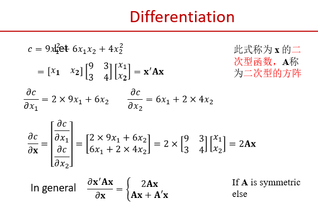</p>
<h3 id="随机向量">随机向量</h3>
<p>由随机变量组成的向量</p>
<p>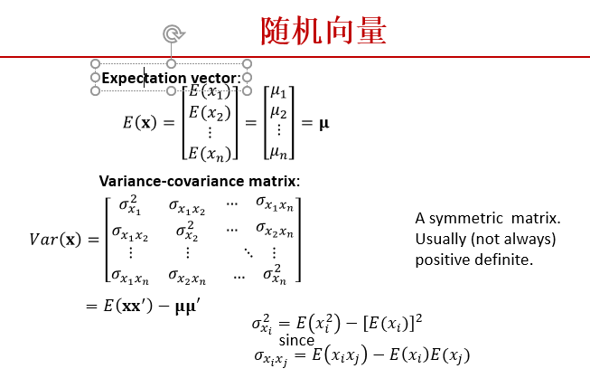</p>
<p>下一张图不懂</p>
<p>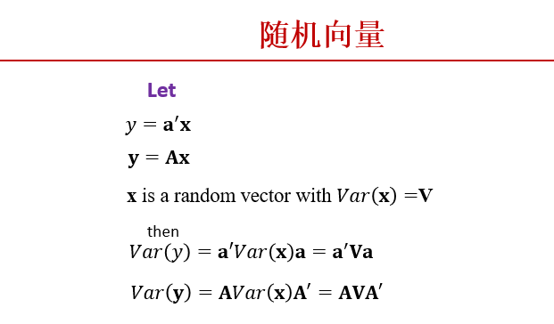</p>
<h3 id="PEV-PEVD-是否乘以残差方差">PEV / PEVD 是否乘以残差方差</h3>
<p>如果MME左右两边没有约掉R^-1^，那么就不用乘残差方差；否则就要乘。（我计算都是约掉的，所以要乘）</p>
<p>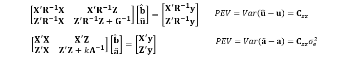</p>
<h3 id="A-1-的计算">A^-1^ 的计算</h3>
<ol>
<li>由于A是对称正定矩阵，因此可以使用 Cholesky 分解，将其分解一个下三角矩阵乘以其转置矩阵。</li>
<li>下三角矩阵矩阵L 可以分解一个新的下三角矩阵（T，对角线元素为1） 乘以 一个对角阵 （D，为L阵的对角线元素）</li>
<li>因此，𝐀=𝐓𝐃𝐃𝐓‘ 。而 <strong>DD</strong> 相同的对角阵相乘仍为对角阵，其元素为原来的平方。</li>
</ol>
<p>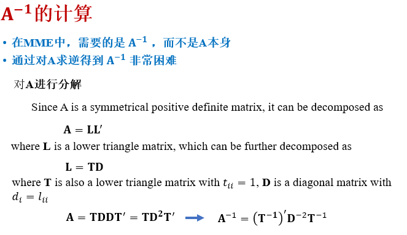</p>
<p>注：任何一个矩阵（T）右乘以一个对角阵（D），等于原矩阵的第一列乘以d1，第二列乘以d2……以此类推。</p>
<h4 id="YD-yield-deviation">YD (yield deviation)</h4>
<p>应该是指校正表型，指校正了所有固定环境效应的动物个体的（平均）表型值</p>
<h1>矩阵运算实际收获</h1>
<p>对LHS 和 LHS 的上三角矩阵 求逆，结果不一致。</p>
 
      <!-- reward -->
      
    </div>
    

    <!-- copyright -->
    
    <div class="declare">
      <ul class="post-copyright">
        <li>
          <i class="ri-copyright-line"></i>
          <strong>版权声明： </strong>
          
          本博客所有文章除特别声明外，著作权归作者所有。转载请注明出处！
          
        </li>
      </ul>
    </div>
    
    <footer class="article-footer">
       
<div class="share-btn">
      <span class="share-sns share-outer">
        <i class="ri-share-forward-line"></i>
        分享
      </span>
      <div class="share-wrap">
        <i class="arrow"></i>
        <div class="share-icons">
          
          <a class="weibo share-sns" href="javascript:;" data-type="weibo">
            <i class="ri-weibo-fill"></i>
          </a>
          <a class="weixin share-sns wxFab" href="javascript:;" data-type="weixin">
            <i class="ri-wechat-fill"></i>
          </a>
          <a class="qq share-sns" href="javascript:;" data-type="qq">
            <i class="ri-qq-fill"></i>
          </a>
          <a class="douban share-sns" href="javascript:;" data-type="douban">
            <i class="ri-douban-line"></i>
          </a>
          <!-- <a class="qzone share-sns" href="javascript:;" data-type="qzone">
            <i class="icon icon-qzone"></i>
          </a> -->
          
          <a class="facebook share-sns" href="javascript:;" data-type="facebook">
            <i class="ri-facebook-circle-fill"></i>
          </a>
          <a class="twitter share-sns" href="javascript:;" data-type="twitter">
            <i class="ri-twitter-fill"></i>
          </a>
          <a class="google share-sns" href="javascript:;" data-type="google">
            <i class="ri-google-fill"></i>
          </a>
        </div>
      </div>
</div>

<div class="wx-share-modal">
    <a class="modal-close" href="javascript:;"><i class="ri-close-circle-line"></i></a>
    <p>扫一扫，分享到微信</p>
    <div class="wx-qrcode">
      
    </div>
</div>

<div id="share-mask"></div>  
  <ul class="article-tag-list" itemprop="keywords"><li class="article-tag-list-item"><a class="article-tag-list-link" href="/tags/%E6%95%B0%E6%8D%AE%E5%88%86%E6%9E%90/" rel="tag">数据分析</a></li><li class="article-tag-list-item"><a class="article-tag-list-link" href="/tags/%E7%90%86%E8%AE%BA%E5%AD%A6%E4%B9%A0/" rel="tag">理论学习</a></li><li class="article-tag-list-item"><a class="article-tag-list-link" href="/tags/%E7%BA%BF%E6%80%A7%E6%A8%A1%E5%9E%8B/" rel="tag">线性模型</a></li></ul>

    </footer>
  </div>

   
  <nav class="article-nav">
    
      <a href="/posts/aec3be7e/" class="article-nav-link">
        <strong class="article-nav-caption">上一篇</strong>
        <div class="article-nav-title">
          
            linear algebra step by step
          
        </div>
      </a>
    
    
      <a href="/posts/59ca09be/" class="article-nav-link">
        <strong class="article-nav-caption">下一篇</strong>
        <div class="article-nav-title">DMU软件使用笔记</div>
      </a>
    
  </nav>

  
   
<div class="gitalk" id="gitalk-container"></div>

<link rel="stylesheet" href="https://cdn.jsdelivr.net/npm/gitalk@1.6.2/dist/gitalk.css">


<script src="https://cdn.jsdelivr.net/npm/gitalk@1.6.2/dist/gitalk.min.js"></script>


<script src="https://cdn.jsdelivr.net/npm/blueimp-md5@2.10.0/js/md5.min.js"></script>

<script type="text/javascript">
  var gitalk = new Gitalk({
    clientID: '6d2af33404b444be44e5',
    clientSecret: 'f133b587d5da8ae224e4e922f069e3984d8db35c',
    repo: 'gitalk',
    owner: 'VincereZhou',
    admin: ['VincereZhou'],
    // id: location.pathname,      // Ensure uniqueness and length less than 50
    id: md5(location.pathname),
    distractionFreeMode: false,  // Facebook-like distraction free mode
    pagerDirection: 'last'
  })

  gitalk.render('gitalk-container')
</script>

     
</article>

</section>
      <footer class="footer">
  <div class="outer">
    <ul>
      <li>
        Copyrights &copy;
        2019-2021
        <i class="ri-heart-fill heart_icon"></i> Vincere Zhou
      </li>
    </ul>
    <ul>
      <li>
        
        
        <span>
  <span><i class="ri-user-3-fill"></i>访问人数:<span id="busuanzi_value_site_uv"></span></s>
  <span class="division">|</span>
  <span><i class="ri-eye-fill"></i>浏览次数:<span id="busuanzi_value_page_pv"></span></span>
</span>
        
      </li>
    </ul>
    <ul>
      
    </ul>
    <ul>
      
    </ul>
    <ul>
      <li>
        <!-- cnzz统计 -->
        
      </li>
    </ul>

    <!-- 与只只在一起天数 -->
	<ul>
		<li><span id="lovetime_span"></span></li>
	</ul>
    <script type="text/javascript">			
        function show_runtime() {
            window.setTimeout("show_runtime()", 1000);
            X = new Date("03/04/2021 22:11:00");
            Y = new Date();
            T = (Y.getTime() - X.getTime());
            M = 24 * 60 * 60 * 1000;
            a = T / M;
            A = Math.floor(a);
            b = (a - A) * 24;
            B = Math.floor(b);
            c = (b - B) * 60;
            C = Math.floor((b - B) * 60);
            D = Math.floor((c - C) * 60);
            lovetime_span.innerHTML = "只只和男朋友在一起了 " + A + "天" + B + "小时" + C + "分" + D + "秒"
        }
        show_runtime();
    </script>

  </div>
</footer>
      <div class="float_btns">
        <div class="totop" id="totop">
  <i class="ri-arrow-up-line"></i>
</div>

<div class="todark" id="todark">
  <i class="ri-moon-line"></i>
</div>

      </div>
    </main>
    <aside class="sidebar on">
      <button class="navbar-toggle"></button>
<nav class="navbar">
  
  <div class="logo">
    <a href="/"></a>
  </div>
  
  <ul class="nav nav-main">
    
    <li class="nav-item">
      <a class="nav-item-link" href="/">主页</a>
    </li>
    
    <li class="nav-item">
      <a class="nav-item-link" href="/archives">归档</a>
    </li>
    
    <li class="nav-item">
      <a class="nav-item-link" href="/categories">分类</a>
    </li>
    
    <li class="nav-item">
      <a class="nav-item-link" href="/tags">标签</a>
    </li>
    
    <li class="nav-item">
      <a class="nav-item-link" href="/friends">友链</a>
    </li>
    
    <li class="nav-item">
      <a class="nav-item-link" href="/posts/ac7827ff">只只</a>
    </li>
    
    <li class="nav-item">
      <a class="nav-item-link" href="/about">关于</a>
    </li>
    
  </ul>
</nav>
<nav class="navbar navbar-bottom">
  <ul class="nav">
    <li class="nav-item">
      
      <a class="nav-item-link nav-item-search"  title="搜索">
        <i class="ri-search-line"></i>
      </a>
      
      
      <a class="nav-item-link" target="_blank" href="/atom.xml" title="RSS Feed">
        <i class="ri-rss-line"></i>
      </a>
      
    </li>
  </ul>
</nav>
<div class="search-form-wrap">
  <div class="local-search local-search-plugin">
  <input type="search" id="local-search-input" class="local-search-input" placeholder="Search...">
  <div id="local-search-result" class="local-search-result"></div>
</div>
</div>
    </aside>
    <script>
      if (window.matchMedia("(max-width: 768px)").matches) {
        document.querySelector('.content').classList.remove('on');
        document.querySelector('.sidebar').classList.remove('on');
      }
    </script>
    <div id="mask"></div>

<!-- #reward -->
<div id="reward">
  <span class="close"><i class="ri-close-line"></i></span>
  <p class="reward-p"><i class="ri-cup-line"></i>请我喝杯咖啡吧~</p>
  <div class="reward-box">
    
    <div class="reward-item">
      
      <span class="reward-type">支付宝</span>
    </div>
    
    
    <div class="reward-item">
      
      <span class="reward-type">微信</span>
    </div>
    
  </div>
</div>
    
<script src="/js/jquery-2.0.3.min.js"></script>


<script src="/js/lazyload.min.js"></script>

<!-- Tocbot -->


<script src="/js/tocbot.min.js"></script>

<script>
  tocbot.init({
    tocSelector: '.tocbot',
    contentSelector: '.article-entry',
    headingSelector: 'h1, h2, h3, h4, h5, h6',
    hasInnerContainers: true,
    scrollSmooth: true,
    scrollContainer: 'main',
    positionFixedSelector: '.tocbot',
    positionFixedClass: 'is-position-fixed',
    fixedSidebarOffset: 'auto'
  });
</script>

<script src="https://cdn.jsdelivr.net/npm/jquery-modal@0.9.2/jquery.modal.min.js"></script>
<link rel="stylesheet" href="https://cdn.jsdelivr.net/npm/jquery-modal@0.9.2/jquery.modal.min.css">
<script src="https://cdn.jsdelivr.net/npm/justifiedGallery@3.7.0/dist/js/jquery.justifiedGallery.min.js"></script>

<script src="/dist/main.js"></script>

<!-- ImageViewer -->

<!-- Root element of PhotoSwipe. Must have class pswp. -->
<div class="pswp" tabindex="-1" role="dialog" aria-hidden="true">

    <!-- Background of PhotoSwipe. 
         It's a separate element as animating opacity is faster than rgba(). -->
    <div class="pswp__bg"></div>

    <!-- Slides wrapper with overflow:hidden. -->
    <div class="pswp__scroll-wrap">

        <!-- Container that holds slides. 
            PhotoSwipe keeps only 3 of them in the DOM to save memory.
            Don't modify these 3 pswp__item elements, data is added later on. -->
        <div class="pswp__container">
            <div class="pswp__item"></div>
            <div class="pswp__item"></div>
            <div class="pswp__item"></div>
        </div>

        <!-- Default (PhotoSwipeUI_Default) interface on top of sliding area. Can be changed. -->
        <div class="pswp__ui pswp__ui--hidden">

            <div class="pswp__top-bar">

                <!--  Controls are self-explanatory. Order can be changed. -->

                <div class="pswp__counter"></div>

                <button class="pswp__button pswp__button--close" title="Close (Esc)"></button>

                <button class="pswp__button pswp__button--share" style="display:none" title="Share"></button>

                <button class="pswp__button pswp__button--fs" title="Toggle fullscreen"></button>

                <button class="pswp__button pswp__button--zoom" title="Zoom in/out"></button>

                <!-- Preloader demo http://codepen.io/dimsemenov/pen/yyBWoR -->
                <!-- element will get class pswp__preloader--active when preloader is running -->
                <div class="pswp__preloader">
                    <div class="pswp__preloader__icn">
                        <div class="pswp__preloader__cut">
                            <div class="pswp__preloader__donut"></div>
                        </div>
                    </div>
                </div>
            </div>

            <div class="pswp__share-modal pswp__share-modal--hidden pswp__single-tap">
                <div class="pswp__share-tooltip"></div>
            </div>

            <button class="pswp__button pswp__button--arrow--left" title="Previous (arrow left)">
            </button>

            <button class="pswp__button pswp__button--arrow--right" title="Next (arrow right)">
            </button>

            <div class="pswp__caption">
                <div class="pswp__caption__center"></div>
            </div>

        </div>

    </div>

</div>

<link rel="stylesheet" href="https://cdn.jsdelivr.net/npm/photoswipe@4.1.3/dist/photoswipe.min.css">
<link rel="stylesheet" href="https://cdn.jsdelivr.net/npm/photoswipe@4.1.3/dist/default-skin/default-skin.min.css">
<script src="https://cdn.jsdelivr.net/npm/photoswipe@4.1.3/dist/photoswipe.min.js"></script>
<script src="https://cdn.jsdelivr.net/npm/photoswipe@4.1.3/dist/photoswipe-ui-default.min.js"></script>

<script>
    function viewer_init() {
        let pswpElement = document.querySelectorAll('.pswp')[0];
        let $imgArr = document.querySelectorAll(('.article-entry img:not(.reward-img)'))

        $imgArr.forEach(($em, i) => {
            $em.onclick = () => {
                // slider展开状态
                // todo: 这样不好，后面改成状态
                if (document.querySelector('.left-col.show')) return
                let items = []
                $imgArr.forEach(($em2, i2) => {
                    let img = $em2.getAttribute('data-idx', i2)
                    let src = $em2.getAttribute('data-target') || $em2.getAttribute('src')
                    let title = $em2.getAttribute('alt')
                    // 获得原图尺寸
                    const image = new Image()
                    image.src = src
                    items.push({
                        src: src,
                        w: image.width || $em2.width,
                        h: image.height || $em2.height,
                        title: title
                    })
                })
                var gallery = new PhotoSwipe(pswpElement, PhotoSwipeUI_Default, items, {
                    index: parseInt(i)
                });
                gallery.init()
            }
        })
    }
    viewer_init()
</script>

<!-- MathJax -->

<script type="text/x-mathjax-config">
  MathJax.Hub.Config({
      tex2jax: {
          inlineMath: [ ['$','$'], ["\\(","\\)"]  ],
          processEscapes: true,
          skipTags: ['script', 'noscript', 'style', 'textarea', 'pre', 'code']
      }
  });

  MathJax.Hub.Queue(function() {
      var all = MathJax.Hub.getAllJax(), i;
      for(i=0; i < all.length; i += 1) {
          all[i].SourceElement().parentNode.className += ' has-jax';
      }
  });
</script>

<script src="https://cdn.jsdelivr.net/npm/mathjax@2.7.6/unpacked/MathJax.js?config=TeX-AMS-MML_HTMLorMML"></script>
<script>
  var ayerConfig = {
    mathjax: true
  }
</script>

<!-- Katex -->

<!-- busuanzi  -->


<script src="/js/busuanzi-2.3.pure.min.js"></script>


<!-- ClickLove -->

<!-- ClickBoom1 -->

<!-- ClickBoom2 -->

<!-- CodeCopy -->


<link rel="stylesheet" href="/css/clipboard.css">

<script src="https://cdn.jsdelivr.net/npm/clipboard@2/dist/clipboard.min.js"></script>
<script>
  function wait(callback, seconds) {
    var timelag = null;
    timelag = window.setTimeout(callback, seconds);
  }
  !function (e, t, a) {
    var initCopyCode = function(){
      var copyHtml = '';
      copyHtml += '<button class="btn-copy" data-clipboard-snippet="">';
      copyHtml += '<i class="ri-file-copy-2-line"></i><span>COPY</span>';
      copyHtml += '</button>';
      $(".highlight .code pre").before(copyHtml);
      $(".article pre code").before(copyHtml);
      var clipboard = new ClipboardJS('.btn-copy', {
        target: function(trigger) {
          return trigger.nextElementSibling;
        }
      });
      clipboard.on('success', function(e) {
        let $btn = $(e.trigger);
        $btn.addClass('copied');
        let $icon = $($btn.find('i'));
        $icon.removeClass('ri-file-copy-2-line');
        $icon.addClass('ri-checkbox-circle-line');
        let $span = $($btn.find('span'));
        $span[0].innerText = 'COPIED';
        
        wait(function () { // 等待两秒钟后恢复
          $icon.removeClass('ri-checkbox-circle-line');
          $icon.addClass('ri-file-copy-2-line');
          $span[0].innerText = 'COPY';
        }, 2000);
      });
      clipboard.on('error', function(e) {
        e.clearSelection();
        let $btn = $(e.trigger);
        $btn.addClass('copy-failed');
        let $icon = $($btn.find('i'));
        $icon.removeClass('ri-file-copy-2-line');
        $icon.addClass('ri-time-line');
        let $span = $($btn.find('span'));
        $span[0].innerText = 'COPY FAILED';
        
        wait(function () { // 等待两秒钟后恢复
          $icon.removeClass('ri-time-line');
          $icon.addClass('ri-file-copy-2-line');
          $span[0].innerText = 'COPY';
        }, 2000);
      });
    }
    initCopyCode();
  }(window, document);
</script>


<!-- CanvasBackground -->


    
  </div>
<script src="/live2dw/lib/L2Dwidget.min.js?094cbace49a39548bed64abff5988b05"></script><script>L2Dwidget.init({"pluginRootPath":"live2dw/","pluginJsPath":"lib/","pluginModelPath":"assets/","tagMode":false,"debug":false,"model":{"jsonPath":"live2d-widget-model-wanko"},"display":{"position":"left","width":150,"height":300,"hOffset":80,"vOffset":-70},"mobile":{"show":false,"scale":0.5},"log":false});</script></body>

</html>